Σελίδα 01
Πρωτότυπο ↗Ὁ Μέγας ἐμπνευστής μας καί ὁδηγός Ἅγιος Ὁμολογητής Φιλάρετος!
Μακαριώτατε πατέρα μας, εὐλογεῖτε καί χαίρετε πάντοτε!
Ἐλάβομεν τήν ἀπάντησή σας πρός τόν ἀδελφόν Πέτρον, τήν ὁποίαν εἴχατε τήν ἀγάπην νά τήν κοινοποιήσετε καί εἰς ἡμᾶς. Δέν γνωρίζω, πότε καί τί Σᾶς ἔγραψεν ὁ ἐκλεκτός μας ἀδελφός καί λίαν ἀγαπητός καθηγητής τοῦ Πανεπιστημίου τῆς Πάτρας Πέτρος Κουτσοῦκος, (σημ.: βρίσκεται ἀνάμεσα στούς κορυφαίους πανεπιστημιακούς Χημικούς καθηγητές παγκοσμίως, 14ος στόν κόσμον), καθότι δέν μοῦ γνωστοποίησε τήν ἐπιστολήν του.
Μέ πολλήν τήν ἀγάπην καί τήν ἐκτίμηση πρός τό σεπτόν πρόσωπόν Σας ἀλλά καί μετά φόβου Θεοῦ καί ἀκατάπαυστη προσευχή νυχθημερόν, ὅπως πολύ καλά γνωρίζετε, συντάσσω αὐτές τίς γραμμές.
Ὅλοι οἱ Ἅγιοι Πατέρες μέ τήν διδασκαλίαν τους, οἱ Ἱεροί Κανόνες καί οἱ ἀποφάσεις τῶν Οἰκουμενικῶν καί Πανορθοδόξων Συνόδων κατά-
Σελίδα 02
Πρωτότυπο ↗δικάζουν ἐπαμφοτερίζουσες συμπεριφορές στά θέματα τῆς Ὀρθοδοξίας ἀναθεματίζουν καί καθαιροῦν ὅσους συναυλίζονται, συναγελάζονται, συμφύρονται καί συγκυλίονται μέ τήν πόρνην αἵρεση, πού παντοιοτρόπως ἐκπροσωπεῖ ὁ Ἀρχιοικουμενιστής Ἰλίου Ἀθηναγόρας, ὁ ὁποῖος συνάμα κηρύσσει καί τήν βδελυρή αἵρεση τῆς Δεσποτοκρατίας1. Μέ αὐτόν τόν μέγαν Οἰκουμενιστήν συναυλίσθηκε, συναγελάσθηκε, συμφύρθηκε καί συγκυλίσθηκε ὁ Ἀττικῆς Χρυσόστομος Μανιώτης. Καί ἐπειδή τό Εὐαγγέλιον τοῦ Κυρίου μας ἐπιτάσσει, (κατὰ Ματθαῖον Εὐαγγέλιον 5, 37, στὴν ἐπὶ τοῦ Ὄρους Ὁμιλίαν): «ἔστω δὲ ὁ λόγος ὑμῶν ναὶ ναί, οὒ οὔ· τὸ δὲ περισσὸν τούτων ἐκ τοῦ πονηροῦ ἐστιν» (Ματθ. 5,37), καί στό παράλληλο χωρίον, στὴν Ἐπιστολὴν τοῦ Ἰακώβου 5, 12: μᾶς προτρέπει ὁ θεῖος Ἀπόστολος: «ἤτω δὲ ὑμῶν τὸ ναὶ ναὶ καὶ τὸ οὒ οὔ, ἵνα μὴ εἰς ὑπόκρισιν πέσητε», γιαὐτό, μέ ὀδύνην ψυχῆς καί μέ πολλήν τήν ἀγάπην καί υἱκήν ἀφοσίωση πρός τήν Ὑμετέραν Μακαριότητα, συλλέγω τά τῆς διδασκαλίας τῶν Ἁγίων Πατέρων καί τῶν ἱερῶν Κανόνων καί Σᾶς τά παραθέτω, γιά νά τά λάβετε σοβαρά ὑπόψιν Σας καί μέ τήν ὀξύνοιαν πού Σᾶς διακρίνει, νά τά ἀσπασθῆτε καί νά ἀναθεωρήσετε τά γραφόμενά Σας, στοιχούμενος πρός τό πνεῦμα καί τήν ἀλήθειαν τῶν Θεοφόρων Διδασκάλων μας:
Ἱερός Κανών Ο΄ Ἀποστολικός:
«Εἰ τις Ἐπίσκοπος, ἤ Πρεσβύτερος, ἤ Διάκονος, ἤ ὅλως τοῦ καταλόγου τῶν Κληρικῶν
νηστεύοι μετά Ἰουδαίων -(ὅπου Ἰουδαῖοι οἱ αἱρετικοί νοῦνται σήμερον κατά τούς Πατέρες)-, ἤ ἑορτάζοι μετ’ αὐτῶν, ἤ δέχοιτο παρ’ αὐτῶν τά τῆς ἑορτῆς ξένια, οἷον
ἄζυμα, ἤ τί τοιοῦτο -(ΔΙΑΒΑΣΜΕΝΑ ΥΠΟΤΟΥ ΑΙΡΕΤΙΚΟΥ ΒΑΓΙΑ)-
καθαιρείσθω, εἰ δέ Λαϊκός εἴη ἀφοριζέσθω».
Ἱερός Κανών ΛΖ΄Λαοδικείας: «Ὅτι οὐ δεῖ παρά Ἰουδαίων ἤ αἱρετικῶν τά πεμπόμενα ἑορταστικά λαμβάνειν μηδέ συνεορτάζειν αὐτοῖς».
Ἑρμηνεία Ἁγίου Νικοδήμου στό Πηδάλιον:
«Δέν πρέπει κατά τόν Κανόνα τοῦτον νά λαμβάνῃ τινάς Χριστιανός Ὀρθόδοξος τά δῶρα
ὁποῦ στέλλουσιν εἰς αὐτούς οἱ Ἰουδαῖοι καί αἱρετικοί, ὅταν ἔχουν τάς ἑορτάς των, ἀλλ’
οὔτε νά συνεορτάζει ὅλως αὐτοῖς. Ὅρα καί τόν με΄ καί ο΄ Ἀποστολικόν».
1 Βλ. τό ἐπισυναπτόμενον στό παράρτημα σχετικόν ἄρθρον.
Σελίδα 03
Πρωτότυπο ↗Ὁ ἅγιος Κύριλλος Ἀλεξανδρείας σὲ λόγον του ἀπολογητικὸν πρὸς τὸν εὐσεβέστατον
βασιλέα Θεοδόσιον, διδάσκει: «Ἦταν δὲ καὶ ἑτέρως χρήσιμον καὶ ἀναγκαῖον, στὸ ὑμέτερον κράτος, νὰ ἀπομακρύνετε
ἀπὸ τῶν θείων θυσιαστηρίων αὐτὸν ποὺ τὰ μολύνει...». (Ὁ Νεστόριος πρὸ τῆς καθαιρέσεώς του μόλυνε τὰ θεῖα θυσιαστήρια, (διδασκαλία τοῦ Μεγάλου Κυρίλλου
πρό τῆς Γ΄ Οἰκουμενικῆς). Ὁ πρόεδρος τῆς Γ΄ Οἰκουμενικῆς Συνόδου,
ἅγιος Κύριλλος σὲ ἄλλο σχετικόν χωρίον ἀναφέρεται στὸν
μολυσμὸν ἀπὸ τὴν κοινωνίαν τῶν αἱρετικῶν, πού μᾶς μεταφέρεται ἀπό τούς συναυλιζόμενους μέ αὐτούς, λέγοντας:
«Ἑπομένως λοιπόν, εἶναι ἄνομος πράξη καὶ βεβήλωση καὶ ὑπὸ δίκην
αἵματος, τοῦ νὰ ἀγαπάει κανεὶς νὰ συναυλίζεται μὲ τοὺς
ἀνοσίους αἱρετικοὺς καὶ τὴν πρὸς ἐκείνους
νὰ διατηρεῖ κοινωνίαν».
«Μὴ οὖν καθεσθῆτε μετὰ συνεδρίου ματαιότητος αὐτῶν, καὶ
μὴ ἰχνηλατήσητε τρίβον διανοίας αὐτῶν. Οὐ διαφέρει γὰρ δαίμονι συνοικῆσαι, ἢ μετὰ ἀποστάτου ἀνδρὸς παρανόμου·
ἐφορκιζόμενος γὰρ ὁ δαίμων, ὑποσταλεὶς φεύξεται, μὴ ἰσχύων μεῖναι ἔνθα
Χριστὸς κατ' αὐτοῦ ὀνομάζεται» (Ἁγίου Ἐφραὶμ τοῦ Σύρου, Διαθήκη).
«Παραφυλακτέον δὲ καὶ ἡμῖν αὐτοῖς, τοῖς ἐν Χριστῷ δεδικαιωμένοις καὶ διὰ τῆς εἰς αὐτὸν
πίστεως τὴν τοῦ Ἁγίου Πνεύματος λαχοῦσι μέθεξιν, τὸ ἐπιμίσγεσθαί τισιν, οἵπερ ἂν εἶεν διεστραμμένοι τὸν νοῦν, βέβηλοί τε τὰς φρένας,
καὶ τὴν πίστιν ἔχοντες οὐκ ὀρθήν. ἀλλογενεῖς γὰρ οὗτοι καὶ βαρβαρόφωνοι καὶ "λαλοῦντες διεστραμμένα·" οἷς εἰ ἐπιμίσγεταί τις,
πάντη τε καὶ πάντως καταμιανθήσεται. γέγραπται γὰρ
"Ὁ ἁπτόμενος πίσσης μολυνθήσεται." ἐξὸν οὖν ἄρα καρποφορεῖν νοητῶς ἐν Ἐκκλησίᾳ Χριστοῦ, τίς ἂν γένοιτο λόγος τοῦ θέλειν ἑτέραις οἱονείπως συνάπτεσθαι, καὶ κοινωνεῖν βεβήλοις συναγωγαῖς, καὶ καταθήγειν ἐφ' ἑαυτοῖς τὸν τῶν ὅλων Θεόν;» (Ἁγίου Κυρίλλου Αλεξανδρείας, Ἐξήγησις Ὑπομνηματικὴ
εἰς τὸν προφήτην Ὠσηέ).
Ὁ Ἅγιος Κύριλλος, ἑρμηνεύοντας, ἐπίσης, τὸ Λευιτικόν, γράφει:
«Οὐκοῦν ἀνόμημα καὶ βεβήλωσις, καὶ ὑπὸ δίκην αἵματος τὸ τοῖς
ἀνοσίοις αἱρετικοῖς συναυλίζεσθαι φιλεῖν,
καὶ τῆς πρὸς ἐκείνους ἀντέχεσθαι κοινωνίας.»
«Ἐάν», λοιπόν, « ὁ ἐπίσκοπος ἤ ὁ πρεσβύτερος, οἱ ὄντες ὀφθαλμοί τῆς Ἐκκλησίας,
κακῶς ἀναστρέφονται καί σκανδαλίζωσι τόν λαόν, χρή αὐτούς ἐκβάλλεσθαι.
Συμφέρον γάρ ἄνευ αὐτῶν συναθροίζεσθαι εἰς εὐκτήριον οἶκον ἤ μετ’ αὐτῶν ἐμβληθῆναι ὡς μετά Ἄννα καί Καϊάφα εἰς τήν γέενναν τοῦ πυρός» (P.G. 35, 33).
Σελίδα 04
Πρωτότυπο ↗Στήν ἀπάντησή Σας, Μακαριώτατε πατέρα μας, προσπαθεῖτε ποιμαντικά νά ἰσορροπήσετε τά πράγματα, ὅπως ἀβιάστως συνάγεται ἀπό τά γραφόμενά Σας. Κλίνετε, ὅμως, ξεκάθαρα πρός τήν ἄποψη, ὅτι πρόκειται περί ἁβροφρσύνης καί κοινωνικῆς εὐπρέπειας καί κοινωνικοῦ πρωτοκόλλου συμπεριφορᾶς, ὅσον ἀφορᾶ τήν ἐπανάληψη τῶν καί εἰς τό πρόσφατο παρελθόν ὀρθοδόξως ἀποδοκιμαστέων συμβάντων, τῶν ὁποίων ἐμπνευστής πρόξενος καί ἐκτελεστής ὑπῆρξεν ὁ Ἀττικῆς κ. Χρυσόστομος Μανιώτης!
Περισσεύουν οἱ φράσεις εἰς τό κείμενόν Σας, ὅτι ἡ κατ’ ἐπανάληψη, ὀρθοδόξως ἀποδοκιμαστέα, συμπεριφορά τοῦ Ἀττικῆς δέν εἶναι κάτι περισσότερον ἀπό μία φιλοφρόνηση καί μία κοινωνική ἁβροφροσύνην…
Ἀπό τήν ἄλλη πλευράν ὀρθῶς τονίζετε τό τοῦ Ἀποστόλου, ὅτι ἐάν «ἡ συμπεριφορά μου σκανδαλίζει τόν ἀδελφόν μου μήν φάγω κρέα εἰς τόν αἰῶνα», καί αὐτό σημαίνει, κατά τόν Μέγαν Παῦλον, ὅτι, ἄν καί (‘ἀκουσίως’, πόσον μᾶλλον ἐκ προμελέτης!) σκανδαλίζω τόν ἀδελφόν μου, θά πρέπει νά ἀπέχω ἀπό μία τέτοια συμπεριφοράν, ὅπως καί ὁ Ἀττικῆς ὤφειλε νά ἀπέχει, γιά νά μήν σκανδαλίζει τό Ὀρθόδοξον ποίμνιον. Αὐτό μοιάζει καί μέ τήν πρώτη ἀπάντηση τοῦ Ἀττικῆς, πού εἶχε σημειώσει, ὅταν δημιούργησε τό μέγα σκάνδαλον τοῦ συνεορτασμοῦ μέ τόν Ἀρχιοικουμενιστήν καί Δεσποτοκράτην Ἰλίου Ἀθηναγόραν, «ζητῶ συγγνώμην, ἐάν παρ’ ἐλπίδα σκανδάλισα κάποιους».
Μᾶς ἔλεγε, δηλαδή, μέ ἄλλα λόγια, τότε ὁ Ἀττικῆς, σάν νά μᾶς ἐπέπληττε κιόλας (!), «κανονικά ἐσεῖς δέν θά ἔπρεπε νά σκανδαλιστεῖτε, ἀλλά ἀφοῦ δέν καταλαβαίνετε καί δέν μέ κατανοεῖτε, τότε ζητῶ συγγνώμη, καίτοι δέν θά ἔπρεπε νά ζητήσω συγγνώμην».
Συγχωρεῖστε με, ἀλλά αὐτή ἡ ἑρμηνεία δέν εἶναι μόνον δική μου, ἀλλά πλείστων ὅσων σκεπτομένων καί δή ἐπιστημόνων καί ἀκαδημαϊκῶν ἀδελφῶν καί ἰδιαίτερα ἐφυῶν κεί εὐσεβῶν ἀδελφῶν. Αὐτές οἱ κατάκριτέες ἀντορθόδοξες ἐνέργειες, ἐντασσόμενες στό ὅλον πλαίσιον τῆς διαρκοῦς συμπλεύσεώς τοῦ Ἀττικῆς μέ τούς Νεοημερολογίτες, ὀρθῶς καταδικάστηκαν δημόσια καί καταδικάζονται ἀπό ἐμᾶς καί ἀπό πλείστους ἄλλους Ὀρθοδό-
Σελίδα 05
Πρωτότυπο ↗ξους ἀδελφούς, σκεπτομένους καί σκανδαλιζομένους, εὑρισκομένους στόν δικόν μας καί στόν εὐρύτερο χῶρον τῆς Ὁμολογίας, στήν Ἑλλάδα καί στό ἐξωτερικόν -(«κατά τό τά δημοσίως γενόμενα δημοσίως καί ἐλέγχονται»).
Συγχωρεῖστε μου, ὅμως κυρίως, τήν κρίσιμη ἐπισήμανση, τό ὅτι, κατά τήν γνώμην Σας, δέν ἔγινε συμπροσευχή καί ἄρα, κατά λογικήν συνέπειαν, «ἀπαλλάσσεται» ὁ Ἀττικῆς κάθε κατηγορίας… εἶναι τό μέγα καί βασικό λάθος, πού ἔκαναν κατ’ ἐπανάληψη καί πολλοί φοιτητές μου στίς τμηματικές ἐξετάσεις στό Πανεπιστήμιον. Γίνεται, δηλαδή, λάθος ὑπαγωγή τῶν πραγματικῶν περιστατικῶν, στήν συγκεκριμένη περίπτωση, σέ μή σχετικό, δηλαδή, Κανόνα τῆς Ἐκκλησίας μας.
Λανθασμένως, ὥς καί ἡ ἐσφαλμένη πέρα γιά πέρα συνοδική κρίση, χρησιμοποιεῖτε καί Ἐσεῖς ὡς μείζονα πρόταση τοῦ Κανονικοῦ (νομικοῦ) συλλογισμοῦ ἄσχετον γιά τά συγκεκριμένα περιστατικά Ἱερόν Κανόνα, καί ἐφόσον, κατά τήν ἑρμηνείαν Σας, δέν πληροῦνται οἱ προϋποθέσεις τοῦ πραγματικοῦ αὐτοῦ, τοῦ περί συμπροσευχῆς δηλαδή Κανόνος, δέν συντρέχει τάχα καί λόγος καταδίκης τοῦ Ἀττικῆς!
Στήν προκειμένη περίπτωση, ὅμως, πρόκειται γιά συνεορτασμόν καί πράξεις κατακριτέες, πού γίνονται δημόσια, μέ πλήρη ἱερατική στολήν ἐκ μέρους τοῦ Ἀττικῆς καί τῶν ἱερέων του καί προσφοράν πρός τόν Ἀρχιοικουμενιστήν τῶν κατ’ ἐξοχήν συμβόλων τῆς ἑορτῆς, τῶν βαΐων, πού εἶναι μάλιστα καί διαβασμένα. Καί ὄχι μόνον προσφέρει, ἀλλά καί λαμβάνει ἀπό τόν μέγαν Οἰκουμενιστήν - Νεοημερολογίτην Ἰλίου Ἀθηναγόραν γιά πολλοστήν φοράν τά ἀντίστοιχα δῶρα, διαβασμένα ἀπό αἱρετικόν Νεοημερολογίτην καί Ἀρχιοικουμενιστήν, ἐκπεσόντα τῆς Ὀρθοδόξου Πίστεως, κατά τό Μνημειῶδες Ἑνωτικόν Κείμενον τοῦ 2014.
Σημειωτέον, ὅτι γιά νά γίνουν αὐτές οἱ ἐνέργειες καί ἀπό τίς δύο πλευρές ὑπῆρξε προφανῶς συνεννόηση ἐκ τῶν προτέρων. Δέν πρόκειται σέ καμμία περίπτωση γιά τυχαία συνάντηση, ὅπως τόνισε προσφάτως στήν σύνοδον καί ὁ σεβ. κ. Κλήμης.
Σελίδα 06
Πρωτότυπο ↗Τώρα, τί μᾶς λέγουν οἱ ἀποφασιστικοί γιά τήν περίπτωση Κανόνες, οἱ ὁποῖοι εἶναι οἱ κρίσιμοι γιά τά ἐν λόγῳ πραγματικά γεγονότα, στούς ὁποίους καθοριστικούς Κανόνες θά πρέπει νά γίνει ὀρθά ἡ ὑπαγωγή τους καί πού ὁδηγοῦν στήν καθαίρεση τοῦ ἀμετανοήτου καί ἐκπεσόντος τῆς Ὀρθοδόξου Πίστεως Ἀττικῆς; Καί τί διδάσκουν οἱ Ἅγιοι Πατέρες γιά τήν στάση μας ἀπέναντι σέ αἱρετικούς, (κεκριμένους ὡς αἱρετικούς Νεοημερολογίτες τό 1983 (Ἅγιος Φιλάρετος), τό 1998 (Αρχιεπίσκοπος Χρυσόστομος ὁ Β΄καί Ὑμεῖς) καί τό 2013 (Ἐκκλησία Ρουμανίας), ἀλλά καί κατά τό μνημειῶδες Ἑνωσιακόν κείμενον τοῦ 2014);
Ἱερός Κανών Ο΄ Ἀποστολικός:
«Εἰ τις Ἐπίσκοπος, ἤ Πρεσβύτερος, ἤ Διάκονος, ἤ ὅλως τοῦ καταλόγου τῶν Κληρικῶν νηστεύοι μετά Ἰουδαίων, ἤ ἑορτάζοι μετ’ αὐτῶν, ἤ δέχοιτο παρ’ αὐτῶν τά τῆς ἑορτῆς ξένια, οἷον ἄζυμα, ἤ τί τοιοῦτο καθαιρείσθω, εἰ δέ Λαϊκός εἴη ἀφοριζέσθω».
Ὁ Ἀττικῆς κ. Μανιώτης Χρυσόστομος ὄχι μόνον δέχθηκε δῶρα, ἀλλά ἐποίησεν καί τό μεῖζον, ἔδωσε δῶρα, διαβασμένα βάια στόν Νεοημερολογίτην καί Οἰκουμενιστήν Ἰλίου κ. Ἀθηναγόραν.
Ὡς Ἰουδαῖοι σήμερα, σύμφωνα μέ ὅλους τούς ἑρμηνευτές καί τούς Πατέρες, λογίζονται οἱ αἱρετικοί, (ὡς εἶναι οἱ Νεοημερολογίτες καί οἱ Οἰκουμενιστές αἱρετικοί).
ΛΖ΄Λαοδικείας: «Ὅτι οὐ δεῖ παρά Ἰουδαίων ἤ αἱρετικῶν τά πεμπόμενα ἑορταστικά λαμβάνειν μηδέ συνεορτάζειν αὐτοῖς».
Ἑρμηνεία Ἁγίου Νικοδήμου στό Πηδάλιον:
«Δέν πρέπει κατά τόν Κανόνα τοῦτον νά λαμβάνῃ τινάς Χριστιανός Ὀρθόδοξος τά δῶρα ὁποῦ στέλλουσιν εἰς αὐτούς οἱ Ἰουδαῖοι καί αἱρετικοί, ὅταν ἔχουν τάς ἑορτάς των, ἀλλ’ οὔτε νά συνεορτάζει ὅλως αὐτοῖς. Ὅρα καί τόν με΄ καί ο΄ Ἀποστολικόν».
Σύμφωνα, λοιπόν, μέ τούς Ἱερούς Κανόνες καί τήν διδασκαλίαν τῶν Ἁγίων Πατέρων ὁ Ἀττικῆς εἶναι ἤδη καθηρημένος καί εἶρκται τῆς Ἱερουργίας, γιά τόν ἐπανειλημμένον συγκυλισμόν του, συμφυρμόν,
Σελίδα 07
Πρωτότυπο ↗συναυλισμόν, καί, ἐν τέλει, τόν συναγελασμόν του μετά τῶν αἱρετικῶν Οἰκουμενιστῶν – Νεοημερολογιτῶν.
Βλ. ἐπιπλέον τούς Ἱερούς Κανόνες ΛΖ΄ Λαοδικείας, Ο΄ καί ΜΕ΄ Ἁγίων Ἀποστόλων καί τούς ἀντιστοίχους τοῦ Ἁγίου Νικηφόρου. Βλ. καί Ἁγίου Θεοδώρου τοῦ Στουδίτου τήν σχετικήν διδασκαλίαν, "Ἅγιοι Κολλυβάδες", τεῦχος Καλοκαίρι - Φθινόπωρον 2023).
Ἐάν δέν ἄλλαξεν ἡ Ἐκκλησιολογία μας καί τό Ἑνωσιακόν μνημειῶδες κείμενον (2014) παραμένει ὡς ὑπεγράφη καί ἴσχυσεν καί ἰσχύει ἀκόμη, ὅπως βεβαιώνετε, τότε ἰσχύουν καί ὅλα τά ἀναφερόμενα ἀνωτέρω ἐπακριβῶς, καθότι τούς Νεοημερολογίτες - Οἰκουμενιστές τούς θεωροῦμεν ἐκπεσόντας τῆς Πίστεως, καί τούς «ἐπισκόπους» καί «ἱερεῖς» τους ὡς ψευδεπισκόπους καί ψευδοποιμένες (κατά τόν ΙΕ΄ Ἱερόν Κανόνα τῆς ΑΒ)! Τούς δέ συναυλιζομένους, συνεορτάζοντες, συντελετουργοῦντες, συναγελαζομένους, συνεργοῦντες, συμφυρομένους καί συγκυλιομένους μετ’ αὐτῶν τῶν αἱρετικῶν ὡς κοινωνοῦντες, (ἐν εὐρείᾳ ἐννοιᾳ, μάλιστα, «συλλειτουργοῦντες», κατά τόν γνωστόν πανεπιστημιακόν καθηγητήν Δρα κ. Πέτρον Κουτσοῦκον (ἐν εὐρείᾳ ἐννοίᾳ συλλειτουργία (ΛΑΟΣ+ΛΕΙΤΟΣ)!), τῇ Οἰκουμενιστικῇ καί Νεοημερολογιτικῇ αἱρέσει καί ἰδιαιτέρως, κατά τούς κρισίμους ἀνωτέρω ἀναφερομένους Ἱερούς Κανόνες, τούς ὁποίους παραθέτουμε διά μίαν εἰσέτι φοράν, ἑρμηνευομένους ἀπό τόν Ἅγιον Νικόδημον. ἐπισυνάπτοντες καί τό, ἐπίσης, καθοριστικόν τοῦ Ἁγίου Ἐφραίμ τοῦ Σύρου κείμενον διδασκαλίας:
Ἱερός Κανών Ο΄ Ἀποστολικός:
«Εἰ τις Ἐπίσκοπος, ἤ Πρεσβύτερος, ἤ Διάκονος, ἤ ὅλως τοῦ καταλόγου τῶν Κληρικῶν νηστεύοι μετά Ἰουδαίων, ἤ ἑορτάζοι μετ’ αὐτῶν, ἤ δέχοιτο παρ’ αὐτῶν τά τῆς ἑορτῆς ξένια, οἷον ἄζυμα, ἤ τί τοιοῦτο -(ΔΙΑΒΑΣΜΕΝΑ ΥΠΟ ΤΟΥ ΑΙΡΕΤΙΚΟΥ ΒΑΓΙΑ)- καθαιρείσθω, εἰ δέ Λαϊκός εἴη ἀφοριζέσθω».
ΛΖ΄Λαοδικείας: «Ὅτι οὐ δεῖ παρά Ἰουδαίων ἤ αἱρετικῶν τά πεμπόμενα ἑορταστικά λαμβάνειν μηδέ συνεορτάζειν αὐτοῖς».
Ἑρμηνεία Ἁγίου Νικοδήμου στό Πηδάλιον:
«Δέν πρέπει κατά τόν Κανόνα τοῦτον νά λαμβάνῃ τινάς Χριστιανός Ὀρθόδοξος τά δῶρα ὁποῦ στέλλουσιν εἰς αὐτούς οἱ Ἰουδαῖοι καί αἱρετικοί, ὅταν ἔχουν τάς ἑορτάς των, ἀλλ’ οὔτε νά συνεορτάζει ὅλως αὐτοῖς. Ὅρα καί τόν με΄ καί ο΄ Ἀποστολικόν».
Σελίδα 08
Πρωτότυπο ↗«Ἐρώτησις. Πῶς γέγραπται περὶ τῶν αἱρετικῶν, ὅτι τοὺς μισοῦντάς σε, Κύριε, ἐμίσησα; Καὶ ἀλλαχοῦ εἴρηται, ὅτι ὡς ἐχθροὺς Θεοῦ μισήσατε αὐτούς. Καὶ πάλιν ἀλλαχοῦ, ὅτι οὐ μισήσεις πάντα ἄνθρωπον;» Καὶ ἀκολουθεῖ ἡ ἀπάντηση: «Τοὺς αἱρεσιώτας, ὡς βλασφήμους καὶ τοῦ Θεοῦ ἐχθρούς, ἡ Γραφὴ οὐκ ὠνόμασεν ἀνθρώπους, ἀλλὰ κύνας καὶ λύκους καὶ χοίρους καὶ ἀντιχρίστους…». Καὶ ἀμέσως ἔρχεται ἀκριβῶς ἡ καθοριστική φράση:
«Τούτους οὖν οὐ χρὴ ἀγαπᾶν, οὐδὲ συνδυάζειν, οὐδὲ συνεύχεσθαι, οὐδὲ συνεσθίειν, οὐδὲ λαμβάνειν εἰς οἶκον, οὐδὲ χαίρειν αὐτοῖς λέγειν· ἵνα μὴ τῶν ἔργων πονηρῶν αὐτῶν κοινωνήσωμεν». Τί σημαίνει τὸ «συνδυάζειν»; Τὸ ῥῆμα συνδυάζω ἐδῶ δὲν πρέπει νὰ περιορισθεῖ στὴ νεοελληνικὴ σημασίαν «συνδυάζω δύο πράγματα». Ἔχει τὴν ἔννοιαν τοῦ συνδέομαι, συναναστρέφομαι στενά, συνάπτο-μαι/συζεύγνυμαι, ἔρχομαι σὲ στενὴ κοινωνία μὲ κάποιον.Ἔτσι δημιουργεῖται μία κλιμάκωση: οὐδὲ συνδυάζειν → οὐδὲ συνεύχεσθαι → οὐδὲ συνεσθίειν → οὐδὲ λαμβάνειν εἰς οἶκον → οὐδὲ χαίρειν αὐτοῖς λέγειν. Καὶ ὁ μεγάλος Ἅγιος καί συγγραφεύς Ἐφραίμ ὁ Σῦρος δίνει ἀμέσως τὸν λόγον:
«ἵνα μὴ τῶν ἔργων πονηρῶν αὐτῶν κοινωνήσωμεν», ἀλλά καί γιά νά μήν γίνεται σύγχυση τοῦ Κανόνος τῆς Ἐκκλησίας, σύμφωνα μέ ὅλους τούς Πατέρες τῆς Ἐκκλησίας. Ἡ τελευταία φράση τοῦ Ἁγίου παραπέμπει προφανῶς στὸ Β΄ Ἰω. 10–11: «ὁ λέγων γὰρ αὐτῷ χαίρειν κοινωνεῖ τοῖς ἔργοις αὐτοῦ τοῖς πονηροῖς». Σελίδα 235 τοῦ κειμένου τοῦ Ἔργου τοῦ Ἁγίου Ἐφραίμ. Ἡ ψηφιακὴ μορφὴ διατηρεῖ τοὺς παλαιοὺς ἀριθμοὺς σελίδων. Τὸ πλήρες «Κατὰ πεῦσιν καὶ ἀπόκρισιν» στὴν Ψηφιακὴ Πατρολογίαν. E. Beck (ed.), Des heiligen Ephraem des Syrers Hymnen contra Haereses, CSCO 169–170, Scriptores Syri 76–77, Louvain 1957.
Ὁ Ἀττικῆς κ. Μανιώτης Χρυσόστομος ὄχι μόνον ἔλαβε τά ὑπό τοῦ αἱρετικοῦ Νεοημερολογίτου καί Οἰκουμενιστοῦ πεμπόμενα ἑορταστικά, ἀλλά ἐποίησεν καί τό μεῖζον, ἔδωσε ΑΝΤΊΣΤΟΙΧΑ δῶρα στόν Οἰκουμενιστήν Νεοημερολογίτην κ. Ἀθηναγόραν καί συνεόρτασεν τελετουργικῶς, συναγελαζόμενος, συναυλιζόμενος, συγκυλιόμενος καί συμφυρόμενος μετ’ αὐτοῦ! Πρόκειται περί πράξεως καί ἐνεργείας μείζονος τῆς συμπροσευχῆς μετά τοῦ Ἰλίου Ἀθηναγόρα, ὄντος κατά τούς Ἱερούς Κανόνες αἱρετικοῦ Οἰκουμενιστοῦ Νεοημερολογίτου, ἀναθεματιζομένου ὑπό τοῦ Συνοδικοῦ τῆς Ὀρθοδοξίας καί ὑπό τοῦ ἀναθέματος τοῦ 1998 τῆς ἡμετέρας Συνόδου. Βλ. καί τό Συνοδικόν τῆς Ὀρθοδοξίας:
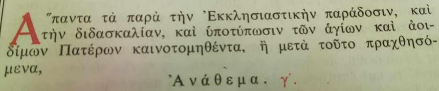
Σελίδα 09
Πρωτότυπο ↗«....ὡς ἤδη, λοιπὸν, σεσηπόσι καὶ τοῦ κοινοῦ σώματος τῆς Εκκλησίας ἀποτεμοῦσιν ἑαυτούς, ΑΝΑΘΕΜΑ (τρις)». Ἑπομένως, ὡς ἤδη σαπισμένους ἀπό τήν Αἵρεση καί μέ τήν δικήν τους βούληση ἀποκομμένους ἀπό τό Σῶμα τῆς Ἐκκλησίας, ΑΝΑΘΕΜΑ (τρις). «…τοῖς οὖν ἀνεπιστρόφως τῇ πλάνῃ ταύτῃ κατεχομένοις καὶ πρὸς πάντα λόγον θεῖον καὶ πνευματικὴν διδασκαλίαν τὰ ὦτα βεβυσμένοις, ὡς ἤδη λοιπὸν σεσηπόσι καὶ τοῦ κοινοῦ σώματος τῆς Ἐκκλησίας ἀποτεμοῦσιν ἑαυτούς, ἀνάθεμα (γ΄)». ΣΥΝΟΔΙΚΟΝ ΤΗΣ ΟΡΘΟΔΟΞΙΑΣ (§ 34 )
ΟΙ ΘΕΟΦΟΡΟΙ ΠΑΤΕΡΕΣ ΔΙΔΑΣΚΟΥΝ: ΠΡΟΣΟΧΗ-ΠΡΟΣΟΧΗ. ΟΣΟΙ ΕΚΚΛΗΣΙΑΖΟΝΤΑΙ ΣΤΟΥΣ ΣΗΜΕΡΙΝΟΥΣ ΟΙΚΟΥΜΕΝΙΣΤΕΣ ΝΕΟΗΜΕΡΟΛΟΓΙΤΕΣ, ΟΠΩΣ ΕΙΝΑΙ ΟΙ ΨΕΥΔΕΠΙΣΚΟΠΟΙ ΤΟΥΣ, ΚΑΤΑ ΤΟΝ ΙΕ΄ ΤΗΣ ΑΒ΄ ΣΥΝΟΔΟΥ, ΚΑΙ ΚΟΙΝΩΝΟΥΝ ΑΠΟ ΑΥΤΟΥΣ Μ Ο Λ Υ Ν Ο Ν Τ Α Ι . ΣΚΟΤΙΖΟΝΤΑΙ ΚΑΙ ΔΕΝ ΕΧΟΥΝ ΤΗΝ ΙΚΑΝΟΤΗΤΑ ΝΑ ΞΕΧΩΡΙΖΟΥΝ ΤΟ ΚΑΛΟ ΑΠΟ ΤΟ ΚΑΚΟ, ΤΟ ΟΡΘΟ ΑΠΟ ΤΟ ΒΕΒΗΛΟ, ΤΗΝ ΟΡΘΟΔΟΞΙΑ ΑΠΟ ΤΗΝ ΑΙΡΕΣΗ. ΦΥΓΕΤΕ ΑΠΟ ΑΥΤΟΥΣ, ΕΞΕΛΘΕΤΕ ΕΚ ΜΕΣΟΥ ΑΥΤΩΝ, ΑΠΟΤΕΙΧΙΣΘΗΤΕ ΚΑΙ ΑΚΑΘΑΡΤΟΥ ΜΗ ΑΠΤΕΣΘΕ.
Σελίδα 10
Πρωτότυπο ↗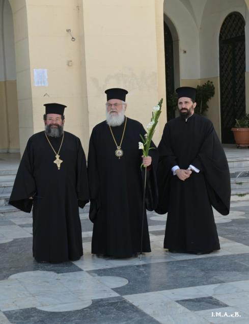
Τόν περίμενε τόν Ἀττικῆς, μετά ἀπό προσυνεννόηση προφανῶς, ὁ Ἀρχιοικουμενιστής Ἰλίου
κ. Ἀθηναγόρας. Δέν ἐπρόκειτο περί τυχαίας συναντήσεως. Τά αὐτά κακῶς ἐπανελήφθησαν καί
ἐφέτος (2026), ὅπως πρίν δύο ἔτη (2024).
Ένα πρώτο βήμα αγάπης….
Post published: 28 Απριλίου 2024. Του Σωτήρη Μ. Τζούμα
Σελίδα 11
Πρωτότυπο ↗Σήμερα, ανήμερα των Βαΐων ζήσαμε μια ιστορική στιγμή. Μετά από 100 ολόκληρα χρόνια διχόνοιας, μίσους, αντιθέσεων,διαιρέσεων και αλληλοσπαραγμών δύο φωτισμένοι εκπρόσωποι των δύο πλευρών έκαναν τη διαφορά και προέβησαν στο πρώτο βήμα αγάπης και αποδοχής, με αμοιβαίο σεβασμό ο ένας στα πιστεύω του άλλου.
Με αυτά που διαβάζετε ίσως κάποιοι να με θεωρείτε αθεράπευτα ρομαντικό! Ναι, μπορεί να είμαι.. αλλά άπιστος δεν είμαι! Και πολύ περισσότερο δεν είμαι φανατικός και μισαλλόδοξος.
Σήμερα στην πλατεία του Αγίου Βλασίου Αχαρνών, κατά την διάρκεια της λιτανείας των Βαΐων που κάθε χρόνο κάνει με μεγάλη επιτυχία ο δραστήριος και δημιουργικός Σεβ. Μητροπολίτης Αττικοβοιωτίας (ΓΟΧ) κ.Χρυσόστομος στους δρόμους της πόλεως των Αχαρνών, έγινε μία ιστορική συνάντηση. Ο Σεβ.Μητροπολίτης Ιλίου κ. Αθηναγόρας, ένας φωτισμένος και ανοιχτόμυαλος Ιεράρχης, περίμενε στον περιβάλλοντα χώρο του Αγίου Βλασίου με τον Αρχιερατικό Επίτροπο της Μητροπόλεως π. Ιωάννη και τον Αρχιδιάκονό του π. Νικόδημο. Καθώς και πολλοί πιστοί οι οποίοι περίμεναν να προσκυνήσουν την Παναγία Τριχερούσα που λιτανεύονταν τιμητικά στους δρόμους της πόλεως προς ευλογία των πιστών και της πόλεως.
Χρυσόστομος και Αθηναγόρας, αντάλλαξαν ασπασμό αγάπης και ο Χρυσόστομος έδωσε συμβολικά στον Αθηναγόρα την σύνθεση με τα βάγια που κρατούσε και ο Αθηναγόρας του πρόσφερε κάτι ανάλογο. Παράλληλα ο Σεβ. Ιλίου ασπάστηκε την εικόνα της Παναγίας της Τριχερούσας- πιστό αντίγραφο εκείνης που φυλάσσεται στην Ι. Μονή Χιλανδαρίου του Αγίου Όρους.
Η ιστορική αυτή εικόνα προσφέρθηκε από τον κ. Κώστα Λούλη, ( πρώην Διοικητή του Αγίου Όρους) ο οποίος ήταν παρών στην λιτανεία. Η εικόνα της Παναγίας θα είναι από σήμερα το βράδυ στον περικαλλή ναό- αρχιτεκτονικό κόσμημα της Παναγίας Σουμελά στον Ασπρόπυργο, που όμοιός του δεν υπάρχει πουθενά αλλού στην Ελλάδα.
Ο λαός δέχθηκε την ειρηνική αυτή συνάντηση με επευφημίες και ενθουσιασμό. Και είναι η δεύτερη φορά που γίνεται αυτό. Από πέρυσι ξεκίνησαν οι δύο Ιεράρχες αυτή την συνάντηση που στα μάτια των πιστών αποτελεί ένα μεγάλο βήμα για την ιστορική συμφιλίωση.
Αυτή την Εκκλησία θέλουμε… Να τηρεί τις παραδόσεις μας και να έχει αγάπη. Εξ άλλου οι αδελφοί του πατρίου ημερολογίου δεν είναι αιρετικοί! Δεν έχουμε δογματικές διαφορές μαζί τους. Είναι σάρκα από τη σάρκα μας. Η διαφορά του ημερολογίου ήταν αυτή που όπλισε με φανατισμό κάποτε τους πιστούς -και στις δύο πλευρές- και έγιναν πράγματα για τα οποία η Εκκλησία μας δεν θα έπρεπε να είναι υπερήφανη. Σε όλο αυτό πρέπει να μπει κάποτε μία ταφόπετρα. Και σήμερα μπήκε ένα μικρό λιθαράκι.
Στην εποχή που ζούμε βλέπουμε στην επίσημη Εκκλησία να υπάρχει ένας συνωστισμός και ανταγωνισμός στο ποιος θα φωτογραφηθεί με ετεροδόξους, παρακολουθούμε συμπροσευχές ορθοδόξων με παπικούς, βλέπουμε να φωτογραφίζονται και να συμμετέχουν ορθόδοξοι Ιεράρχες σε άλμπουμ με ιέρειες και επισκοπίνες άλλων δογμάτων.
Και τα αποδεχόμαστε όλα αυτά αδιαμαρτύρητα, αλλά δεν μας αναπαύουν.
Αυτό που συνέβη σήμερα στην πλατεία του Αγίου Βλασίου Αχαρνών είναι ένα παρήγορο μήνυμα. Ευτυχώς φαίνεται πως υπάρχει ακόμη ελπίδα. Καλό θα είναι τα εκατέρωθεν λάθη του παρελθόντος, να τα διορθώσουμε για το καλό όλων των Ελληνορθόδοξων.
Αξίζουν θερμά συγχαρητήρια στον Μητροπολίτη Χρυσόστομο για την σημαντική πρωτοβουλία του να πραγματοποιεί κάθε χρόνο αυτή τη λιτανεία τέτοια μέρα, σε ανάμνηση της λιτανείας που γίνεται στα Ιεροσόλυμα στο Ορθόδοξο Πατριαρχείο μας.
Σελίδα 12
Πρωτότυπο ↗Και η αθρόα συμμετοχή των πιστών αποδεικνύει, ότι έχει πετύχει και την περιμένει κάθε χρόνο ο πιστός λαός. Διπλά συγχαρητήρια αξίζουν στον Μητροπολίτη Αθηναγόρα, ο οποίος ξεπερνώντας αγκυλώσεις και φανατισμούς του παρελθόντος παρέστη με αυτό τον διακριτικό τρόπο σε μία εκκλησιαστική λιτανεία η οποία γίνεται για να τιμήσουμε τον κοινό αρχηγό της πίστεως μας, τον Κύριο ημων Ιησού Χριστό και έγινε η αιτία να γραφεί μια πρώτη σελίδα αγάπης, μετά από 100 χρόνια διχόνοιας. Εύγε! Ναι υπάρχει ελπίς.
Η σύνθεση από βάγια και λευκούς κρίνους που προσέφερε ο Αθηναγόρας στον Χρυσόστομο ως αντίδωρο της περίτεχνης σύνθεσης που προσέφερε ο Χρυσόστομος στον
Αθηναγόρα και φαίνεται στις παρακάτω φωτό
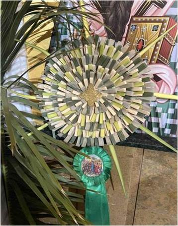
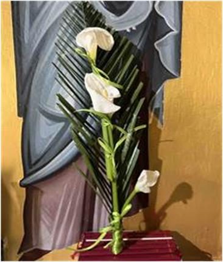
Σελίδα 13
Πρωτότυπο ↗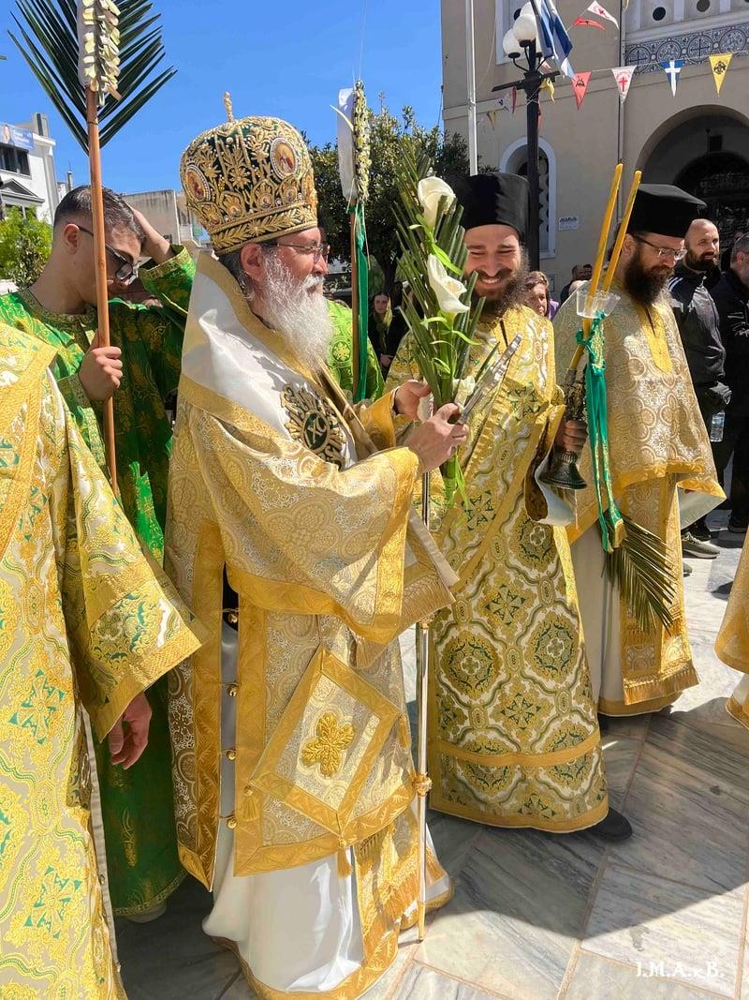
Σελίδα 14
Πρωτότυπο ↗ΑΛΛΑΞΕ ΚΑΤΙ;
Με έκπληξη πληροφορηθήκαμε απο την επίσημη ιστοσελίδα της "Ιεράς Μητροπόλεως Γ.Ο.Χ. Αττικής και Βοιωτίας" (του κ. Χρυσοστόμου Μανιώτη, της Φλωρινικής Συνόδου του κ. Καλλινίκου), ότι κατά την λιτανεία της Κυριακής των Βαίων στο Μενίδι, (επαινετή σαν ιδέα και αξιόλογη σαν εκτέλεση), ο επιχώριος Νεοημερολογίτης Μητροπολίτης Ιλίου κ. Αθηναγόρας, περίμενε τον κ. Χρυσόστομο μπροστά στον Μητροπολιτικόν Ναό του αγίου Βλασίου και αντάλλαξαν ευχές για το Πάσχα, προσφέροντας ο ένας στον άλλο...Βαγιόκλαρα!
Βεβαίως δεν επρόκειτο για συμπροσευχή, αλλά ο τρόπος που ειναι γραμμένη η είδηση, περνάει στον απλό πιστό το μήνυμα, ότι συναντήθηκαν δύο Αρχιερείς του ίδιου χώρου, ο Μητροπολίτης (δείνα) με τον Μητροπολίτη (τάδε).
Έπειτα οι πανηγυρισμοί γνωστού Πρακτορείου Εκκλησιαστικών Ειδήσεων για το "πρώτο βήμα που έγινε", είναι κατά το ελάχιστο ύποπτοι.
Διερωτώμαστε, άλλαξε κάτι στις σχέσεις Νεοημερολογιτών και Παλαιοημερολογιτών; Έπαψαν οι Νεοημερολογίτες να είναι οι διώκτες μας;
Έπαψαν να μας θεωρούν σχισματικούς με άκυρα μυστήρια; Ο κ. Αθηναγόρας εν προκειμένω αναχειροτόνησε φυγάδα Παλαιοημερολο-γίτη Ιερομόναχο.
Οι σημερινοί Δεσποτάδες τους έπαψαν να είναι οι επίγονοι των δολοφόνων της Αικατερίνης Ρούτη;
Οι διωγμοί, οι αποσχηματισμοί, οι κατεδαφίσεις ναών, οι βιοπραγίες με την συνδρομή της κρατικής Χωροφυλακής παραγράφονται; Ο Γέροντας μας Μακαριστός Κάλλιστος μάτωσε στα Βίλλια και τα αδέρφια του Νικόδημος και Στέφανος θάφτηκαν ζωντανοί στο Σοφικό (για να μιλήσουμε για τους δικούς μας Πατέρες).
Ακόμη, ο "φίλος" των Παλαιοημερολογιτών κ. Αθηναγόρας, έχει στη Μητρόπολή του μόνο στο Μενίδι 4 ουνίτικες ενορίες με το παλαιό ημερολόγιο, για να "μαντρώσει" τους απλούς και απληροφόρητους αδελφούς Έλληνες Ποντίους.
Στο επίπεδο της Ομολογίας άλλαξε κάτι; Μετά το Κολυμπάρι, το Ουκρανικό, τις καθημερινές συμπροσευχές με αιρετικούς και επικείμενο το κοινό Πάσχα μαζί τους, άλλαξε κάτι;
Τότε, προς τι οι αγκαλιές και τα ευχολόγια, σε δημόσια εκκλησιαστική τελετή;
Μήπως για να προετοιμαστούν τα "πρόβατα" γι αυτό που θα αλλάξει, για την "αλλαγή" που έρχεται;
Θα επανέλθουμε.
Τό ἀνωτέρω κείμενον εἶναι δημόσιον, ἐπίσης, κείμενον ἀπό τό ἱστολόγιον (Μνήμη
Ἀρχιερέως Καλλίστου)
-Μήπως, λοιπόν, ἐπέστρεψαν στό Πατροπαράδοτον Ἑορτολόγιον οἱ Νεοημερολογίτες καί τούς ἐναγκαλίζεται καί τούς προσφέρει δῶρα, τά κατ’ ἐξοχήν σύμβολα τῆς ἑορτῆς τῶν Βαΐων, ὁ Ἀττικῆς κ. Μανιώτης; Βοοῦν τά αἵματα τῶν προπατόρων, οἱ διωγμοί καί οἱ ἀποσχηματσμοί τῶν ἁγνῶν λευιτῶν, τήν μνήμη τῶν ὁποίων προσβάλλει βάναυσα ὁ κ. Μανιώτης. -μήπως οἱ Νεοημερολογίτες καταδίκασαν τόν Οἰκουμενισμόν; -μήπως ἀποκήρυξαν τόν Αἱρεσιάρχην τοῦ Φαναρίου καί διέκοψαν τήν κοινωνίαν μαζί του, κατά τούς Ἱερούς Κανόνες;
Σελίδα 15
Πρωτότυπο ↗-τώρα, μάλιστα πού μνημονεύουν ἐκφώνως ὡς κανονικόν ἐπίσκοπον τόν Πάπαν, στήν Θεία Λειτουργίαν, μέσα στό Πατριαρχεῖον, ἀφοῦ παίρνουν καιρόν οἱ διάκονοι τοῦ Οἰκουμενιστῆ «πατριάρχη» ἀπό τόν ἴδιον τόν Πάπαν καί βρίσκονται, ξεκάθαρα πλέον, σέ πλήρη ἕνωση μαζί του, (πού ὑπεγράφη τό 1965), ὅταν ἔγινε ἡ ἄρση τῆς ἀκοινωνησίας πρός τούς Λατίνους, ἀπό τόν Μασῶνον Ἀθηναγόραν ΣΥΝΟΔΙΚΑ. -Μήπως οἱ Νεοημερολογίτες ἀπεκήρυξαν τήν ἕνωση μέ τούς Μονοφυσίτες στό Σαμπεζύ καί στήν Ἀντιόχειαν τό 1991-1993; Τό πατριαρχεῖον Ἀντιοχείας βρίσκεται σέ πλήρη ἕνωση μέ τούς Μονοφυσίτες!
-μήπως ἀπεκήρυξαν τήν ἕνωσή τους οἱ Οἰκουμενιστές μέ τούς Οὐνίτες τό 1993
Στόν εἰκονιζόμενον, ἀνωτέρω, κ. Ἰουστῖνον «Καλαμαριᾶς», φωτογραφιζόμενον μετά
τοῦ ἀποστάτου τῆς Πίστεως, μεγάλου Οἰκουμενιστοῦ κ. Βαρθολομαίου, ἔδωσε τά
Ἅγια Λείψανα ὁ Ἀττικῆς κ. Χρυσόστομος Μανιώτης
….……………………………………..……………………………………………………………………..
στό Μπάλαμαντ τοῦ Λιβάνου;
-μήπως σταμάτησαν οἱ συμπροσευχές μέ τούς Προτεστάντες καί τούς
Ἑτεροδόξους, ἀλλά καί τούς ἑτεροθρήσκους;
Ὅταν, λοιπόν, δέχεται καί τιμᾶ τόν Οἰκουμενιστήν «Ἰλίου» κ. Ἀθηναγόραν, ὅπως καί τόν κ. Ἰουστῖνον «Καλαμαριάς» ὁ Ἀττικῆς, δέχεται καί τόν Πάπαν, μέ τόν ὁποῖον εἶναι ἑνωμένοι οἱ Νεοημερολογίτες, μετά τό 1965 καί τό 1993 (Μπάλαμαντ), δέχεται καί τούς Μονοφυσίτες, μέ τούς ὁποίους εἶναι ἑνωμένοι οἱ Νεοημερολογίτες, μετά τό Σαμπεζύ καί τήν ἕνωση τῆς Ἀντιόχειας (1991 καί 1993). Δέχεται καί τό Κολυμπάρι πού ἔχει συνυπογράψει ὁ «Ἰλίου» καί ὁ «Καλαμαριᾶς» (2016)…
Σελίδα 16
Πρωτότυπο ↗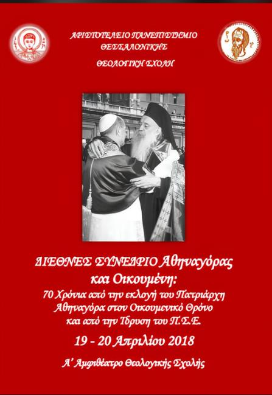
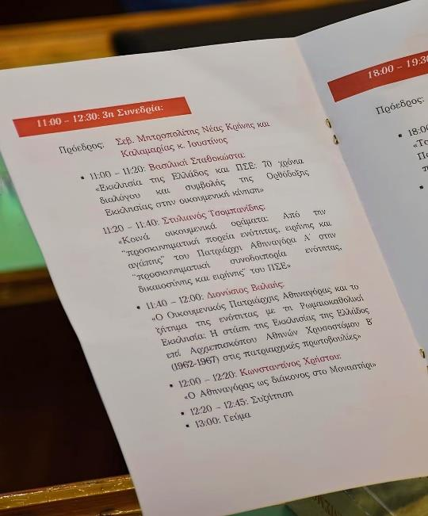
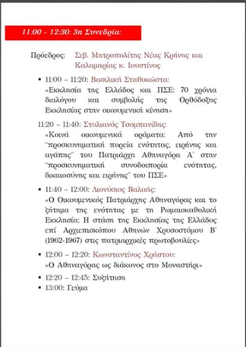
Οἱ αἱρετικές ἐνέργειες τοῦ Ἀττικῆς κ. Χρυσοστόμου Μανιώτη εἶναι δημόσιες, καί μέ τήν θεσμική του ἰδιότητα ὡς ἐπισκόπου τῆς Ἐκκλησίας τῶν Γ.Ο.Χ. Γιαυτό σκανδαλίζουν καί ἐξοργίζουν τούς Ὀρθοδόξους, ἀφοῦ εἶναι ἐπαναλαμβανόμενες, προβαλλόμενες καί παρουσιαζόμενες μάλιστα ἐπιδεικτικά πρό διετίας ἀπό τήν ἴδια τήν ἱστοσελίδα του καί νῦν, τό 2026, ἀπό γνωστό πρακτορεῖον εἰδήσεων, καί ἀποδεικνύουν γιά πολλοστή φοράν, ὅτι παραμένει ἀμετανόητος καί ἔχων τά ὤτα βεβυσμένα στήν διδασκαλίαν τῶν Ἁγίων Πατέρων (Συνοδικόν τῆς Ζ΄ Οἰκουμενικῆς). -Συναγελάσθη καί συναυλίσθη μετά τῶν αἱρετικῶν Οἰκουμενιστῶν “ἐπισκόπων” στήν Θεσσαλονίκην ὁ Ἀττικῆς κ. Μανιώτης, μέ προετοιμασμένην τήν συμμετοχήν του, ἀφοῦ τόν προσφώνησε ὁ κ. Φιλόθεος «Θεσσαλονίκης», καί τόν κάλεσε νά συγκαθήσει
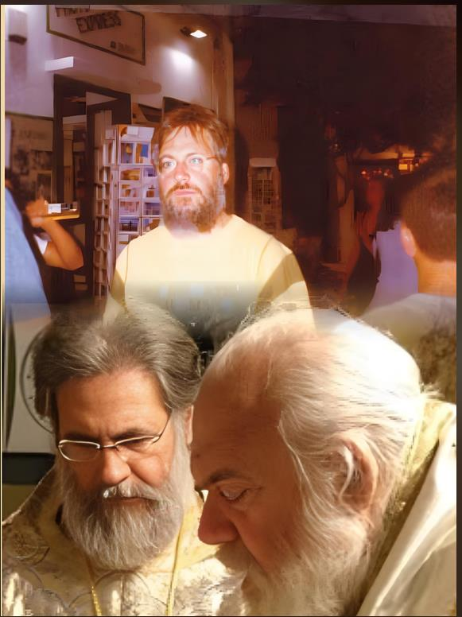
Στήν ἀνωτέρω φωτογραφίαν φαίνεται στήν … Μύκονον (!!!) μέ πολιτικά μάλιστα ροῦχα (!!!) ὁ φίλος τοῦ Ἀττικῆς κ. Ἀθηναγόρας
Σελίδα 17
Πρωτότυπο ↗…………………………………………………………………………………………. στήν πρώτην σειράν, μετά τῶν Νεοημερολογιτῶν ψευδεπισκόπων, κατά τόν ΙΕ΄ τῆς ΑΒ΄.
-Μέ τίς συνεχόμενες αἱρετικές κινήσεις του καί τήν ἀμετανόητη στάση, ἀλλά καί τίς συνεχεῖς ὑποτροπές του, ἀλλοιώνει καί ἐξασθενίζει τήν Ὀρθόδοξη Ὁμολογιακήν ἔνσταση καί μαρτυρίαν. -Ἐξέθεσε καί ἐκθέτει συνεχῶς τήν Ὀρθόδοξη Ἐκκλησίαν, γιατί οἱ ἐνέργειές του ἦταν καί εἶναι ἀντικανονικές καί ἀντορθόδοξες, μέ τήν ἔννοιαν, ὅτι προσβάλλουν δογματικούς Κανόνες τῆς Ἐκκλησίας, (ὅπως τό τονίζουν οἱ ἀδελφοί μας Ρουμάνοι!) Βλ. τούς Κανόνες 37ον Λαοδικείας, 6ον Λαοδικείας, ΜΕ΄ καί Ο΄ τῶν Ἁγίων Ἀποστόλων, πού τόν κατατάσσουν στούς Οἰκουμενιστές καί στούς Νεοημερολογίτες, ἀλλά πρωτίστως οἱ κινήσεις του καί ἡ στάση του συνιστοῦν μέγα θέμα προδοσίας τῆς Ὀρθοδόξου Πίστεως καί ἀμφισβήτησης τῆς Ὀρθόδοξης Ὁμολογίας. Οἱ παραβάσεις του εἶναι παραβάσεις περί τήν Πίστη καί ὄχι κάποιες ἁπλές κανονικές παραβάσεις, πού θά μποροῦσαν ἔν τινι μέτρῳ, ἴσως, νά δικαιολογηθοῦν. -Ἀδιαφορεῖ ὁ κ. Χρυσόστομος γιά τό στίγμα πού δίνει μέ τήν στάση του καί διδάσκει ἀντορθόδοξα, ἀπενοχοποιῶντας τήν αἵρεση τοῦ Οἰκουμενισμοῦ καί ἀκυρώνοντας τό κήρυγμα τῆς ἔνστασης καί τῆς Ὀρθόδοξης Ὁμολογίας.
-Οἱ Ἱεροί Κανόνες καί οἱ Ἅγιοι Πατέρες ἀπαγορεύουν καί τό ἁπλῶς συνεσθίειν μετά τῶν αἱρετικῶν καί ἀφορίζουν καί καθαιροῦν τούς ΣΥΝΑΓΕΛΑΖΟΜΕΝΟΥΣ, ΣΥΝΑΥΛΙΖΟΜΕΝΟΥΣ ΣΥΜΦΥΡΟΜΕΝΟΥΣ καί ΣΥΓΚΥΛΙΟΜΕΝΟΥΣ μετά τῶν αἱρετικῶν, καί ταυτοχρόνως προσφερόντων καί δεχομένων ἑορταστικά δῶρα, τά διαβασμένα ἀμφοτέρωθεν, κατ’ ἐξοχήν σύμβολα τῆς ἑορτῆς τά βάγια -(καί δή ἐπισήμως, ἐν πλήρει ἱερατικῇ στολῇ τοῦ ἰδίου καί τῶν ἱερέων τοῦ Ἀττικῆς).
Κατά συνέπειαν, οἱ ποινές τοῦ «συνεύχεσθαι» μετά αἱρετικῶν ἰσχύουν ἔτι περισσότερον καί γιά τόν συναγελασμόν, τόν συναυλισμόν, τόν συμφυρμόν, καί τόν ἀπαράδεκτον συγκυλισμόν, (ἀλλά καί γιά τήν συμπροσευχήν, πού ἔγινεν στήν Μονήν του νύχτα, -παράκλησις, κατά τόν Ἰουστῖνον «Καλαμαριᾶς», καί τήν δωρεάν τμήματος τοῦ ἁγίου Λειψάνου τῆς Κάρας τοῦ Ἁγίου Ἀργυρίου, στόν πανερετικόν Οἰκουμενιστήν!), ἀλλά πολύ περισσότερον γιά τό ἀνταλλάσσειν δῶρα καί συνεορτάζειν τελετουργικῶς μετ’ αὐτῶν (ΛΖ΄ τῆς Λαοδικείας).
Σελίδα 18
Πρωτότυπο ↗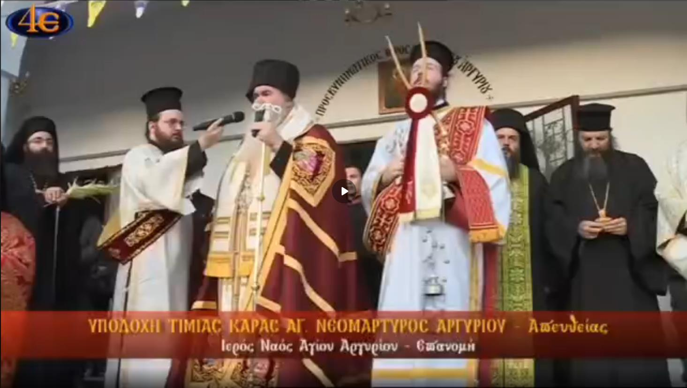
Στό συγκεκριμένον ἀνωτέρω βίντεο, πού περιῆλθε στά χέρια μας, δηλώνει ὁ κ. Ἰουστῖνος «Καλαμαριᾶς», ὅτι κάναν κοινή παράκληση μετά τοῦ Ἀττικῆς κ. Χρυσοστόμου Μανιώτη,
(σέ μοναστήρι του στήν Ἀττικήν, καί μάλιστα νύχτα!), ὅπου καί τοῦ ἐδόθη
ἀντικανονικῶς ἀπότμημα τῆς Κάρας τοῦ Ἁγίου Ἀργυρίου… blob:https://www.facebook.com/8f89e77d-f402-4081-9f87-c673ab1100cb
Σελίδα 19
Πρωτότυπο ↗Τό ἴδιο, ἑπομένως, κατά τά ἐκτεθέντα, ἀκριβῶς, συμβαίνει καί τίς ἴδιες, ἀκριβῶς, ποινές ἐπιβάλλει ἡ Ἐκκλησία, ὅπως στίς συμπροσευχές μετά
αἱρετικῶν καί στούς τά τοιαῦτα ποιοῦντας:
ΜΕ ΤΟΝ
Ἱερόν Κανόνα ΛΖ΄
τῆς ἐν Λαοδικείᾳ: «ὅτι οὐ δεῖ παρά τῶν Ἰουδαίων ἤ αἱρετικῶν τά πεμπόμενα ἑορταστικά λαμβάνειν, μηδέ συνεορτάζειν αὐτοῖς».
Σελίδα 20
Πρωτότυπο ↗ΚΑΙ ΤΟΝ:
Ἱερόν Κανόνα Ο΄ Ἀποστολικόν:
«Εἰ τις Ἐπίσκοπος, ἤ Πρεσβύτερος, ἤ Διάκονος, ἤ ὅλως τοῦ καταλόγου τῶν Κληρικῶν νηστεύοι μετά Ἰουδαίων, ἤ ἑορτάζοι μετ’ αὐτῶν, ἤ δέχοιτο παρ’ αὐτῶν τά τῆς ἑορτῆς ξένια, οἷον ἄζυμα, ἤ τί τοιοῦτο -(ΔΙΑΒΑΣΜΕΝΑ ΥΠΟ ΤΟΥ ΑΙΡΕΤΙΚΟΥ ΚΑΤΑ ΤΟΝ ΙΕ΄ ΤΗΣ ΑΒ΄ ΟΙΚΟΥΜΕΝΙΣΤΟΥ ΙΛΙΟΥ ΒΑΓΙΑ)- καθαιρείσθω, εἰ δέ Λαϊκός εἴη ἀφοριζέσθω».
Καθαιρεῖται καί ἀφορίζεται ὁ ταῦτα λαμβάνων καί πόσον μᾶλλον, ὅταν ὁ
ἴδιος προσφέρει δῶρα σέ αἱρετικούς «ἐπισκόπους»
ἐν πλήρει ἱερατικῇ στολῇ δημόσια καί θεσμικά καί μάλιστα γιά τρίτη φορά μέσα στά τελευταῖα τέσσερα χρόνια), γενόμενος αἱρετικός καί συγχέοντας τόν Κανόνα τῆς Ἐκκλησίας2.
2. Ἀναφέρουμε ἐπίσης ὡς σχετικούς καί τούς Ι΄ καὶ ΜΕ ΄ ἀποστολικούς, Α΄, Β΄, Δ΄, καὶ ΣΤ΄ Ἀντιοχείας, ΛΖ΄, ΛΗ΄ καὶ ΛΘ΄ Λαοδικείας, καί Θ΄ Καρθαγένης. Ἀπὸ τούς ἀνωτέρω παραθέτουμε ἰδιαίτερα τὸν Β΄ Ἀντιοχείας, ὁ ὁποῖος μὲ μεγαλύτερη σαφήνεια ἐπιτάσσει: «Μὴ ἐξεῖναι δὲ κοινωνεῖν τοῖς ἀκοινωνήτοις... Εἰ δὲ φανείη τις τῶν ἐπισκόπων, ἡ πρεσβυτέρων, ἤ διακόνων, ἤ τις τοῦ Κανόνος τοῖς ἀκοινωνήτοις κοινωνῶν -(πλήρης πνευματική - πραγματική κοινωνία μετά τῶν αἱρετικῶν εἶναι ἡ κατά συρροήν καί κατ’ ἐξακολούθησιν αἱρετική συμπεριφορά τοῦ Ἀττικῆς, κατά τά ἀναλυτικῶς πλειστάκις ἐκτεθέντα, ὅτι δηλ. συμφύρεται, συναγελάζεται καί συναυλίζεται μετά τῶν αἱρετικῶν)-,
καὶ τοῦτον ἀκοινώνητον εἶναι, ὡς ἂν συγχέοντα τὸν
Κανόνα τῆς Ἐκκλησίας»
(Ράλλη-Ποτλῆ, Σύνταγμα, τόμ. Γ΄, σελ. 125-126). Ἡ ἔννοια τῆς κοινωνίας, κατά τά ἀνωτέρω, δέν εἶναι μόνον λειτουργική, ἀλλά καί εἶναι καί προσευχητική, πνευματική, ἤ διά τῆς ἐπισήμου, θεσμικῆς καί δημόσιας προσφορᾶς καί ἀνταλλαγῆς μετά τῶν αἱρετικῶν δώρων γενομένη διά τοῦ συναυλισμοῦ, συναγελασμοῦ καί τοῦ συμφυρμοῦ του μετά τῶν αἱρετικῶν.
Σελίδα 21
Πρωτότυπο ↗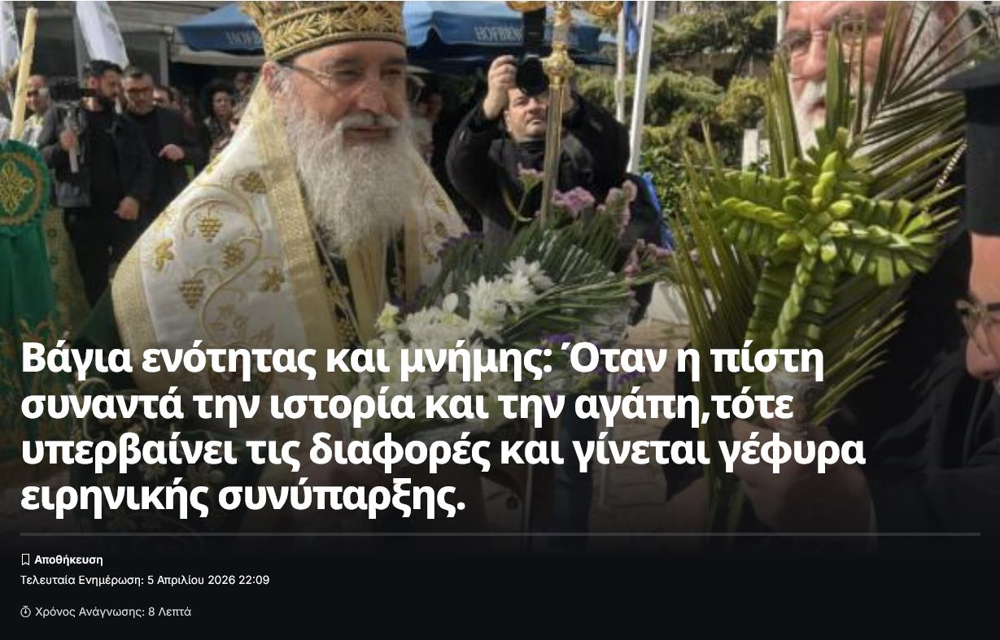
Σελίδα 22
Πρωτότυπο ↗Διαβάζουμε καί στό ἱστολόγιον: Ἐλευθέριος Πετρίδης «Η αλεπού ενίοτε κάνει την ψόφια για να προσελκύσει το αδαές θύμα της. Έτσι έκανε και η πονηρή αλώπηξ που λυμαίνεται την πολύπαθη εκκλησία των Γ.Ο.Χ. Υποκρίθηκε μετάνοια και συγγνώμη για τα προ διετίας κατορθώματα, για να διασύρει το ανίδεο της πονηρίας της θύμα και σήμερα επαναλαμβάνει τα ίδια, φέρνοντας και ενισχύσεις εκ του βορρά την ετέρα εξαδέλφη αλώπεκα! Και όλα αυτά με την αγαστή δημοσιογραφική υποστήριξη πρώην επικοινωνιακών κολαούζων και πρακτορίσκων του Αντιχριστόδουλου Παρασκευαΐδη, που από τότε μαγείρευε το σενάριο άλωσης των Γ.Ο.Χ. αλλά δεν είχε έρθει ακόμη τότε το πλήρωμα του χρόνου....» Ελευθέριος Δημήτριος Πετρίδηςhttps://www.facebook.com/profile.php?id=100034622142026#:~:text=%CE%97%2 0%CE%B1%CE%BB%CE%B5%CF%80%CE%BF%CF%8D,%CE%9B%CE%B9%CE%B3%CF%8C%CF %84%CE%B5%CF%81%CE%B1
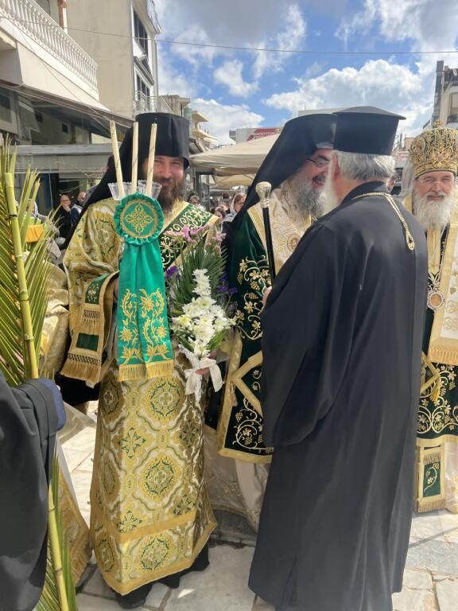
Σελίδα 23
Πρωτότυπο ↗Σελίδα 24
Πρωτότυπο ↗«Πρὸ πάντων φυλάσσεσθε, ὦ ἐπίσκοποι, τὰς δεινὰς καὶ χαλεπὰς καὶ ἀθεμίτους αἱρέσεις, φεύγοντες αὐτὰς ὥσπερ πῦρ φλέγον τοὺς αὐτῷ πλησιάζοντας.»
«Διόπερ χρὴ τὸν πιστὸν φεύγειν τὰς συνόδους τῶν ἀσεβῶν Ἑλλήνων καὶ Ἰουδαίων καὶ τῶν λοιπῶν αἱρετικῶν, ἵνα μὴ τῷ συσχολάζειν αὐτοῖς, παγίδας λάβωμεν ταῖς ἑαυτῶν ψυχαῖς, ὅπως μὴ συναναστρεφόμενοι ταῖς ἑορταῖς αὐτῶν, αἵτινες ἐπὶ τιμῇ τῶν δαιμόνων ἐπιτελοῦνται, κοινωνήσωμεν αὐτοῖς καὶ τῆς ἀσεβείας.»
Ἀποστολικαὶ Διαταγαί, Βιβλίον ΣΤ΄ καὶ Β΄, ἀντιστοίχως.
Κατά τήν ἐπιστολήν ΙΑ΄ Νικηφόρου Κωνσταντινουπόλεως “οἱ κληρικοί, κοινω-
Σελίδα 25
Πρωτότυπο ↗θέντες, λόγῳ κοινωνίας μεθ’ αἱρετικῶν καί μετανοήσαντες, οὐχ ἱερουρουργοῦσιν…”. Γιαὐτό γράφουμε καί ἐπιμένουμε καί τόν καταγγέλουμε
ἐνώπιον Σας, Μακαριώτατε, ὅτι καί κατά τόν Ἅγιον Νικηφόρον Κωνσταντινουπόλεως καί κατά τήν Πίστη τῆς Ἐκκλησίας μας ὁ Ἀττικῆς συγχέει τόν Κανόνα τῆς Ἐκκλησίας (βλ. σχετικά τό μνημειῶδες Ἑνωσιακόν Κείμενον)3
Ἀπαγορεύεται ἀκόμη καί τό συντρώγειν -(πάντοτε τῶν Κανονικῶν ἐννοουμένων)- μετά αἱρετικῶν, ἐκτός ἐάν ἀπόσχουν τῆς αἱρετικῆς κοινωνίας.
Ἀκόμη πιό αὐστηρός εἶναι ὁ Κανόνας, ἀφοῦ ἀπαγορεύει καί τό συντρώγειν μετά κληρικῶν συμφαγόντων μεθ’ αἱρετικῶν, ἐκτός ἐάν ἐπιστρέψουν “μετανοίᾳ ἀξιολόγῳ” (Θ΄ καί Ι΄ Νικηφόρου).4
«… κἄν ὁ κανονικός συνεσθίῃ, κἄν συναγελάζηται, κἄν συνερ-
3 Οἱ Νεοημερολογίτες καί Οἰκουμενιστές, κατά τά διαλαμβανόμενα στό ἀνωτέρω Ἑνωσιακό Κείμενο, ἔχουν ἤδη ἐκπέσει, ὑφίσταται ἡ ἔκπτωση τῶν αἱρετικῶν, κατά τήν ἀκριβῆ περιγραφή τοῦ Κειμένου, ὁπότε μία μελλοντική Σύνοδος δέν θά κάνει τίποτε ἄλλο ἀπό τό νά διαπιστώσει τήν ἤδη ὑφισταμένη ἔκπτωση τῶν αἱρετικῶν, κατά τό Μνημειῶδς Κείμενον, καί σύμφωνα μέ τήν σύνολη διδασκαλία τῶν Θεοφόρων Πατέρων! Ἀκριβῶς ἔτσι καί ὁ Ἀττικῆς κύριος Χρυσόστομος Μανιώτης, μέ τόν συναγελασμόν του, τόν συναυλισμόν, τόν συμφυρμόν καί τόν συγκυλισμόν του μετά τῶν αἱρετικῶν Οἰκουμενιστῶν Νεοημερολογιτῶν στήν Ἀθῆνα μετά τοῦ Οἰκουμενιστοῦ Ἰλίου, στήν Θεσσαλονίκην στό συνέδριον τῆς ματαιότητος καί μετά τοῦ Καλαμαριᾶς στήν μονήν του, μέ τήν ἀποδοχήν ὑπό τοῦ Οἰκουμενιστοῦ Νεοημερολογίτου Ἰλίου κ. Ἀθηναγόρα, τῶν πεμπομένων ἑορταστικῶν δώρων, καί μάλιστα μέ τήν προσφοράν ἐκ μέρους του δαφνοστεφάνου πρό διετίας (2024) καί περίτεχνου Σταυροῦ ἐφέτος (2026) στόν Οἰκουμενιστήν Νεοημερολογίτην Ἰλίου,
ἀποδεικνύεται ἤδη, ὡς ἐκπεσών τῆς Ὀρθοδόξου Πίστεως, κατά τό Ἑνωσιακόν Κείμενον! Ὑφίσταται ἤδη ἡ ἔκπτωσή του ὡς ἱερέως καί εἶναι ἀκοινώνητος!
4 Ἀρχικὰ ὑπάρχει ἡ θέση, ὅτι ὅλα αὐτὰ ποὺ γίνονται μέσα σὲ ναοὺς μὲ κάθε ἐπισημότητα ἢ σὲ διάφορα συνέδρια, δὲν εἶναι οὐσιαστικὰ συμπροσευχές — (ἐκ μέρους τῶν Νεοημερολογιτῶν ὑποστηρίζεται ἡ πεπλανημένη θέση αὐτή…). Αὐτὸ ἀπὸ μόνο του ὑποδηλώνει καθαρά, πὼς ὁ ὑποστηρίζων τέτοιες ἀβάσιμες θέσεις, γνωρίζει τὸ παράνομον τῶν συμπροσευχῶν καὶ γι᾽ αὐτὸ καὶ προσπαθεῖ νὰ ἀναιρέσει τὴν ὕπαρξή τους.
Κατόπιν, ὅμως, ἐμφανίζεται καὶ ἄλλη θέση ὑπερασπιστοῦ τινος τῶν αἱρετικῶν κινήσεων τοῦ Ἀττικῆς κ. Χρυσοστόμου Μανιώτη: Παραδέχεται ξεκάθαρα, πὼς ὁ ἐπίσκοπος συναγελάζεται καὶ ἀνταλλάσσει δῶρα μὲ αἱρετικούς, ὅμως προσπαθεῖ νὰ τὸν δικαιώσει λέγοντας, πὼς καὶ παλιότερα καὶ ἀλλοῦ συνέβαιναν αὐτά. Τὸ κακὸν καὶ παράνομον, ὡστόσον, οὐχ ἕλκεται πρὸς ὑπόδειγμα.
Σελίδα 26
Πρωτότυπο ↗γάζηται καί δι' ἀγαθόν εἰσέτι σκοπόν μετ' αὐτῶν,-(ὅπως αἱρε-τικῶς νομίζει, ὅτι καλά κάνει ὁ Ἀττικῆς κ. Χρυσόστομος Μανιώτης μέ τούς αἱρετικούς Νεοημερολογίτες - Οἰκουμενιστές σήμερον)- ἀλλοτριοῖ τό τοιοῦτον (ἡ τοιαύτη συμπεριφορά!) ἐπίσκοπον τῆς πίστεως καί τῆς ἐκκλησίας! Διά τοῦτο: «Στέλλεσθαι ὑμᾶς ἀπὸ παντὸς ἀδελφοῦ ἀτάκτως περιπατοῦντος, καὶ μὴ κατὰ τὴν παράδοσιν, ἣν παρέλαβον παρ' ἡμῶν» διδάσκει ὁ Μέγας Παῦλος. “Εἰ δὲ οἰκονομίας χάριν συναναιρεῖται τῇ κακοπιστίᾳ ἡ σωτήριος πίστις, χωρισμὸς Θεοῦ παντελής, ἀλλ᾿ οὐχ ἕνωσις Θεοῦ ἐστι τὸ τοιοῦτον εἶδος τῆς λεγομένης οἰκονομίας… Κατά τήν διδασκαλίαν τοῦ ΑΓΙΟΥ ΙΩΑΝΝΟΥ ΤΟΥ ΧΡΥΣΟΣΤΟΜΟΥ. «Πολλάκις ὑμᾶς ὑπέμνησα περὶ τῶν ἀθέων αἱρετικῶν καὶ τὰ νῦν παρακαλῶ τοῦ μὴ συγκαταβῆναι αὐτοὺς ἐν τίνι πράγματι, μὴ ἐν βρώμασι ἢ πόμμασιν, ἢ φιλία, ἢ σχέσει, ἢ ἀγάπῃ, ἢ εἰρήνῃ, ὁ γὰρ τούτοις ἀπατώμενος, καὶ συγκαταβαίνων αὐτοῖς, ἀλλότριον ἑαυτὸν καθίστησι τῆς Ἐκκλησίας».
Ὁ Ἰνδονησίας κ. Δανιήλ Μπιαντόρο κηρύσσσει μέσα σέ προτεσταντικήν Ἐκκλησίαν μέ τά ἄμφιά του ἐνδεδευμένος. Εἶναι πάρα πολλές οἱ Οἰκουμενιστικές του ἐνέργειες καί οἱ συμπροσευχές του μετά τῶν ἑτεροδόξων, τόσον αὐτοῦ τοῦ ἰδίου ὅσον καί πολλῶν τῶν ἱερέων του… Βλ. τό ἐπισυναπτόμενο κείμενον-καταγγελίαν τοῦ Μοναχοῦ Φωτίου. Κατά τούς Κανόνες εἶναι καί αὐτός καθηρημένος καί ὑπό ἀνάθεμα.
Πνευματικοί ἀδελφοί συνεχῶς διακόπτουν τήν κοινωνίαν μαζί μας στήν Ἑλλάδα καί στό ἐξωτερικόν, ἀφοῦ παρακολουθοῦν τά δημοσίως προβληθέντα ὑπό τοῦ Ἀττικῆς κ. Χρυσοστόμου Μανιώτη στήν ἱστοσελίδα του -(πρό διετίας)- καί νῦν δημοσιευόμενα ἀπό γνωστό ἐκκλησιαστικό πρακτορεῖον εἰδήσεων, καί ἀπό τόν πρώην σύμβουλον τοῦ
Σελίδα 27
Πρωτότυπο ↗Λατινόφρονος Χριστοδούλου, ἀλλά καί σέ πολλά ἄλλα μέσα κοινωνικῆς δικτύωσης… Ἔτσι γίναμε ἀποδέκτες πλήθους κατηγοριῶν καί εἰρωνείας, καί ἀπό ὑψηλά ἱσταμένα στήν κοινωνίαν μας πρόσωπα, τά ὁποῖα κατηχούσαμε, γιά νά ἔλθουν στήν Ἐκκλησίαν μας, ὅτι κοινωνοῦμε μετά αἱρετικῶς στήν πράξη συμπεριφερομένων καί μετά τῶν αἱρετικῶν συναυλιζομένων5, συναγελαζομένων, συμφυρομένων καί συγκυλιομένων, ὅπως κάνει ὁ Ἀττικῆς !!!
Συναφεῖς καί κρίσιμοι γιά τά ἀποδοκιμαστέα ὀρθοδόξως ἀνωτέρω παρουσιασθέντα γεγονότα
εἶναι καὶ οἱ Κανόνες τῆς Λαοδικείας:
ΛΒ΄ (32ος): «Ὅτι οὐ δεῖ αἱρετικῶν εὐλογίας λαμβάνειν…». ΣΤ΄ (6ος): ἀπαγορεύει νὰ εἰσέρχονται στὸν οἶκο τοῦ Θεοῦ αἱρετικοὶ «ἐπιμένοντες τῇ αἱρέσει» (παπα-Βαγγέλης Παπανικολάου, πού μίλησε μάλιστα μέσα στόν Ναόν τῆς Παναγίας Σουμελᾶ).
Κείμενον πού λάβαμε ἀπό τόν τότε Ρουμάνον Μητροπολίτην Δημοσθένην
ἀναφέρει τά ἑξῆς: "…
«… Όσον αφορά την κοινωνία με την Εκκλησία της Ελλάδος, ευχηθήκαμε να μην σας
παρουσιάσουμε μια αμφιλεγόμενη και ανεπίλυτη κατάσταση. Σκοπεύαμε πρώτα να
ρίξουμε φως σε αυτήν την υπόθεση και στη συνέχεια να σας παρουσιάσουμε την κατάσταση. Ο μόνος μας στόχος ήταν να αποφύγουμε την αταξία και τη διαίρεση, αλλά εδώ είναι μερικοί που μας εμπόδισαν από αυτό. Για να δείξουμε, ότι δεν έχουμε
κρυφό και λανθασμένο σκοπό, θα παρουσιάσουμε εν συντομία εδώ τις τελευταίες εργασίες της Ιεράς Συνόδου, σχετικά με το ζήτημα της κοινωνίας με την Εκκλησία της
Ελλάδος... … Όπως είναι γνωστό, έχει οριστεί επιτροπή για να διερευνήσει όλους
τους ισχυρισμούς περί αίρεσης εναντίον μελών της εκκλησίας στην Ελλάδα. Η επιτροπή αυτή συνέταξε έκθεση, την οποία παρουσίασε στην Ιερά Σύνοδο. Η έκθεση
αυτή, μαζί με άλλα έγγραφα που αποτέλεσαν την βάση για την εκπόνησή της, εστάλησαν επίσης στην Ελλάδα, για μελέτη και για να λάβουν θέση, σχετικά με τις
κατηγορίες περί αίρεσης κατά της Εκκλησίας της Ελλάδος (GOC). Για λόγους απλούστευσης, η Ιερά Σύνοδος συνέταξε Ομολογία Πίστεως (εκκλησιολογία), η οποία περιελάμβανε το Σύμβολο της Πίστεως Νικαίας-Κωνσταντινουπόλεως και ανάθεμα επί των παλαιών αιρέσεων. Περιελάμβανε επίσης τις αναφορές μας για νέους παραβάτες και αιρέσεις, καθώς και τον αναθεματισμόν τους. Μεταξύ των
5 Ἀπαγορεύεται ἀπό τούς Πατέρες καί τούς Κανόνες ὁ συναυλισμός: Συναυλίζεσθαι: Προέρχεται ἀπὸ τὸ συναυλίζομαι < σύν + αὐλίζομαι. Τὸ «αὐλίζομαι» σημαίνει διαμένω, καταλύω, περνῶ χρόνο ἢ νύκτα μαζί μέ κάποιον. Ἄρα κυριολεκτικῶς: συναυλίζομαι = διαμένω / καταλύω / συχνάζω μαζί μέ κάποιον. Τὸ κρίσιμον χωρίον τοῦ Ἁγίου Κυρίλλου: Ὁ Ἅγιος Κύριλλος Ἀλεξανδρείας, ἑρμηνεύοντας τὸ Λευιτικόν, γράφει:«Οὐκοῦν ἀνόμημα καὶ βεβήλωσις, καὶ ὑπὸ δίκην αἵματος τὸ τοῖς ἀνοσίοις αἱρετικοῖς συναυλίζεσθαι φιλεῖν, καὶ τῆς πρὸς ἐκείνους ἀντέχεσθαι κοινωνίας.»
Σελίδα 28
Πρωτότυπο ↗νέων αιρέσεων ήταν εκείνες, για τις οποίες κατηγορούνται δύο μέλη της Εκκλησίας της Ελλάδος (GOC). Θεώρησα, ότι ο καλύτερος έλεγχος για την
εγκυρότητα των ισχυρισμών, είναι η παρουσίαση αυτής της ομολογίας. Θα διαπιστώναμε. αν τα μέλη της Ελληνικής Εκκλησίας αποδέχονται αυτήν την ομολογία πίστης ως ορθή. Αν συμφωνούν με το ανάθεμα στις αιρέσεις για τις οποίες
κατηγορούνται, αυτό σημαίνει, ότι και αυτοί απορρίπτουν αυτές τις αιρέσεις, όπως
κι εμείς. Ως εκ τούτου, συγκροτήθηκε αντιπροσωπεία αποτελούμενη από τέσσερις επισκόπους και τέσσερις ιερείς, οι οποίοι μετέβησαν στην Ελλάδα και συναντήθηκαν
με μέλη της Εκκλησίας της Ελληνικής Δικαιοδοσίας. Κατά την διάρκεια της συνάντησης, που πραγματοποιήθηκε στην Ελλάδα, παρουσιάστηκε αυτή η Ομολογία
Πίστεως. Μετά τη μελέτη, τα μέλη της αντιπροσωπείας της Ελληνικής Διακαιοδοσίας
εκτίμησαν, ότι όλα τα άρθρα στην εκκλησιολογία μας είναι σωστά και τα υποστηρίζουν επίσης. Ανέφεραν επίσης, ότι συμφωνούν με το ανάθεμα σχετικά με
την αίρεση του Οικουμενισμού και εκείνους που σχετίζονται με αυτόν. Παράλληλα, πρότειναν την σύγκληση Πανορθοδόξου Συνόδου, η οποία θα αναθεμάτιζε από κοινού την αίρεση του Οικουμενισμού και τα παράγωγά της. Μετά τη συνάντηση αυτή, η αντιπροσωπεία μας επέστρεψε στη χώρα και παρουσίασε στην
Ιερά Σύνοδο τη θέση της αντιπροσωπείας της Ελληνικής Δικαιοδοσίας, σχετικά με
την εκκλησιολογία μας. Η αντιπροσωπεία της Ρουμανικής Εκκλησίας παρουσίασε επίσης, στην Ιερά Σύνοδο της Εκκλησίας της Ελλάδας την εκκλησιολογία μας, καθώς
και τις προϋποθέσεις μας για την επανέναρξη της κοινωνίας που αυτή την στιγμή διακόπτεται.»
Ὁμολογία Πίστεως καί ἀναθέματα τῆς Ρουμανικῆς ἀδελφῆς
Ἐκκλησίας ὑπό τόν Μητροπολίτην Εὐλόγιον6
6 Πρόκειται γιά τήν μεγαλύτερη Ὀρθόδοξη Ἐκκλησία στόν κόσμο, στόν χῶρο τῆς ἀγωνιζόμενης Ὀρθοδοξίας, πού δέν τελεῖ σέ κοινωνία μέ τήν παγκόσμια Οἰκουμενιστική «ὀρθοδοξία», τῶν Βαρθολομαίων, τῶν Λεπιδοφόρων Ἀμερικῆς, τῶν Μακαρίων Αὐστραλίας, τῶν Λατινοφρόνων Ἱερωνύμων καί τοῦ λοιποῦ ἐσμοῦ τῶν ἀποστατῶν τῆς Ὀρθοδοξίας, Vladimir Moss, THE APOSTOLIC SUCCESSION OF THE ROMANIAN OLD CALENDARIST CHURCHES https:// d1wqtxts1xzle7. cloudfront.net: “There are two Romanian Old Calendarist Synods. The first, popularly known as “Slatioara” after its main men’s monastery, has in recent decades spread all over the country from its original homeland in Moldavia, and represents the largest True Orthodox Church in the world.» καί THE APOSTOLIC SUCCESSION OF THE ROMANIAN OLD CALENDARIST CHURCHES , στό ESSAYS IN ORTHODOX ECCLESIOLOGY, Vladimir Moss 2014, 210, «There are two Romanian Old Calendarist Synods. The first, popularly known as “Slatioara” after its main men’s monastery, has in recent decades spread all over the country from its original homeland in Moldavia, and represents the largest True Orthodox Church in the world. The second, popularly known as “Tekuči” after the village in which its main monastery is situated, is smaller and concentrated mainly in Eastern Romania. The Apostolic succession of the Slatioara Synod has recently come under scrutiny since the claim by the Old Calendarist Archbishop Kallinikos of Athens that in about 1980 the “Kallistite” Synod to which he then belonged administered the rite of cheirothesia (laying on of hands) to the Slatioara bishops – a claim thatthe Slatioara Synod vehemently denies.»
Σελίδα 29
Πρωτότυπο ↗ΑΠΟΡΡΙΠΤΟΥΜΕ, ΚΑΤΑΔΙΚΑΖΟΥΜΕ ΚΑΙ ΑΝΑΘΕΜΑΤΙΖΟΥΜΕ: - Όλα όσα το κήρυγμα της Εκκλησίας, οι Άγιοι Απόστολοι και οι Άγιοι Πατέρες της Εκκλησίας απέρριψαν, καταδίκασαν και αναθεμάτισαν, χωρίς να προσθέσουμε ή να αφαιρέσουμε τίποτα. - Τον Σεργιανισμόν, ως αίρεση που διδάσκει, ότι η Εκκλησία πρέπει να υποταχθεί στο αθεϊστικό, εκκοσμικευμένο και αντιχριστιανικό κράτος. - Την αίρεση που είναι γνωστή ως «Θεωρία του αρρωστημένου μέλους», καθώς και το έργο με τίτλο «Εκκλησιολογικές Θέσεις», οι συγγραφείς και αμετανόητοι υποστηρικτές του οποίου ουσιαστικά ισχυρίζονται, ότι οι Οικουμενιστές αιρετικοί είναι μέλη της Μίας, Αγίας, Κυρίαρχης και Αποστολικής Εκκλσίας μέχρις ότου προκηρυχθεί Μεγάλη Σύνοδος καί νά τό ἀποφασίσει. Έτσι κατάδικάζονται και όλες οι μορφές αυτής της αίρεσης, συμπεριλαμβανομένης της έκφρασης της ιδέας, ότι οι Οικουμενιστές αιρετικοί, (ή οι αιρετικοί γενικά), μπορούν να είναι στην Μία, Αγία, Κυρίαρχη και Αποστολική Εκκλησία, μέχρι να συγκληθεί Μεγάλη Σύνοδος, για να εκφωνήσει τήν καταδίκη τους. - Θεωρούν, ότι δεν θα μπορούσε κάθε ορθόδοξη σύνοδος να κρίνει, να καταδικάσει και να αναθεματίσει άνευ όρων τους αιρετικούς, -Μέ τήν στάση του, ἑπομένως, δέν ἀνήκει στίς τάξεις τῆς ἀγωνιζομένης Ὀρθοδοξίας ὁ Ἀττικῆς κ. Χρυσόστομος Μανιώτης. Δέν εἶναι φορέας τοῦ Ὀρθοδόξου ἐπισκοπικοῦ φρονήματος, πού μᾶς παρέδωσαν ὁ Μέγας Ἀπόστολος οἱ Πατέρες καί οἱ Σύνοδοι.
-Μέ τοιούτους ψευδεπισκόπους καί ψευδοδιδασκάλους, ὅπως ρητά τούς χαρακτηρίζει ὁ ιε΄τῆς ΑΒ΄ Συνόδου, λόγῳ τῆς δημόσιας ἐν τῇ πράξει καί ἐπανειλημμένως κεκηρυγμένης ἐκ νεόυ τῆς αἱρέσεως τοῦ Οἰκουμενισμοῦ καί τοῦ Νεοημερολογισμοῦ, ἡ Ἐκκλησία χάνει σέ ὁμολογιακή δύναμη, ἐξασθενίζει ὁ ἀντιαιρετικός της λόγος καί ὅσοι στηρίζουν τόν Ἀττικῆς κ. Χρυσόστομον Μανιώτην καί κοινωνοῦν μαζί του, χαρακτηρίζονται, -(δηλ. καί ἐμεῖς πού εἲμαστε σέ κοινωνίαν μαζι του!)-, ὡς πεμπτοφαλαγγίτες καί Οὐνίτες τοῦ χώρου τοῦ Παλαιοῦ, καθότι ὁ κοινωνῶν ἀκοινωνήτῳ, ἀκοινώνητος ἔστω, κατά τούς σχετικούς Ἱερούς Κανόνες!
Ὀφείλει, λοιπόν, νά καταδικάσει δημόσια καί γραπτά τήν ἀντορθόδοξη καί
Σελίδα 30
Πρωτότυπο ↗αἱρετικήν συμπεριφοράν του ὁ Ἀττικῆς κ. Χρυσόστομος Μανιώτης καί ἡ Σύνοδος, νά τόν νουθετήσει καί πάλιν καί νά τόν ἐπαναφέρει στήν κανονικήν τάξη τῆς Ὀρθόδοξης Ὁμολογίας. Νά δηλώσει ὁ ἴδιος δημόσια καί γραπτά, ὅτι ἀποπτύει τήν μέχρι τώρα ἀντορθόδοξη πορείαν του καί ὅτι σέβεται καί θά ἐφαρμόσει μέ ἀκρίβειαν στό ἑξῆς τό Ὁμολογιακόν-Ἑνωσιακόν κείμενον, πού δηλώνει, ὅτι ἀποδέχεται. Βεβαίως δέν ἀρκεῖ μόνον ἡ δήλωση, ἀλλά χρειάζεται καί ἡ πρακτική ἐφαρμογή αὐτοῦ. Τά αὐτά σημειωτέον κανουν καί οἱ Νεοημερολογίτες, δηλώσεις ὀρθόδοξες, ἀλλά ἡ πράξη τούς διαψεύδει…
-Ἔχει ἤδη ἐκπέσει, βέβαια, τῆς Ὀρθόδοξης Ὁμολογίας καί Πίστης ὁ Ἀττικῆς κ. Χρυσόστομος Μανιώτης κατ' ἐξοχήν, κατά τίς ρητές διατάξεις τῆς Πανορθόδοξης Συνόδου τῶν Πατριαρχῶν τῆς Ἀνατολῆς τοῦ 1848.
Ὁφείλει, ἑπομένως, δημόσια νά καταδικάσει γραπτῶς τήν συνεχόμενη αἱρετικήν συμπεριφοράν του, γιατί δημόσια καί ἐπ’ ἐκκλησίας, μέ τίς πράξεις του καί τήν ἀντορθόδοξη στάση του, γιατί καί μέ τίς συνεχόμενες ὑποτροπές του ἀθώωσε τούς Οἰκουμενιστές Νεοημερολογίτες καί ἀπέδειξε, κατά τούς Πατέρες, ὅτι φρονεῖ τά ἴδια μέ αὐτούς, ἐφόσον συναυλίζεται, συναγελάζεται, συμφύρεται, συγκυλίεται καί ἐν τέλει συνεορτάζει καί ἀνταλλάσσει δῶρα μέ αὐτούς. Ὀφείλει νά μετανοήσει καί νά δεχθεῖ τά ἐπιτίμια πού θά τοῦ ἐπιβάλει ἡ Ἱερά Σύνοδος, ἀφοῦ κατά τόν Ἱερόν Κανόνα ΙΕ΄ τῆς ΑΒ΄ θεωρεῖται θεωρεῖται ψευδεπίσκοπος καί ψευδοποιμένας, κηρύσσων συνεχῶς δημοσίως καί κατά ὑποτροπήν τήν ἐπανειλειμμένως καταδικασθεῖσαν αἵρεση τοῦ Νεοημερολογιτισμοῦ - Οἰκουμενισμοῦ (1983, 1998, 2013 καί Ἑνωσιακόν Κείμενον 2016, Συνοδικόν τῆς Ὀρθοδοξίας).
Μέχρι τότε καθίσταται ἀκοινώνητος.
Αὐτό ἔκανε ὁ Μακαριστός Ἀρχιεπίσκοπός μας κυρός Χρυσόστομος, ὅταν
ἐκείνου, ἀδίκως, τότε, ἀμφισβητήθηκε ἡ Ὀρθόδοξη Ὁμολογία του. Συνέταξε Ὁμολογίαν καί δημόσια ἀπέπτυσε κάθε κατηγορίαν ἐναντίον του. Πόσον μᾶλλον ὀφείλει νά τό κάνει ὁ Ἀττικῆς κύριος Χρυσόστομος Μανιώτης, πού δικαίως κατηγορεῖται.
Ἀφενός, ἑπομένως, καταδικάζουμε ἀπεριφράστως τίς τοιαῦτες ἐπαναλαμβανομενες αἱρετικές συμπεριφορές, γιά νά μή πέσουν ἐπάνω μας τά ἀναθέματα τοῦ Συνοδικοῦ τῆς Ὀρθοδοξίας, τά ἀναθέματα τῆς Συνόδου τῆς Κανονικῆς Ἐκκλησίας τῶν ἀδελφῶν μας Ρουμάνων, τῶν ἐν πλήρει κοινωνίᾳ εὑρισκομένων μεθ’ ἡμῶν, ὑπό τόν Μητροπολίτην Εὐλόγιον, τά ἀναθέματα τοῦ 1998 τῆς ἡμετέρας Συνόδου ὑπό τόν Μακαριστόν Ἀρχιεπίσκοπόν μας κυρόν Χρυσόστομον τόν Β΄ καί τοῦ Ἁγίου Φιλαρέτου καί τῆς Συνόδου του τό 1983, ἀλλά καί γιά νά ἀνασχέσουμε τό κῦμα
Σελίδα 31
Πρωτότυπο ↗τῶν ἀποτειχιζομένων ἐξ ἡμῶν ἀδελφῶν, (πολλές δεκάδες ἀξιόλογων ἀδελφῶν μᾶς ἀποκήρυξαν ἤδη καί διά τοῦτο ὑπεύθυνος αἵματος εἶναι ὁ Ἀττικῆς κ. Χρυσόστομος Μανιώτης!)
Ἀφετέρου γράφουμε, γιά νά ἀποκρούσουμε καί τήν βαρύτατη κατηγορία, ὅτι συναινοῦμε καί παρασιωπᾶμε, καλύπτοντας τά κακῶς καί σκανδαλιστικῶς γενόμενα καί τήν Ὁμολογίαν τῶν Ἁγίων Πατέρων, προδίδοντες τήν φιλτάτην Ὀρθοδοξίαν διά τῆς σιωπῆς, καθότι "καί γάρ ἡ σιωπή τήν συγκατάθεσιν σημαίνει" τῶν Ἁγίων Πατέρων. Σιωπήν, τήν ὁποίαν ὁ Μέγας Παλαμᾶς καί ὁ Ἅγιος Θεόδωρος ὁ Στουδίτης ὀνομάζουν τρίτον εἶδος ἀθεΐας.
Γράφουμε, τέλος, γιά νά τιμήσουμε τούς ἀγῶνες καί τά αἵματα τῶν ὑπέρ τῆς Ὀρθοδοξίας διωχθέντων καί παθόντων Πατέρων μας! Γιά νά ἔχουμε τήν εὐλογίαν τῶν Πατέρων, ὅπως διακηρύσσεται ρητά ἀπό τό Συνοδικόν τῆς Ὀρθοδοξίας μας καί γιά νά μήν μᾶς ἀναθεματίζουν οἱ ἑπόμενες γενεές, ὅτι προδώσαμε τά ἱερά θέσμια καί ἀφήσαμε σέ αὐτούς διαφορετικήν Πίστιν, μειωμένην τό κατ’ ἐλάχιστον, ἀπό ἐκείνην τῶν Πατέρων, διφορουμένην Ὁμολογίαν, ἀλλά καί ὅτι ὑποστείλαμε τήν σημαίαν τῆς Ὀρθοδόξου Πίστεως καί Παραδόσεως τῶν Οἰκουμενικῶν Συνόδων καί τῶν Πατέρων.
Γράφουμε καί τό διασαλπίζουμε εἰς τά πέρατα τῆς Οἰκουμένης καί πάλιν διά ὕστατην φοράν, γιά νά μήν βρεθοῦμε κάτω ἀπό τά φοβερά ἀναθεματα τῶν Πατέρων τῶν Οἰκουμενικῶν Συνόδων, τῶν ρητῶν καί σαφῶν ἀναθεμάτων τῆς ἀδελφῆς Ρουμανικῆς Ἐκκλησίας (2013), ἀλλά καί τῶν ἡμετέρων τοῦ 1998 καί τοῦ 1983 τοῦ Μεγάλου Ἁγίου μας Φιλαρέτου καί τῆς Ἁγίας του Συνόδου! Διακόπτουμε τήν κοινωνίαν πρός ὅλους ὅσοι εἶναι κοινωνικοί πρός τούς ἀνωτέρω, κατά τούς Κανόνες ΙΕ΄ τῆς ΑΒ΄ σέ συνδυασμόν μέ τόν 31ον Ἀποστολικόν, ψευδεπισκόπους καί ψευδοποιμένες καλουμένους, καθότι ὁ κοινωνῶν ἀκοινωνήτω, εἶναι ἀκοινώνητος, καί «ἐχθρούς τούς Θεοῦ
Σελίδα 32
Πρωτότυπο ↗ὀνόμασε ὁ θεῖος Χρυσόστομος ὅχι μόνον τούς αἱρετικούς, ἀλλά καί τούς κοινωνικούς πρός αὐτούς»7.
π. Νικόλαος Δημαρᾶς
«Μηδέποτε συμφιλιάσῃς μετὰ αἱρετικῶν. Μὴ συμφάγῃς, μὴ συμπίῃς, μὴ
συνοδοιπορήσῃς. Μὴ εἰσέλθῃς εἰς οἶκον αὐτῶν, μηδὲ εἰς ἐκκλησίαν· πάντα
γὰρ ὅσα εἰσίν, ἀκάθαρτά εἰσιν, καθὼς λέγει ὁ Παῦλος, ὅτι τοῖς μεμιασμένοις
καὶ ἀπίστοις οὐδὲν καθαρόν, ἀλλὰ μεμίανται αὐτῶν ὁ νοῦς καὶ ἡ
συνείδησις. Ἀσφαλίζου οὖν τὴν ψυχήν σου, ἀγαπητέ. Μὴ συμφιλιάζῃς
αἱρετικοῖς, ἵνα μὴ συγκοινωνήσῃς τῇ κοινωνίᾳ αὐτῶν· ὅτι γάρ, καθὼς εἶπεν ὁ
Κύριος, οὐκ ἔχουσιν ἄφεσιν ἁμαρτιῶν, οὐδὲ ἐν τῷ νῦν αἰῶνι, οὐδὲ ἐν τῷ
μέλλοντι· δηλονότι οὐδὲ οἱ συμμιαινόμενοι αὐτοῖς·
ἕκαστος γὰρ θερίσει ὃ ἔσπειρε»
(Ἐφραὶμ τοῦ Σύρου, Περὶ μετανοίας καὶ κατανύξεως).
Ὁ Μέγας Μάξιμος διδάσκαλός καί ὁδηγός μας διδάσκει διαχρονικά Αἱροῦμαι δὲ ἀποθανεῖν (προτιμῶ δὲ νὰ πεθάνω) ἢ θρόησιν ἔχειν περὶ τὸ συνειδός (παρὰ νὰ ἔχω ταραχὴν στὴν συνείδηση)
7 Τό «ὁ κοινωνῶν ἀκοινωνήτῳ ἀκοινώνητος ἔστω» ἀποδίδει συνοπτικῶς τὴν κανονικὴν ἀρχὴν ποὺ διατυπώνεται ρητὰ στὸν Β΄ Κανόνα τῆς ἐν Ἀντιοχείᾳ Συνόδου (341). Τὸ αὐθεντικὸ κείμενον ἔχει ὡς ἑξῆς: «Μὴ ἐξεῖναι δὲ κοινωνεῖν τοῖς ἀκοινωνήτοις (μέ κανενός εἴδους κοινωνίαν)-, μηδὲ κατ᾽ οἴκους συνεύχεσθαι τοῖς μὴ τῇ Ἐκκλησίᾳ συνευχομένοις… Εἰ δὲ φανείη τις τῶν ἐπισκόπων, ἢ πρεσβυτέρων, ἢ διακόνων, ἤ τις τοῦ κανόνος τοῖς ἀκοινωνήτοις κοινωνῶν, καὶ τοῦτον ἀκοινώνητον εἶναι, ὡς ἂν συγχέοντα τὸν κανόνα τῆς Ἐκκλησίας.» Καί Ὁσίου Θεόδωρου τοῦ Στουδίτου, Ἐπιστολὴ 39, «Θεοφίλῳ ἡγουμένῳ», καὶ στὴν Patrologia Graeca, PG 99, 1049A–B. Τὸ κείμενον τῆς ἐπιστολῆς ἔχει ὡς ἑξῆς: «Ἐχθροὺς γὰρ Θεοῦ ὁ Χρυσόστομος οὐ μόνον τοὺς αἱρετικούς, ἀλλὰ καὶ τοὺς τοῖς τοιούτοις κοινωνοῦντας μεγάλῃ καὶ πολλῇ τῇ φωνῇ ἀπεφήνατο.»
Σελίδα 33
Πρωτότυπο ↗ὅτι περὶ τὴν εἰς Θεὸν πίστιν παρεσφάλην, καθ’ οἱονδήποτε τρόπον! (ὅτι ἔσφαλα γύρω ἀπὸ τὴν πίστη -τὴν πρὸς τὸν Θεόν- κατὰ ὁποιονδήποτε τρόπον). ...Τὸ Πνεῦμα τὸ Ἅγιον διὰ τοῦ Ἀποστόλου, καὶ ἀγγέλους ἀναθεματίζει, παρὰ τὸ κήρυγμά τι νομοθετοῦντας (ἐφόσον νομοθετοῦν ἀντίθετα μὲ τὸ κήρυγμα τῶν Ἀποστόλων). Mέ ἀπειλές καί κολακεῖες προσπάθησαν οἱ ἀνακριτές ὑπό τόν Θεοδόσιον Καισαρείας νά κάμψουν τό φρόνημα τοῦ Ἁγίου Μαξίμου, γιά νά ὑποταχθεῖ στήν Μονοθελητικήν αἵρεση, ἀλλά ἐκεῖνος ἔμεινεν στερρός στήν Ὁμολογίαν τῆς Πίστεως, «ἀκλινής, στερρός ὅλος καί τό φρόνημα ἄτρεπτος». Πονηρά προσπάθησε ὁ Θεοδόσιος νά πείσει τόν Μέγαν Ὁμολογητήν, ὅτι συμφωνοῦν μαζί του, δέν ἀλλάζουν τό δόγμα, ἀλλά ἁπλῶς οἰκονομοῦν μέ τόν «Τύπον» τά πράγματα, γιά νά εἰρηνεύσει ἡ «ἐκκλησία» καί ἡ χώρα: «Ἀλλά τό δι’ οἰκονομίαν γεγενημένον οὐ δέον ὡς κύριον δόγμα λαμβάνειν, καθά καί νῦν ὁ παρ’ ἡμῶν προτεινόμενος τύπος, οἰκονομικῶς γεγένητο, ἀλλ’ οὐ δογματικῶς». Πάνω στήν ἀπάντηση τοῦ μεγάλου Μαξίμου θεμελιώθηκε καί ἡ στάση τῶν ἄλλων μεγάλων ἁγίων στήν συνέχειαν, τοῦ Ἁγίου Γρηγορίου τοῦ Παλαμᾶ καί τοῦ Ἁγίου Μάρκου τοῦ Εὐγενικοῦ. Σέ θέματα πίστεως δέν χωρεῖ συγκατάβαση καί οἰκονομία ἤ συμβιβασμός. Ἡ αἵρεση ταυτίζεται μέ τό ψεῦδος καί ὅσοι προσπαθοῦν νά τήν ἐξωρραΐσουν μέ οἰκονομίες εἶναι ψευδοδιδάκαλοι καί ἀπατεῶνες. Αὐτούς δέν ὀφείλουμε νά τούς ὑπακούουμε, ἀλλά ἀντιθέτως νά τούς ἀποστρεφόμαστε καί νά ἀπομακρυνόμαστε ἀπό αὐτούς, γιά νά μήν φανοῦμε, ὅτι μέ τήν συναναστροφή μας μετέχουμε στήν αἵρεσή τους καί στήν κακίαν τους: «Ψευδοδιδασκάλων τό τοιοῦτον καί ἀπατεώνων, οἷς οὐδέ πείθεσθαι χρή, ἀλλ’ ἐκκλίνειν, ὡς ἐγχωροῦν, καί ἀποδιϊσταστασθαι, ἵνα μήν καί δόξωμεν κακόν τι τῆς τούτων συνουσίας παραπολαύειν».
Σελίδα 34
Πρωτότυπο ↗Παράρτημα
Τά ἀναθέματα ἐν συνόλῳ τῆς ἀδελφῆς Ρουμανικῆς Ἐκκλησίας
ΑΠΟΡΡΙΠΤΟΥΜΕ, ΚΑΤΑΔΙΚΑΖΟΥΜΕ ΚΑΙ ΑΝΑΘΕΜΑΤΙΖΟΥΜΕ: - Όλα όσα το κήρυγμα της Εκκλησίας, οι Άγιοι Απόστολοι και οι Άγιοι Πατέρες της Εκκλησίας απέρριψαν, καταδίκασαν και αναθεμάτισαν, χωρίς να προσθέσουμε ή να αφαιρέσουμε τίποτα. -Όσους μεταβάλλουν ή παραποιούν τα κείμενα του Συμβόλου της Πίστεως Νικαίας-Κωνσταντινουπόλεως και της Αγίας Γραφής, καθώς και όσους τα παρερμηνεύουν κατά τρόπον λανθασμένον και μη σύμφωνον με την Παράδοση, ως βλασφήμους καί αντιτιθεμένους κατά του Αγίου Πνεύματος. -Οποιαδήποτε διαστρέβλωση και οποιαδήποτε καινοτομία στην Ορθόδοξη Παράδοση. - Όσους ποτέ έγραψαν και κήρυξαν κατά της ορθής πίστεως, (ανάθεμα 13- Σύνοδος IV), αν δεν έχουν συμμορφωθεί μέχρι το τέλος της ζωής τους. - Τον Οικουμενισμόν που είναι η αίρεση όλων των αιρέσεων και θεωρούμε, ότι όλες οι αποφάσεις των Ορθοδόξων Συνόδων, που έχουν καταδικάσει αυτή την αίρεση είναι σε ισχύ- η σημαντικότερη είναι το ανάθεμα της Συνόδου του 1983 της Ρωσικής Ορθόδοξης Εκκλησίας του Εξωτερικού (ROCOR,) υπό την ηγεσία του Αγίου Μητροπολίτη Φιλάρετου και η επανάληψή του από τη Σύνοδο της Παλαιάς Ορθόδοξης Εκκλησίας της Ρουμανίας το 2013. Ως αποτέλεσμα της αίρεσης του Οικουμενισμού, θεωρούμε, ότι οι «εκκλησίες» που έχουν υιοθετήσει, υποστηρίζουν, (ή εξακολουθούν να υποστηρίζουν), ή δεν είναι πρόθυμες να καταδικάσουν τον Οικουμενισμό, καθώς και όσοι βρίσκονται σε κοινωνία μαζί τους, (κληρικοί ή λαϊκοί), έχουν εκπέσει από την Μία Εκκλησία και την Αληθινή Πίστη και η διακονία τους στερείται της Αγίας Χάριτος. Όλες τις κρίσεις τους, λοιπόν, τις θεωρούμε ως μη ανήκουσες στην Εκκλησία και τα μέλη τους τά θεωρούμε αιρετικούς, λόγω του Οικουμενισμού, και σχισματικούς, λόγω της αποκήρυξης του Ιουλιανού ημερολογίου των Αγίων Πατέρων. - Οποιαδήποτε μορφή αναγνώρισης των μυστηρίων των αιρετικών και των σχισματικών, ανεξάρτητα από το ποιος και πότε τήν κάνει. - Τήν Εγκύκλιον του Πατριαρχείου Κωνσταντινουπόλεως του 1920, με τίτλον «Προς όλες τις Εκκλησίες του Χριστού παντού». - Τήν ημερολογιακή μεταρρύθμιση, που αποφασίστηκε από το λεγόμενο Πανορθόδοξο Συνέδριο του 1923, η οποία ὑπόκειται στην καταδίκη των τριών Πανορθοδόξων Συνόδων του 16ου αιώνα- θεωρούμε, ότι αποτελεί εφαρμογή της αίρεσης του Οικουμενισμού και συνεπώς, επίσης, σχίσμα. - Την ίδρυση και το όλο έργο του Παγκοσμίου Συμβουλίου Εκκλησιών και όλων των μελών του.
Σελίδα 35
Πρωτότυπο ↗- Τον Σεργιανισμόν, ως αίρεση που διδάσκει, ότι η Εκκλησία πρέπει να υποταχθεί στο αθεϊστικό, εκκοσμικευμένο και αντιχριστιανικό κράτος. - Τον Τεκτονισμό και τις παρόμοιες με αυτόν οργανώσεις, ως οργανώσεις εχθρικές προς την Εκκλησία, και απαγορεύεται η συμμετοχή σε αυτές οποιουδήποτε μέλους, κληρικού ή λαϊκού της Εκκλησίας μας. - Την αίρεση που είναι γνωστή ως «Θεωρία του αρρωστημένου μέλους», καθώς και το έργο με τίτλο «Εκκλησιολογικές Θέσεις», οι συγγραφείς και αμετανόητοι υποστηρικτές του οποίου ουσιαστικά ισχυρίζονται, ότι οι Οικουμενιστές αιρετικοί είναι μέλη της Μίας, Αγίας, Κυρίαρχης και Αποστολικής Εκκλσίας μέχρις ότου προκηρυχθεί Μεγάλη Σύνοδος καί νά τό ἀποφασίσει. Έτσι κατάδικάζονται και όλες οι μορφές αυτής της αίρεσης, συμπεριλαμβανομένης της έκφρασης της ιδέας, ότι οι Οικουμενιστές αιρετικοί, (ή οι αιρετικοί γενικά), μπορούν να είναι στην Μία, Αγία, Κυρίαρχη και Αποστολική Εκκλησία, μέχρι να συγκληθεί Μεγάλη Σύνοδος, για να εκφωνήσει τήν καταδίκη τους. - Θεωρούν τις Οικουμενιστικές, νεοκαλβινιστικές και σεργιανιστικές «εκκλησίες» ως ορθόδοξες και έχουσες την Αγία Χάρη, - Χορηγούν στους αιρετικούς και τους σχισματικούς το Μυστήριο της Θείας Ευχαριστίας, σαν να ήταν χρήσιμο για τη σωτηρία τους, - Έχουν συντάξει και υποστηρίζουν την ανορθόδοξη διδασκαλία, που ονομάζεται «θεωρία του αρρώστου μέλους», η οποία εκφράζεται κυρίως με την συγγραφή του κειμένου των «Εκκλησιολογικών Θέσεων», - Όλους όσοι πιστεύουν, ότι η Αποστολικότητα της Εκκλησίας και των Ιεραρχών της δεν είναι πλήρης. - Τίς θεωρίες σχετικά με την εμφάνιση και την εξέλιξη του σύμπαντος και των ειδών, αφού πιστεύουμε, ότι ο Θεός έφερε όλο τον κόσμο, τον ορατό και τον αόρατο, (τον κόσμο των αγγέλων), στην ύπαρξη από το μη είναι, (Γένεση, κεφάλαια Ι και ΙΙ), και ότι ο άνθρωπος είναι δημιούργημα του Θεού κατ' εικόνα και ομοίωσή Του (Γένεση 1:27). ΕΝ ΚΑΤΑΚΛΕΙΔΙ, ΛΕΜΕ ΣΕ ΟΛΟΥΣ ΟΣΟΙ: - Στρέφονται κατά της Αγίας Γραφής ή της Αγίας Παράδοσης, διαστρεβλώνοντας το νόημά τους, - Δεν πιστεύουν στον Θεό, δεν αποδέχονται την Θεότητα του Σωτήρα Ιησού Χριστού, δεν τιμούν τη Μητέρα του Θεού, τον Τίμιο Σταυρό και όλους τους Αγίους που αναγνωρίζει η Παγκόσμια Ορθόδοξη Εκκλησία, - Επιτίθενται στο Σύμβολο της Πίστεως Νικαίας-Κωνσταντινουπόλεως, τόσο στη διατύ-πωσή του όσο και στα νοήματά του, - Δεν σέβονται τις δογματικές και κανονικές αποφάσεις των Οικουμενικών και Τοπικών Συνόδων, οι οποίες αναγνωρίζονται από το Πλήρωμα της Εκκλησίας, - Δεν τιμούν τις Ιερές Εικόνες και τα Ιερά Λείψανα, - Θεωρούν τους αιρετικούς ως μέρος, ή ότι θα μπορούσαν να είναι μέρος, της Εκκλησίας του Χριστού,
Σελίδα 36
Πρωτότυπο ↗- Θεωρούν, ότι δεν θα μπορούσε κάθε ορθόδοξη σύνοδος να κρίνει, να καταδικάσει και να αναθεματίσει άνευ όρων τους αιρετικούς, - Θεωρούν, ότι η Αποστολικότητα της Εκκλησίας έχει χαθεί, καί έχει καταστραφεί εν όλω ή εν μέρει, - Θεωρούν, ότι η Εκκλησία του Χριστού θα μπορούσε να διαιρεθεί ή να χωριστεί, από την άποψη της αλήθειας της πίστης, σε καλή και κακή, ορθόδοξη και αιρετική, προσβάλλοντας έτσι την ενότητα της Εκκλησίας, - Θεωρούν, ότι η Εκκλησία του Χριστού δεν είναι άψογη και άμεμπτη, διδάσκοντας, ότι οι αιρετικοί είναι ή μπορούν να είναι μέλη της Εκκλησίας του Χριστού, επιτιθέμενοι έτσι στην αγιότητα της Εκκλησίας, - Θεωρούν τις Οικουμενιστικές, νεοκαλβινιστικές και σεργιανιστικές «εκκλησίες» ως ορθόδοξες και έχουσες την Αγία Χάρη, - Θεωρούν, ότι ο Σεργιανισμός είναι απλώς ένα φαινόμενο ή ένα ρεύμα, και οι «εκκλησίες» που τόν ἀποδέχονται θα μπορούσαν έτσι να θεωρηθούν ως δίκαιες, - Χορηγούν στους αιρετικούς και τους σχισματικούς το Μυστήριο της Θείας Ευχαριστίας, σαν να ήταν χρήσιμο για τη σωτηρία τους, - Αποδέχονται την εκδήλωση αιρέσεων ως αποδεκτή θεολογική άποψη και έτσι επιτρέπουν την ένωση με τους αιρετικούς, με βάση το δογματικό ελάχιστο, - Έχουν συντάξει και υποστηρίζουν την ανορθόδοξη διδασκαλία, που ονομάζεται «θεωρία του αρρώστου μέλους», η οποία εκφράζεται κυρίως με τη συγγραφή του κειμένου των «Εκκλησιολογικών Θέσεων», - Συγχέουν την Χάρη του Κηρύγματος, (το Θείο Κήρυγμα), με τη Χάρη του Αγιασμού, υπονοώντας, ότι εκεί όπου λειτουργεί το Κήρυγμα ή το πνεύμα της πλάνης, (στις αιρετικές «εκκλησίες»), θα υπήρχαν στην πραγματικότητα τα Μυστήρια της Εκκλησίας, (μέσων της Χάρης και του Αγιασμού),
- Αποτελούν μέρος μασονικών οργανώσεων, καθώς και άλλων παρόμοιων
σε πρακτική και σκοπό.
ΑΝΑΘΕΜΑ! ΓΡΑΜΜΑΤΕΊΑ ΤΗΣ ΑΓΙΑΣ ΡΟΥΜΑΝΙΚΗΣ ΣΥΝΟΔΟΥ
ΥΠΟ ΤΟΝ ΜΗΤΡΟΠΟΛΙΤΗΝ ΒΛΑΣΙΟΝ
Σελίδα 37
Πρωτότυπο ↗Πρὸς τὴν Ἱερὰν Σύνοδον τῶν Γ.Ο.Χ. Ἑλλάδος, (τὴν τελοῦσαν ὑπὸ τόν Μακαριώτατον
Ἀρχιεπίσκοπον κ.κ. Καλλίνικον), ἐν σεβασμῷ τῆς θεσμικῆς Ὑμῶν ἀποστολῆς καὶ ἐν
ἐλπίδι ὁμολογιακῆς διασαφήσεως, κατατίθεται λόγος συνειδήσεως.
Πληροφορούμενοι μέ θλίψιν ὅσα λαμβάνουσι χώραν ἐν τῇ Ὀρθοδόξῳ Ἱεραποστολῇ τῆς Ἰνδονησίας, καὶ ἐν ἐκδηλώσει βαθυτάτης ἀγάπης πρὸς τὴν Ἐκκλησίαν καὶ τὴν Σύνοδον, ἀποτολμοῦμεν τὴν παροῦσαν ἐπιστολὴν ὡς φωνὴν ποιμαντικῆς ἐγρηγόρσεως καὶ ἐκκλησιολογικῆς διακρίσεως.
Ἐπικαλούμενοι τὸ παράδειγμα τῶν Ἁγίων Πατέρων, καὶ τὴν παρρησίαν τῶν Ὁμολογητῶν, προσδοκῶμεν συνοδικὴν τοποθέτησιν τῆς Συνόδου, ὡς προστάτιδος τοῦ Ὀρθοδόξου φρονήματος τῆς Ἐκκλησίας.
Ἐν τῷ πλαισίῳ τούτῳ, παρατίθεται ἐν συνεχείᾳ σύντομος καταγραφὴ τῆς ἐκκλησιαστικῆς πορείας τῆς Ἐκκλησίας τῆς Ἰνδον
ησίας, ὡς βάσεως θεολογικῆς θεωρήσεως καὶ ποιμαντικῆς προσεγγίσεως.
Τμῆμα Α΄ – Εἰσαγωγὴ καὶ ἱστορικὸν πλαίσιον τῆς Ἐκκλησίας τῆς Ἰνδονησίας
Περίληψις ἱστορικῆς πορείας
1.Ἡ Ἐκκλησία τῆς Ἰνδονησίας ἐθεμελιώθη τὸ 1991, κατόπιν ἱεραποστολικῆς ὁρμῆς τοῦ π. Δανιήλ Μπυαντόρο, μουσουλμάνου, ὁ ὁποῖος μετεστράφη εἰς τὴν Ὀρθοδοξίαν μὲ ἀφορμὴν τὸ βιβλίον: «Ἡ Ὀρθόδοξος Ἐκκλησία» τοῦ Ἐπισκόπου Κάλλιστου Ware. Μετά τὴν χειροτονίαν του (1985–87) ὑπὸ τοῦ Οἰκουμενικοῦ Πατριαρχείου, ἐπέστρεψεν στὴν Ἰνδονησίαν, ὅπου ἐθεμελιώθη ὁ πυρήν τῆς τοπικῆς Ὀρθοδόξου Κοινότητος.
Κατά τὴν διοικητικὴν του πορείαν ἐντός τῆς Μητροπόλεως Χονγκ Κονγκ (1996–2004), τελούσης ὑπὸ τὴν καθοδήγησιν τοῦ Μητροπολίτου Νικήτα Λούλια, προέκυψαν σημαντικὲς διαμάχες ἀναφορικὰ μὲ τά ζητήματα τῆς κανονικότητος καὶ τὴν διαχείρισιν τῆς Ἐκκλησιαστικῆς περιουσίας. Ταῦτα ὁδήγησαν εἰς τὴν καθαίρεσιν τοῦ Μπυαντόρο ὑπὸ τοῦ Οἰκουμενικοῦ Πατριάρχου.
Ἐν τῷ ἔτει 2005, ἡ Ρωσικὴ Ὀρθόδοξος Ἐκκλησία τῆς Διασπορᾶς (ROCOR) ἐδέχθη τὸν π. Δανιήλ Μπυαντόρο, καὶ ὁ Μητροπολίτης Ἱλαρίων τῶν Ρώσσων τῆς Διασπορᾶς ἐχειροθέτησεν αὐτὸν Ἀρχιμανδρίτην, σηματοδοτῶν νέαν σελίδα εἰς τὴν πορείαν του.
Τὸ 2019, ἡ Ἐκκλησία τῆς Ἰνδονησίας προσῆλθεν εἰς τὴν Γνήσιαν Ἑλληνορθόδοξον Ἐκκλησίαν Γ.Ο.Χ. Ἑλλάδος· ἡ μετάβασις ταύτη δὲν φαίνεται νὰ ἔλαβεν χώραν ἐπὶ στερᾶς θεολογικῆς βάσεως, ἀλλ’ πιθανότατα συνέβη διὰ διοικητικοὺς λόγους, σχετιζομένους μέ τὴν ἐπιθυμίαν τοῦ ποιμνίου διὰ μίαν ἔτι περισσότερον Ἰνδονησιακὴν, καὶ αὐτοδιοικουμένην Ἐκκλησίαν.
Ἐν τῷ 2023, ὁ π. Δανιήλ Μπυαντόρο ἐχειροτονήθη Ἐπίσκοπος Νικοπόλεως, (Τζακάρτας), ὁλοκληρώνοντας μίαν πορείαν προσωπικῆς καὶ διοικητικῆς μετακινήσεως.
Συμπερασματικῶς παρατηρεῖται, ὅτι ἡ προσέλευσις τῆς Ἐκκλησίας τῆς Ἰνδονησίας εἰς τὴν Ἐκκλησίαν Γ.Ο.Χ. Ἑλλάδος δὲν τεκμαίρεται ὡς πρᾶξις δογματικῆς ὁμολογίας, ἀλλὰ ὡς διοικητικὴ ἀναζήτησις ἐλευθερίας κινήσεων καὶ τοπικῆς διαχειρίσεως.
Ἐν συνεχείᾳ, πρὸς πληρεστέραν τεκμηρίωσιν τῆς εἰκόνος καὶ τῆς πορείας τῆς Ἐκκλησίας τῆς Ἰνδονησίας, παρατίθεται σύντομος χρονικὴ ἀναφορά εἰς τὰ δημοσίως πραχθέντα καὶ ἐπισήμως καταγεγραμμένα γεγονότα.
Σελίδα 38
Πρωτότυπο ↗ 2. Τῇ 24ῃ Δεκεμβρίου 2023, ὁ π. Τιμόθεος Τόμι, ὡς ἐκπρόσωπος τῆς Ἐκκλησίας τῆς Ἰνδονησίας εἴς τινα ἐπαρχίαν τῆς Τζακάρτα, παρέστη εἰς ἐκδήλωσιν μέ τό τίτλον:"Ἐπίσκεψη σὲ Ἐκκλησίες τὰ Χριστούγεννα", μετὰ τοῦ Ἀναπληρωτοῦ Κυβερνήτου τῆς περιοχῆς καὶ ἄλλων θρησκευτικῶν ἡγετῶν. Ἡ ἐκδήλωσις περιελάμβανε ἐπισκέψεις εἰς τρεῖς Ναοὺς ἑτεροδόξων ὁμολογιῶν (Ρωμαιοκαθολικῆς, Προτεσταντικῆς καί Καλβινιστικῆς Ὁμολογίας).
Κατὰ τὴν ὁμιλίαν του, ὁ κ. Τιμόθεος τοποθετήθηκε δημοσίως κηρύσσοντας, ὅτι “ἡ διαφορετικότητα εἶναι ἡ δύναμή μας», προβάλλοντας ὡς ἀξίωμα τὴν ἀγάπη καὶ τὴν ἀδελφοσύνη μεταξὺ ἑτεροδόξων, ὡς κέντρον τῆς πνευματικῆς συνεννοήσεως. Ἡ φράσις αὕτη συνάδει ἐμφανῶς μὲ τὸ σύνθημα τοῦ συγχρόνου Οἰκουμενισμοῦ «ἑνότητα μέσα στὴν διαφορετικότητα», τὸ ὁποῖον ἑστιάζει εἰς μίαν ἐπιφανειακὴν συνύπαρξιν δογμάτων, παρακάμπτοντας τὴν ἀναγκαίαν δογματικὴν ἑνότητα τῆς Ὀρθοδόξου Πίστεως.
3. Τῇ 18ῃ Ἰανουαρίου 2024, ὁ πατὴρ Ἰάκωβος, Γενικὸς Πρόεδρος τῆς Ὀρθοδόξου Ἐκκλησίας τῆς Ἰνδονησίας, παρέστη καὶ συμμετέσχε ἐπισήμως, μετὰ κρατικῶν παραγόντων καὶ ἐκπροσώπων τῆς περιφερειακῆς κυβερνήσεως τοῦ Κεντρικοῦ Καλιμαντάν, εἰς τελετὴν ἐγκαινίων τῆς Ἐθνικῆς Ἐπιτροπῆς τοῦ Πάσχα 2024, ἡ ὁποία διεξήχθη εἰς ἕν ξενοδοχεῖον. Ἡ ἐκδήλωσις ἐχαρακτηρίσθη ὑπὸ πνεύματος ἐνθουσιασμοῦ, ἐλπίδος καὶ διαθρησκειακῆς συνεννοήσεως, εἰς πλαίσιον συνδιασκέψεως μετὰ δημοσίων φορέων ποικίλων δογμάτων καί σκοπουμένου τοῦ κοινοῦ ἑορτασμοῦ τοῦ Πάσχα εἰς ἐθνικὸν ἐπίπεδον.
Εἰς τήν τελετὴν, ὁ πατὴρ Ἰάκωβος συμμετέσχε ἐπισήμως εἰς δημοσίαν συμπροσευχήν, ὡς καταφαίνεται ἐν τῇ συνημμένῃ φωτογραφίᾳ, μετὰ τῶν κρατικῶν παραγόντων καὶ ἐκπροσώπων ἑτεροδόξων κοινοτήτων καὶ μάλιστα με τὰς παλάμας τῶν χειρῶν στραμμένας πρὸς τὰ κάτω.
Ἡ θέσις τῶν χειρῶν αὔτη ἀπαντᾶται εἰς παγανιστικὰς θρησκείας, ὅπου ἡ λατρεία ἀπευθύνεται εἰς χθονίους θεότητας — ὡς ὁ Ἅδης, βασιλεὺς τοῦ κάτω κόσμου, ἡ Περσεφόνη, ὁ Χάρων, αἱ Ἐρυνείαι καὶ ἄλλαι σκοτειναὶ μορφαὶ τῆς ἀρχαίας μυθολογίας.
Ἡ κατεύθυνσις τῶν χειρῶν πρός τά κάτω, (πρὸς τὸ βάθος τῆς γῆς), φέρει συμβολισμὸν ἐπικλήσεως δυνάμεων τοῦ κάτω κόσμου, καὶ δὲν συνάδει μὲ τὴν ἀναφορικὴν φύσιν τῆς Ὀρθοδόξου προσευχῆς, ἡ ὁποία ἐκφράζεται διὰ τῆς ἀνατάσεως τῶν χειρῶν πρὸς τὸν οὐρανὸν, ὡς σημεῖον δεήσεως, ἐλπίδος καὶ κοινωνίας μετὰ τοῦ Θεοῦ.
Σελίδα 39
Πρωτότυπο ↗ Ἡ παρουσία τοῦ Ὀρθοδόξου κληρικοῦ εἰς τοιαύτην σύναξιν, καὶ μάλιστα μέ συμμετοχὴν μέ τήν στροφήν τῶν χειρῶν πρός τήν γῆν, ξένην πρὸς τὴν Ἐκκλησιαστικὴν Παράδοσιν, ἐγείρει σοβαρὰ ἐρωτήματα ὁμολογιακῆς φύσεως. Φώτιος Μοναχός
Συνοπτικές περαιτέρω ἀπαντήσεις
Γιαὐτούς πού θά ἐρωτήσουν, γιατί ἐπανερχόμαστε στά λίαν λυπηρά καί σκανδαλιστικά τεράστια προβλήματα πού προκάλεσε ὁ Ἀττικῆς κ. Μανιώτης, ὑποτροπιάζων καί ἐπανερχόμενος στήν κήρυξη τῆς βδελυρῆς αἱρέσεως τοῦ ΝεοημερολογιτισμοῦΟἰκουμενισμοῦ ἀπαντᾶμε, ὅτι αὐτός πρῶτος ἐπανῆλθε καί ἔπραξε καί πάλιν τά βδελυρά καί ἀντορθοδόξως ἀνωτέρω παρουσιαζόμενα, πού ἐπισύρουν τήν ποινήν τῆς καθαιρέσεως καί τοῦ ἀναθεματισμοῦ του. Δείξαμε πολύ μεγάλην καί ἀνεπίτρεπτη ἐπιείκειαν κατά τίς πρῶτες καθαιρετικές, ἀντορθόδοξες πράξεις του καί ἐφόσον παρακληθήκαμε ὑπό πολλῶν ἀρχιερέων, γράψαμε προσεκτικά κάποια κείμενα, πού παρουσιάστηκαν ἀλλοιωμένα ὡς πρός τό περιεχόμενον, τό πνεῦμα τους καί τήν πληρότητά τους. Μᾶς ζητήθηκε, νά μήν ἐπανέλθουμε, μιά καί διεκήρυσσε ὁ Δημητριάδος κ. Φώτιος, πώς μιά φορά συνέβησαν αὐτά καί δέν θά ἐπαναληφθοῦν οἱ καθαιρετικές καί οἱ ὑπό ἀνάθεμα εὑρισκόμενες ἀντορθόδοξες ἐνέργειες τοῦ Ἀττικῆς κ. Μανιώτη. Μιά καί μετά ἀπό πολύν ἀγῶνα καί μεγάλο δικό μας προσωπικό κόστος κατέβασε ἀπό τήν ἱστοσελίδα του τίς τόσο σκανδαλιστικές καί προκλητικές φωτογραφίες τῆς Κυριακῆς τῶν Βαΐων τοῦ 2024.
Ἐπανῆλθε, ὡστόσον, στίς ἀποκρουστέες καί ἀντορθόδοξες πράξεις του, κατά τά παρουσιαζόμενα ἀνωτέρω καί δή μετά τοῦ ἐξαδέλφου του ὡς συνεργοῦ του καί συναυτουργοῦ στά ἀνοσιουργήματά του, ὁ ὁποῖος βρίσκεται καί αὐτός κάτω ἀπό τά ἴδια ἀναθέματα καί καθαιρεῖται, καί κατά τούς Ἱερούς Κανόνες, τό Συνοδικόν τῆς Ὀρθοδοξίας, τά ἀναθέματα τῆς Ρουμανικῆς ἀδελφῆς Ἐκκλησίας καί τά ἀντίστοιχα τοῦ Ἁγίου Φιλαρέτου καί τῆς ἡμετέρας Συνόδου καί εἶναι καί αὐτός, κατά τούς Ἱερούς Κανονες καί τήν διδασκαλίαν τῶν Πατέρων μας, καθηρημένος ἐπίσης καί ὑπό ἀνάθεμα.
Ὁ Ἀττικῆς κ. Χρυσόστομος Μανιώτης συνεχῶς ἀνεβάζει στά ἀναλόγια ἱεροψάλτες τοῦ Νέου Ἡμερολογίου καί συμψάλλει μετ’ αὐτῶν. (Βλ. ἐπισυναπτόμενες φωτογραφίες). Οἱ ἱεροψάλτες ἀνήκουν στούς Κανονικούς καί ἐκπληρώνεται πλήρως τό πραγματικόν τοῦ Ἱεροῦ Κανόνος περί συμπροσευχῆς μεθ’ αἱρετικῶν καί καθαιρεῖται ὁ Ἀττικῆς καί ἐξ αὐτοῦ τοῦ λόγου.
Μεταδίδει ἀδιακρίτως τήν Θείαν Κοινωνίαν στούς Νεοημερολογίτες καί ὑπόκειται στά ἐπιτίμια τῆς Ἱερᾶς Συνόδου γιά αὐτές τίς ἐπαναλαμβανόμενες ἐνέργειές του. (Βλ. ἐπισυναπτόμενες γραπτές μαρτυρίες
Σελίδα 40
Πρωτότυπο ↗τοῦ Ἀρχ. π. Εὐθυμίου Μπαρδάκα καί πολλῶν πιστῶν μας, καί τίς σχετικές ἀποφάσεις τῆς Ἱερᾶς Συνόδου).
Ὁ Ἀττικῆς κ. Χρυσόστομος Μανιώτης ἀρνεῖται πεισματικά νά καταδικάσει τήν αἵρεση τοῦ Κολυμπαρίου, ἐνῶ τήν αἵρεση αὐτή τήν κατεδίκασαν πλῆθος Νέοημερολογιτῶν, Ἀρχιμανδριτῶν, ἱερομονάχων καί Πρεσβυτέρων καί πολλά Μοναστήρια … μέ τό Νέο Ἡμερολόγιο.
Ἡ ὀργάνωση τῆς ἐκδήλωσης γιά τό Μεσολόγγι καλῶς ἔγινε, ἀλλά ἤταν καί μία «καλή» εὐκαιρία, γιά νά ἐπαναλάβει τίς αἱρετικές του καί καταδικαστέες ὑπό πάντων τῶν Πατέρων καί τῶν Συνόδων ἐνέργειές του, ὅπως ξεκάθαρα διαβλέπει κάθε διακριτικός Ὀρθόδοθος Χριστιανός!
Ἄν διαβάσει κανείς μετά προσοχῆς ὅλα τά ἡμέτερα κείμενα θά διαβλέψει ξεκάθαρα, ὅτι «ἡ ἀλλαγή» τῆς ἡμετέρας στάσεως δέν ἤταν ἀπροϋπόθετη! Οὐδέποτε καί οὐδαμοῦ δικαιολόγησα οὔτε γραπτῶς οὔτε προφορικῶς τίς αἱρετικές του κινήσεις, ἀναφορικά μετά τά τοῦ συναγελασμοῦ του, συμφυρμοῦ του, συναυλισμοῦ του καί τελικά τοῦ συνεορτασμοῦ του μέ τόν Ἀρχιοικουμενστήν κ. Ἀθηναγόραν «Ἰλίου». Οἱ συνεχόμενες καί ἐπαναλαμβανόμενες ἐνέργειες τοῦ Ἀττικῆς κ. Χρυσοστόμου Μανιώτη συνιστοῦν ξεκάθαρα πλέον ἀμετάκλητα καί τελεσίδικα πλήρη ἀναγνώριση τῶν Νέοημερολογιτῶν ὡς κανονικῶν ἀρχιερέων! Ἐνῶ ὅλοι αὐτοί, κατά τό δικηρυχθέν Ἑνωσιακόν Κείμενον (2014), εἶναι ἐκπεσόντες τῆς Πίστεως.
Χαρακτηριστικόν τῶν αἱρετικῶς κηρυσσόντων εἶναι ὁ διωγμός τῶν ἀγωνιζομένων ὑπέρ τῶν Ἱερῶν Θεσμίων τῆς Πίστεως. Καί αὐτό συνέβη καί στήν ἡμετέραν περίπτωση. Ἀπεδείχθησαν οἱ ἀνωτέρω διῶκτες τῆς ἀληθείας καί τῆς Ὀρθοδοξίας.
Χαρακτηριστικόν τῶν αἱρετικῶς κηρυσσόντων εἶναι ἡ ἐπιμονή τους στά αἱρετικῶς καί κακῶς πεπραγμένα.
Καί ὁ πλέον ἀδαής κατανοεῖ πλέον, ὅτι ὅλες τίς πληροφορίες καί τίς ἐπιθυμίες τοῦ Ἀττικῆς κ. Χρυσοστόμου Μανιώτη δημοσιεύει τό ἐκκλησιαστικό πρακτορεῖον εἰδήσεων τοῦ φίλου του κ. Σωτήρη Τζούμα, πρώην ἐπικοινωνιολόγου τοῦ Λατινόφρονος Χριστοδούλου Παρασκευαΐδη, πού ἔφερε τόν Θηρίον τῆς Ἀποκαλύψεως στήν Ἑλλάδα μας.
Σελίδα 41
Πρωτότυπο ↗Διασαφήσες:
Ὅταν γράφαμε παλαιότερα, ὅτι ἐκβιάζει τά μοναστήρια καί τίς Μοναχές ὁ Ἀττικῆς κ. Μανιώτης, τό ξεκαθαρίζουμε μιά γιά πάντα, τελεσίδικα καί ἀμετάκλητα, ὅπως πλειστάκις τό ἐξηγήσαμε προφορικῶς καί γραπτῶς, ὅτι λέγοντας, πώς τά ἐκβίαζε, ἐννούσαμε ξεκάθαρα, ὅτι τά ἐκβίαζε πνευματικά, ἀπειλῶντας μοναχές καί πολλούς ἀδελφούς μέ ἀφορισμούς καί ἀρές. Περί πνευματικοῦ ἐκβιασμοῦ γράφαμε σαφῶς, Θεολογικῶς καί Ἱεροκανονικῶς τό ἐννοούσαμε, καί οὐδέποτε μιλούσαμε, βεβαίως, περί κάποιου ἐκβιασμοῦ, κατά τήν ἔννοιαν τοῦ Ποινικοῦ Δικαίου.
Ὁ ἅγιος Μᾶρκος ὁ Εὐγενικός διδάσκει διαχρονικά: «Ὅλοι ἀνεξαιρέτως οἱ διδάσκαλοι τῆς ἐκκλησίας, ὅλες οἱ θεῖες γραφές, μᾶς προτρέπουν νὰ φεύγουμε τοὺς ἑτερόφρονες καὶ νὰ μὴ ἔχουμε κοινωνία μὲ αὐτούς»8.
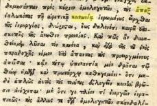
8 P.G. 160, 1097AB, 105C.
Σελίδα 42
Πρωτότυπο ↗Ὅταν διδάσκει ἐπίσκοπος τήν ἀσέβειαν, κοινωνῶν συμπροσευχητικῶς, πνευματικῶς, συγκυλιόμενος μετ’ αὐτῶν καί συναυλιζόμενος ἤ διά λήψεως δώρων καί παροχῆς τοιούτων -(ὅπερ τό μέν ἰσάξιον τῆς συμπροσευχῆς καί δή βαρύτερον καί πλέον ἀξιοκατάκριτον, ὅταν πρόκειται περί λειτουργικῆς-τελετουργικῆς συμπράξεως ἐν ἱερατικῇ ἀμφιέσει, μετά ψαλμῶν καί ἀνταλλαγήν π.χ. δώρων)- στούς αἱρετικούς, ἔχουν ἐφαρμογήν τά λόγια τοῦ Ἁγίου ἀποστόλου Παύλου, πού εἶπε: «ἀλλά καί ἐάν ἡμεῖς ἤ ἄγγελος ἐξ οὐρανοῦ εὐαγγελίζηται ὑμῖν παρ’ ὅ εὐηγγελισάμεθα ὑμῖν, ἀνάθεμα ἔστω. ὡς προειρήκαμεν, καί ἄρτι πάλιν λέγω· εἴ τις ὑμᾶς εὐαγγελίζεται παρ’ ὅ παρελάβετε, ἀνάθεμα ἔστω»9.
Κατά τόν ἅγιον Μέγαν ἡγούμενον τῆς τοῦ Στουδίου Μονῆς ἡ ὑπεράσπιση τῆς παραδεδομένης πίστης δέν εἶναι ἔργον μόνον τῶν ἐπισκόπων, τῶν κληρικῶν καί τῶν μοναχῶν. Κάθε χριστιανός, ὅσο ἀσήμαντος καί ἄν εἶναι, ὀφείλει νά συμμετέχει στόν ὑπέρ Πίστεως ἀγῶνα. Ὁ Κύριος ἔδωσεν ἐντολήν «μή σιωπᾶν ἐν καιρῷ κινδυνευούσης πίστεως». Ἐάν ἡ πίστη κινδυνεύει, ὁ Ὀρθόδοξος χριστιανός δέν μπορεῖ νά ἐπικαλεστεῖ, ὅτι εἶναι ἕνας φτωχός λαϊκός, πού δέν ἔχει λόγον καί ἐνδιαφέρον γιά τό θέμα αὐτό. Ἐάν δέν μιλήσουν οἱ ἄνθρωποι, τότε θά βγάλουν φωνή οἱ πέτρες, ὅπως εἶπεν ὁ Κύριος: «ἐάν οὗτοι σιωπήσωσιν, οἱ λίθοι κεκράξονται». Ὁ Ὀρθόδοξος χριστιανός θά δώσει λόγον στόν Θεόν γιά ὅσα ἀνωφελῆ εἶπε καί γιά ὅσα χρήσιμα δέν εἶπεν.
Κανένας δέν ξεφεύγει ἀπό τήν κρίση τοῦ Θεοῦ, εἴτε βρίσκεται πολύ χαμηλά στήν κοινωνίαν εἴτε εἶναι βασιλιάς10.
Ὁ ἴδιος ὁ Κύριος, ὅμως, μᾶς διδάσκει νά προσέχουμε λέγοντας «μήποτε συλλέγοντες τά ζιζάνια ἐκριζώσητε ἅμα αὐτοῖς τόν σῖτον» Ματθ. 13, 29!
Γιαὐτό ἀποτειχίζουμε τόν αἱρετικόν καί τόν κηρύσσοντα ἐπανειλημμένα ἐν τῇ πράξει τήν αἵρεση τοῦ Νεοημερολογιτισμοῦ - Οἰκουμενισμοῦ, ἐκπεσόντα, σύμφωνα μέ τήν διδασκαλίαν τῶν Πατέρων τῆς Ὀρθοδόξου Πίστεως καί δέν ἀποτειχιζόμαστε ἀπό τήν Ἐκκλησίαν, κατά τόν Μέγαν Ἀθανάσιον, Ἅγιον Γρηγόριον τόν Θεολόγον, καί δι’ αὐτῶν διά πάντων, δηλ. σύμφωνα μέ τούς Ἱερούς Κανόνες, τήν σύνολη ὑμνολογίαν καί διδασκαλίαν τῆς Ὀρθόδοξης Ἐκκλησίας.
Θά ξανακάνει τά ἴδια στό μέλλον, ὅπως καί τά ξαναέκανε, ὁ Ἀττικῆς, μέ βάση τό ἀπαράδεκτο κάι ἀθωοτικό κείμενον πού μᾶς παρουσιάστηκε.
Κατά τούς Ἱερούς Κανόνες καί τήν σύνολη διδασκαλίαν τῶν Πατέρων τῆς Ἐκκλησίας, καί ἰδιαίτερα κατά τόν ΙΕ΄ τῆς ΑΒ΄ Συνόδου καί τήν ἑρμηνείαν του ἀπό τόν ἅγιον Νικόδημον τόν Ἁγιορείτην, εἶναι σύμφωνα μέ τούς Ἱερούς Κανόνες καί τούς Πατέρες ψευδεπίσκοπος καί ψευδοποιμένας.
9 Ἁγίου Θεοδώρου τοῦ Στουδίτου: Ἐπιστολή 15, 1-34, σσ. 45-46, PG 99, 957D-960A καί Γαλ. 1, 8-9 10 Ἁγίου Θεοδώρου τοῦ Στουδίτου, Ἐπιστολή 425, 12-32, σ. 595, PG 99, 1321BC καί Λουκ. 19, 40.
Σελίδα 43
Πρωτότυπο ↗«Τήν διακονίαν σου πληροφόρησον.» Προς Τιμόθεον Β΄ Επιστολή, Κεφάλαιο 4, Στίχος 5 (Β΄ Τιμ. 4,5).
Ἡ ταπεινή μας διακονία:
Ὅσον ἀφορᾶ τό ἔργον, μας, ἀναφέρουμε μόνον ἐπιγραμματικά, ὅτι κάναμε πάνω ἀπό πέντε χιλιάδες Θεῖες Λειτουργίες, ὅλα αὐτά τά χρόνια (31), στήν Πάτραν, στήν Ζάκυνθον, στήν Ἀμαλιάδα, στήν Κόρινθον, στήν Ἀθῆναν, στήν Γερμανίαν, στήν Δανίαν καί ἀλλαχοῦ.
Κάναμε χιλιάδες ἐποικοδημητικά κηρύγματα στήν Ἑλλάδα καί στό ἐξωτερικόν. Ἱδρύσαμε ἐκκλησίες στήν Γερμανίαν καί στήν Δανίαν.
Βαπτίσαμε, ἀφοῦ κατηχήσαμε, ἑκατοντάδες Ἕλληνες, Γερμανούς, Δανούς, Ρώσσους, Τσέχους καί Αὐστριακούς.
Βοηθήσαμε καί βοηθᾶμε ἑκατοντάδες πτωχούς ἀδελφούς καί πολλές οἰκογένειες μέ σημαντικά ποσά, μέ διανομήν ἐνδυμάτων, ὑποδημάτων καί τροφίμων.
Δίνουμε αἷμα, τακτικά, ὡς αἱμοδότες οἱ ἴδιοι καί τά πνευματικά μας παιδιά.
Βοηθήσαμε τήν ἱεραποστολήν στό ἐξωτερικόν μέ μεγάλα ποσά καί ἐξακολουθοῦμε νά τήν βοηθᾶμε.
Γράψαμε δεκάδες κατηχήσεις στά Γερμανικά καί στά Ἀγγλικά καί δανεμήθηκαν τά ἔργα μας σέ χιλιάδες ἀντίτυπα σέ ὅλον τόν κόσμο.
Ἐκδώσαμε χιλιάδες ὁμολογιακά βιβλία καί τά μοιράσαμε ὅλα σχεδόν δωρεάν.
Ἐκδώσαμε, ἐπίσης, χιλιάδες τεύχη τοῦ ἐποικοδομητικοῦ Ὁμολογιακοῦ περιοδικοῦ «Ἅγιοι Κολλυβάδες», πού διανεμήθηκε σέ ὅλον τόν κόσμον καί στηρήχθηκαν πολλοί στήν Ὀρθοδοξίαν.
Στηρίξαμε οἰκονομικά ἀρκετές ἐκκλησίες στήν Ἑλλάδα καί φτωχούς Ὁμολογητές στό Ἅγιον Ὄρος.
Σελίδα 44
Πρωτότυπο ↗Χτίσαμε καί ἐξοπλίσαμε πέντε ἐκκλησίες καί ἕνα μικρό μοναστήρι.
Στήν κεντρική ἐκκλησίαν μας τῶν Ἁγίων Πάντων ἐπενδύσαμε σχεδόν τριπλάσια ποσά ἀπό ὅσα στοίχισε γιά νά χτιστεῖ, ἀφοῦ τήν παραλάβαμε σχεδόν γιαπί καί τήν κάναμε ἕνα μικρό στολίδι στήν καρδιά τῆς Πάτρας καί πανέμορφη.
Ἡ συνεχής διακονία μας καί ἰδίως τῆς Πρεσβυτέρας μας σέ ὅλους τούς τομεῖς τῆς εὐρύτερης διακονίας της, στήν περιοχή τῆς Ἀχαΐας, εἶναι ἀπερίγραπτη.
Πληροφοριακά ἐπισυνάπτονται καί τά ἑξῆς κρίσιμα καί οὐσιώδη στοιχεῖα γιά τά πρόσωπα μέ τά ὁποῖα σχετίζεται ὁ Ἀττικῆς (καί θά ἐπανέλθουμε μέ περισσότερα στοιχεῖα):
Μητροπολίτης Αντινόης Παντελεήμων Λαμπαδάριος. Ο Θεός να μας ελεήσει
από τέτοιους ψευδοδιδασκάλους!
3-11-24 https://www.triklopodia.gr/%ce%bc%ce%b7%cf%84%cf%81%ce%bf%cf%80%ce%bf%ce%bb%ce%af%cf%84%ce% b7%cf%82-%ce%b1%ce%bd%cf%84%ce%b9%ce%bd%cf%8c%ce%b7%cf%82%cf%80%ce%b1%ce%bd%cf%84%ce%b5%ce%bb%ce%b5%ce%ae%ce%bc%cf%89%ce%bd-%ce%bb/
+Ο Μητροπολίτης Αντινόης Παντελεήμων Λαμπαδάριος Με έκπληξη και τρέμοντας άκουσα λόγια βλάσφημα από τον ιερέα-Πρεσβύτερο π. Ευάγγελο Παπανικολάου, ο οποίος αυθαίρετα διακήρυξε βλάσφημα εναντίον της Θείας Κοινωνίας.
Ο εν λόγω κληρικός, εμφανίζεται ως “σούπερ θεατρίνος”, προκαλώντας το κοσμικό ενδιαφέρον των ακροατών του. Πρέπει να τονίσουμε ότι :
Σελίδα 45
Πρωτότυπο ↗η Θεία Κοινωνία λαμβάνεται κατόπιν κατάλληλης προετοιμασίας, με νηστεία, ιερά εξομολόγηση και καλά έργα. Δεν μεταδίδεται με το ζόρι. Πρέπει κανείς να το θέλει. Ούτε μπορεί να δοθεί, εάν εκείνος που θα κοινωνήσει δεν γνωρίζει το τι λαμβάνει. Πολύ περισσότερο, δεν λαμβάνεται μέσω ενός σαρκικού “φιλήματος”, “φιλογλωσσίας”! Εάν κανείς δεν θέλει να κοινωνήσει, είναι καθαρά δικό του ζήτημα. Αλίμονο, εάν δεχθούμε την βλάσφημο γνώμη του αθεολόγητου π. Παπανικολάου! “Φρίκσον ήλιε και στέναξε η γη!” Αγαπητοί μου, μην παρακολουθείτε ανθρώπους που δεν έχουν Πνεύμα Θεού, αλλά επιδιώκουν την αυτοπροβολή τους και γίνονται θεατρίνοι. Ο ΘΕΟΣ να μας ελεήσει και να μας προστατεύει από τέτοιους ψευδοδιδασκάλους.
Με πατρική αγωνία. +Ο Μητροπολίτης Αντινόης Παντελεήμων Λαμπαδάριος Κάλυμνος. Άκτιστον
Αὐτός εἶναι ὁ π. Βαγγέλης Παπανικολάου
γιά τόν ὁποῖον ἀποδείξαμε,
1. ὅτι μᾶς κατηγορεῖ ὡς αἱρετικούς, παρασυνάγωγους καί σχισματικούς,
2. καθώς καί ὅτι βλασφημεῖ λέγοντας ἀνέκδοτα γιά τόν Κύριον Ἰησοῦν Χριστόν πού τόν ἀντιπαραβάλλει μέ τόν Μωάμεθ μέ αἰσχρόν ἀνέκδοτον.
3. Τώρα φαίνεται καί ξεκάθαρα, ἀπό τά πιό κάτω κείμενα, ἐκτός τῶν προηγουμένων ἀναφορῶν, τό σιχαμερόν, (αὐτό σημαίνει τό γλοιώδης) τῶν κινήσεων καί τῶν λεγομένων του.
Betreff: Ὁ Εὐάγγελος Παπανικολάου συμβουλεύει λαϊκό, νὰ μεταδώσει τὴν Θεία Κοινωνία μὲ γλωσσόφιλα!!!
Datum: Sat, 26 Oct 2024 14:57:50 +0300
Von: Jim Loukas <jim.loukas@gmail.com>
An: Dr.Jur. N. Dimaras <dikaio@otenet.gr>
https://eugenikos.blogspot.com/2024/10/blogpost_93.html?m=1&sfnsn=mo&fbclid=IwY2xjawGJtSlleHRuA2FlbQIxMQABHbRU0ABF5w2MpDaDi23Jkz1KURjXgLZOAPwhWX2e5FpFRYwqGrQnm7VyA_aem_H_0Ai5WbU0xtGkV2c Qp4Pg ἀπὸ τὸ λεπτό 30:36 https://www.youtube.com/watch?v=F1to9DE1wiI
Φρίξον ήλιε, στέναξον γη. Η τραγική καὶ βλάσφημη προσπάθεια του π. Ευάγγελου Παπανικολάου να φανεί κατηχητής της Εκκλησίας διδάσκοντας ασεβέστατες πρακτικές μὲ γλωσσόφιλα.
Ὁ π. Εὐάγγελος Παπανικολάου συμβουλεύει λαϊκό, νὰ μεταδώσει τὴν Θεία Κοινωνία μὲ γλωσσόφιλα!!!
Αὐτὴ εἶναι, δυστυχῶς, ἡ κατάληξη, π. Εὐάγγελε, ὅταν βάζεις τὴν διδασκαλία σου πάνω ἀπὸ τὴν διδασκαλία τῶν Ἁγίων καὶ συμπορεύεσαι μὲ καραμπινάτους αἱρετικοὺς Οἰκουμενιστὲς ὅπως ὁ Δημητριάδος Ἰγνάτιος, γιὰ νὰ ἔχεις δημοσιότητα.
Σελίδα 46
Πρωτότυπο ↗Ὁ π. Εὐάγγελος Παπανικολάου ποὺ ἔχει ἐξελιχθεῖ σὲ κατηχητικὸ στὰρ τῆς Ἐκκλησίας, στὰ μέσα μαζικῆς καὶ ἡλεκτρονικῆς ἐνημέρωσης κλήθηκε νὰ μιλήσει ὡς κατηχητὴς στὴν Ἱ. Μητρόπολη Δημητριάδος. Φυσικὰ δὲν πείραξε τὸν γνωστὸ ἱερέα καθόλου τὸ γεγονός, ὅτι κλήθηκε νὰ μιλήσει σὲ μία Μητρόπολη, ποὺ πρωτοστατεῖ στὴν αἵρεση, στὴν μεταπατερικὴ θεολογία, στὴν ἐκκοσμίκευση καὶ στὴν ἀποστασία. Δὲν τὸν πείραξε ποὺ τόσες ἀναγνωρισμένες πνευματικὲς μορφὲς τῶν τελευταίων δεκαετιῶν ἔχουν καταδικάσει τὸν μητροπολίτη Ἰγνάτιο καὶ τὴν μεταπατερικὴ σχολή του. Ἀρκεῖ γιὰ τὸν π. Εὐάγγελο νὰ ἔχει βῆμα καὶ νὰ παρουσιάζει τὸ σώου του, ποὺ θὰ τὸ ζήλευαν πολλοὶ Προτεστάντες.
Στὴν ὁμιλία του καὶ παρουσίᾳ τοῦ Οἰκουμενιστοῦ μητροπολίτου Ἰγνατίου, ποὺ φυσικὰ δὲν προέβη σὲ καμία διόρθωση ὁ π. Εὐάγγελος εἶπε (βλ. https://www.youtube.com/watch?v=F1to9DE1wiI) ἀπὸ τὸ λεπτό 30:36 τὰ ἑξῆς ἀπίστευτα :
"Μὲ παίρνει ἕνας ταξιτζὴς νὰ μὲ πάει κάπου. Μοῦ λέει, εἶσαι ὁ π. Εὐάγγελος, τοῦ λέω ναί. Π. Ευάγγελε, μοῦ λέει, ἡ γυναίκα μου δὲν ἔχει κοινωνήσει ἀπὸ τότε ποὺ τὴν παντρεύτηκα... Τί νὰ κάνω; Ἐγὼ πάω στὴν Ἐκκλησία κάθε Κυριακὴ φέρνω αντίδωρο, ἀλλὰ αὐτή "δὲν θέλω", ἀλλὰ εἶναι καλὴ γυναίκα... Π. Εὐάγγελε δὲν θὰ κοινωνήσει αὐτὴ ἡ γυναίκα ποτέ; Λέω, θὰ κοινωνήσει. Αὔριο τοῦ λέω, θὰ ρθεῖ νὰ κοινωνήσει. Πάτερ, μοῦ λέει, εἶσαι μὲ τὰ καλά σου; Πῶς θὰ τὴν κοινωνήσω αὔριο; Θὰ σοῦ πῶ ἐγώ, τοῦ λέω. Ἄμα δὲν ἔλθει αὐτὴ πάμε ἐμεῖς... Θὰ 'ρθεῖς ἐσύ, θὰ κοινωνήσεις, θὰ καταπιεῖς τὴν Θεία Κοινωνία, ἀλλὰ τὰ σάλια θὰ τὰ κρατήσεις. Θὰ πᾶς στὸ σπίτι καὶ μόλις τὴν δεῖς θὰ τῆς πεῖς: Κουκλάρα μου! Καὶ θὰ τῆς κάνεις ἕνα ὀρθόδοξο γλωσσόφιλο!!! Καὶ τὴν κοινώνησες βρὲ εὐλογημένε, μὴ στεναχωριέσαι. Ὁ Κύριος εἶναι ἐδῶ. Γιὰ ὄνομα τοῦ Θεοῦ νὰ εἶστε ἔξυπνοι."
Γιατὶ νὰ πρωτοκλάψει κανείς, γιὰ τὶς "ἔξυπνες" "συμβουλές" τοῦ π. Εὐαγγέλου ἢ γιὰ τὰ γέλια τοῦ "εὐσεβοῦς" ἀκροατηρίου, στὸ ὁποῖο δὲν βρέθηκε κανεὶς νὰ τοῦ πεῖ, τί λὲς βρὲ ἀθεόφοβε!
Μάλιστα ὁ π. Εὐάγγελος θέλησε νὰ τεκμηριώσει τὴν βλασφημία του συγκρίνoντάς την μὲ τὸ παράδειγμα τῶν ἁγίων ποὺ ἐλάμβαναν τὴν Θεία Κοινωνία μέσα σὲ σταφίδες.
Ναί, π. Εὐάγγελε, ἀλλὰ πρῶτον οἱ Ἅγιοι ἐπιθυμοῦσαν νὰ κοινωνήσουν, δὲν ἐξαπατήθηκαν καὶ δεύτερον ἔλαβαν τὴν Θεία Κοινωνία, ὅπως ἐσεῖς διηγεῖστε μὲ κάθε εὐλάβεια καὶ ὄχι, ἂν εἶναι δυνατόν, ντρέπεται καὶ μόνο ποὺ τὸ γράφει κανείς, μὲ γλωσσόφιλα!!! Ἡ γυναίκα τοῦ κυρίου δὲν ἐπιθυμοῦσε νὰ κοινωνήσει. Αὐτὸ ἔπρεπε νὰ γίνει σεβαστό ἢ νὰ ἀλλάξει μὲ ἄλλο τρόπο. Κι ἐσεῖς συμβουλεύετε τὸν σύζυγο νὰ ἐξαπατήσει τὴν γυναῖκα του καὶ νὰ τὴν "κοινωνήσει" μὲ τὸ ζόρι. Ποῦ ἀκούστηκε πάτερ, ἄνθρωπος νὰ πρέπει νὰ κοινωνήσει παρὰ τὴν θέλησή του; Ο Χριστὸς δὲν ἐξαναγκάζει πάτερ, οὔτε ἐξαπατᾶ. Θυσιάζεται γιὰ ὅλους, ἀλλὰ κοινωνοί Του γίνονται μόνον ὅσοι Τὸν ἀκολουθοῦν.
Ποῦ ἀκούστηκε νὰ κοινωνάει κάποιος ἀπὸ τὰ σάλια τοῦ ἄλλου. Ξέρετε, τί λέτε καὶ σὲ ποιὲς πρακτικὲς προωθεῖτε τὸ ποίμνιο; Δηλαδὴ θὰ πηγαίνουν ὅλοι τώρα μετὰ τὴν Θεία Κοινωνία στὰ σπίτια τους καὶ θὰ κοινωνοῦν μὲ τὰ σάλια τους (!!!), ὅσους δὲν θέλησαν νὰ ἔλθουν στὴν Ἐκκλησία δίνοντας γνωσσόφιλα!!! ἢ φτύνοντας σὲ ποτήρια νὰ πίνει τὰ σάλια ὁ ἄλλος!!!
Γιὰ τὸν δὲ μητροπολίτη ποὺ ἄκουγε ὅλα αὐτὰ καὶ δὲν ἐπενέμβη, αὐτὸ δείχνει σὲ ποιὸ σημεῖο ἀναισθησίας καὶ ἀπομάκρυνσης ἀπὸ τὸν Θεὸ ἔχει φθάσει. Αὐτὰ φέρνει ἡ κοινωνία μὲ τὴν αἵρεση.
Εἶναι πιὰ ξεκάθαρο. Ὅσοι ἀκολουθοῦν καὶ ἐπαινοῦν τέτοιους ἀνθρώπους φέρουν τεράστια εὐθύνη.
Ἐμεῖς θέλουμε νὰ μείνουμε "χαζοί" ὅπως μᾶς θέλει ὁ Χριστὸς καὶ ὄχι "ἔξυπνοι" ὅπως μᾶς θέλει ὁ π. Εὐάγγελος.
Ἀδαμάντιος Τσακίρογλου
https://www.youtube.com/watch?v=k2g5kM4fo6I Στην αρχή ὁ κληρικός παπα- Βαγγέλης Παπανικολάου λέει, ότι οι παλαιοημερολογίτες δεν έχουν Αποστολική Διαδοχή.
Σελίδα 47
Πρωτότυπο ↗Μετά αναφέρει, ότι ο προβληματισμός τους τότε - και του Ιωσήφ του ησυχαστή - δέν ήταν αν κάνανε λάθος, που πηγαίνανε με το παλιό ημερολόγιο, αλλά αν κάνανε λάθος που δεν μνημονεύανε τον αιρετικό Πατριάρχη. Έπειτα κάνανε σαρανταλείτουργο, για να τους πεί ο Θεός, αν πρέπει να μνημονεύουν το αιρετικό Πατριάρχη, το όνομα του οποίου ούτε καν θυμάται. Την τεσσαρακοστή ημέρα, τους είπε ο Κύριος να πάνε με την Εκκλησία, αλλά αυτοί κατάλαβαν, ότι η Εκκλησία του Χριστού είναι αυτή της οποίας ηγείτο ο Παναιρετικός Πατριάρχης! Αποφάσισαν, λοιπόν, να πάνε με την αίρεση, και παρότι δεν είχαν Αποστολική διαδοχή, ο Ψευδοπατριάρχης δεν θεώρησε απαραίτητο, να τους ξαναχειροτονήσει. Αρκούσε τους είπε, να πάνε να λειτουργήσουν με τους Δανιηλαίους και αυτό ήταν αρκετό, για να ενταχθούν στην ψευδεκκλησία τους, - δηλαδή εκκλησία ''μπακάλικο''… Έτσι, λοιπόν, ο παπα - Εφραίμ, έκανε την ''ευλογημένη'' υπακοή, να συλλειτουργεί με τους αιρετικούς και να μνημονεύει τον Οικουμενιστή Ψευδοπατριάρχη για 20 χρόνια ή και όσα ακόμη αν χρειάζονταν, έστω και αν στο μεταξύ υπήρχε η πιθανότητα να πέθαινε και να κολαζόταν. Κατά λέξη λέεει: «20 χρόνια ήξερε το σωστό και έκανε το λάθος, για την υπακοή. Πως να μην πάρει χάρη ο άνθρωπος, πώς να μην τον ευλογήσει ο Θεός». Διάγνωσις: Βαρειά σχιζοφρένεια και απόλυτη αντιστροφή της αλήθειας.
β) Ἡ ἄρση τῶν ἀναθεμάτων-(ἀκοινωνησίας)- ἐκ μέρους τῆς
Κωνσταντινουπόλεως ἐξ ἐπόψεως Κανονικοῦ Δικαίου
Στὸ Φανάρι ἀπὸ τὴν Μείζονα Ἐπιτροπή, ἡ ὁποία ἀπετελεῖτο ἀπὸ δύο ἐπιτροπές, τῶν Πανορθοδόξων καὶ Παγχριστιανικῶν ζητημάτων, καθορίστηκε ὑποεπιτροπή, ἡ ὁποία συγκροτήθηκε ἀπὸ τοὺς Μελίτωνα Ἡλιουπόλεως, Σταυρουπόλεως Μάξιμο, Μύρωνα Χρυσόστομο καὶ τοὺς καθηγητὲς Ἐμμανουὴλ Φωτιάδη καὶ Βασίλη Σταυρίδη καί ἀποδέχθηκε τὴν ἀνάγκη ἄρσης τοῦ ἀναθέματος (ἀκοι-νωνησίας), ἀλλὰ διχάστηκε σχετικὰ μὲ τὸν τρόπο καὶ τὸν χρόνο τῆς Ἄρσης τῶν Ἀναθεμάτων-Ἀκοινωνησίας. Τελικὰ μετὰ τὴν ὁλοκλήρωση τῶν τυπικῶν διαδικασιῶν στὶς 7 Δεκεμβρίου 1965 ἔγινε ἡ τελετὴ ἄρσης τῶν ἀναθεμάτωνἀκοινωνησίας. Ἔτσι τὴν ἄρση τῶν ἀναθεμάτων-ἀκοινωνησίας πραγματοποίησε ἡ Πατριαρχικὴ Σύνοδος τῆς Κωνσταντινουπόλεως ὑπὸ τὴν προεδρία τοῦ μασώνου καὶ τυμπανιαίου Ἀθηναγόρα.
Ἡ Πατριαρχικὴ Σύνοδος, ποὺ ἦρε τὸν ἀφορισμόν, ἦταν ἁρμόδια, κατὰ τοὺς Λατινόφρονες, γιὰ κάτι τέτοιο, ἐπειδὴ ἀποτελοῦσε ἀδιάσπαστη συνέχεια τοῦ Πατριαρχείου τοῦ 1054, ὑποστήριξε ὁ μέγας μασῶνος, ἀναθεματισμένος καί τυμπανιαῖος Ἀθηναγόρας. Ἔκτοτε κηρύχθηκε ἐπισήμως καὶ θεσμικὰ ἡ αἵρεση τῶν Λατινοφρόνων πού πλέον ἐκκλησιοποιήθηκε καὶ ἐξέπεσαν ἐπισήμως τῆς ἐκκλησιαστικῆς κοινωνίας καὶ τῆς ἱερωσύνης οἱ Παπόδουλοι, κατά τούς α΄ καί β΄ Κανόνες τῆς Γ΄ Οἰκουμενικῆς Συνόδου καί τόν α΄ τοῦ Ἁγίου Μεγάλου Βασιλείου.
Σελίδα 48
Πρωτότυπο ↗Ὁ αἱρετικός Παπόδουλος καί Λατινόφρων «Γερμανίας» Αὐγουστῖνος Λαμπαρδάκης «χρίεται» ἀπό
Καρδινάλιον, ἐπισφαγίζοντας ἐπισήμως τήν ἕνωση μέ τούς Λατίνους
ΓΙΑ ΜΑΣ ΤΟΥΣ ΟΡΘΟΔΟΞΟΥΣ, ΟΜΩΣ, μὲ δεδομένο τὸ γεγονός, ὅτι τὸ ἀνάθεμα τοῦ 1054 ἐπιδοκιμάσθηκε ἀπὸ τὸν λαὸ τῆς Κωνσταντινουπολεως καὶ ἔγινε ἀποδεκτὸ ἀπὸ τὰ ἄλλα Πατριαρχεῖα τῆς Ἀνατολῆς, τίθεται ἀφενὸς ζήτημα ἀνεπάρκειας καὶ ἀναρμοδιότητας τῆς Συνόδου, καὶ ἀφ’ ἑτέρου καὶ κυρίως τὰ ὑπό τῶν Πατέρων καί τῶν Συνόδων ἐπιβληθέντα ἀναθέματα δὲν αἴρονται ποτέ. Καὶ τὸ ἐπιχείρημα, πὼς τάχα ἡ Γ΄ πανορθόδοξη διάσκεψη τῆς Ρόδου, ἦταν ἡ πηγὴ ἐξουσιοδότησης γιὰ τὴν πράξη τῆς ἄρσης τῶν ἀναθεμάτωνἀκοινωνησίας, δὲν εἶναι ἰσχυρό, καθὼς ἡ «πανορθόδοξη» δὲν ἦταν Σύνοδος τῶν Ὀρθοδόξων Ἐκκλησιῶν, ποὺ εἶναι ἀρμοδιότερη, γιὰ νὰ ἐξουσιοδοτήσει τὴν Πατριαρχικὴ Σύνοδο, γιὰ νὰ ἐκπροσωπήσει τὴν Ὀρθόδοξη Ἐκκλησία καὶ νὰ ἄρει τὸ ἀνάθεμα-ἀκοινωνησία. Ἔτσι παραμένει καὶ τὸ ζήτημα τῆς δικαιοδοσίας τῆς πατριαρχικῆς συνόδου. Ἀπὸ τὴν πλευρὰ τῶν Οἰκουμενιστῶν καὶ Λατινοφρόνων αἴρεται, ὡστόσο, ρητὰ καὶ κατηγορηματικὰ τὸ ἀνέθεμα καί ἡ ἀκοινωνησία τῆς ἐνδημούσης Συνόδου τοῦ 1054 καὶ ὁδηγεῖ τοὺς ΠαπόδουλουςΛατινόφρονες καὶ τοὺς πρὸς αὐτοὺς κοινωνικοὺς στὸν πνευματικὸ θάνατο.
Ἀναλυτικώτερα:
H AΡΣΗ ΤΗΣ ΑΚΟΙΝΩΝΗΣΙΑΣ ΠΡΟΣ ΤΟΥΣ ΠΑΠΙΚΟΥΣ (Τό 1965 ἔγινε ἄρση τῆς ἀκοινωνησίας καί ὄχι ἄρση τῶν ἀναθεμάτων)
Γεγονότα πορείας τῆς παναιρέσεως τοῦ Οἰκουμενισμοῦ καί τοῦ status quo αὐτῆς, συνέβησαν στό Σαμπεζύ στίς 19 Ὀκτωβρίου 2013, ὅπου ἐπαναβεβαιώθηκε ἡ ἄρση τοῦ σχίσματος - ἀκοινωνησίας μεταξύ της Ὀρθοδόξου τοῦ Χριστοῦ Ἐκκλησίας καί τῆς αἱρέσεως τοῦ Παπισμοῦ.
Ἐπειδή ὁ ἐχθρός της Πίστεώς μας εἶναι ἤδη ἐντός τῶν τειχῶν, παραθέτω ἀποσπάσματα κειμένων καί δύο σχόλια σημαντικά πού ἀποδεικνύουν τοῦ λόγου τό ἀληθές.
Νικόλαος Γ. Σαββόπουλος, τ. διευθυντής τοῦ Ἐκκλησιαστικοῦ Λυκείου Κορίνθου.
Διαβάζουμε στή ROMFEA.GR:
«Ὁ Πρύτανης τοῦ Πανεπιστημίου τοῦ Φριβούργου (Freiburg) κ. Guido Vergauwen … ἐχαιρέτισε τήν ἐποικοδομητικήν συμβολήν τῶν δύο θεσμῶν εἰς τό ἀπό κοινοῦ ὀργανωθέν Συνέδριον, μέ θέμα:
Σελίδα 49
Πρωτότυπο ↗« Ἡ Β΄ Βατικανή Σύνοδος καί ἡ Ὀρθόδοξος Ἐκκλησία», διά τόν διάλογον καί διά τήν προσέγγισιν τῶν δύο Ἐκκλησιῶν, αἱ ὁποῖαι, ἀπό τῆς ἄρσεως τῶν ἀναθεμάτων τό 1965, δέν εὑρίσκονται πλέον ὑπό καθεστώς ὁριστικοῦ σχίσματος, ἀλλά διακοπῆς τῆς ἐκκλη-σιαστικῆς κοινωνίας.»
http://romfea.gr/…/mitropoleis-ex…/19770-2013-10-20-22-30-01
ΑΚΟΛΟΥΘΕΙ ΣΗΜΑΝΤΙΚΟ ΣΧΟΛΙΟ
Στό βιβλίο τοῦ Ἀθ. Σακαρέλλου: «Ἔγινε ἡ Ἕνωση τῶν Ἐκκλησιῶν», ἀναφέρεται τό Γαλλικό κείμενο τῆς συμφωνίας «Κοινή Δήλωσις» τοῦ 1965, ὅπου στήν παράγραφο 4 τῆς συμφωνίας χρησιμοποιεῖται ἡ λέξη excommunication, αὐτό σημαίνει, ὅτι μέ τή συμφωνία αὐτή ἔχει ἀρθεῖ ἡ «ἀκοινωνησία», τό «σχίσμα», δηλαδή μεταξύ τῶν δύο Ἐκκλησιῶν, σέ ἀντίθεση μέ τήν ἐπίσημη ἑλληνική μετάφραση, πού ὁμιλεῖ, δῆθεν, γιά ἄρση Ἀναθεμάτων, πρός καθησυχασμό τῶν Ὀρθοδόξων. Ἡ ἕνωση, δυστυχῶς, ἔχει γίνει, ἁπλά πραγματώνεται καί παρουσιάζεται, τοπικά καί χρονικά, σταδιακά, ἀνάλογα μέ τίς ἀντιδράσεις.
Καί γιά νά μήν ὑπάρχει ἀμφιβολία, ὅτι ἡ Γαλλική λέξη excommunication σημαίνει «ἀκοινωνησία» τοῦτο ἀποδεικνύεται καί ἀπό τό ἴδιο τό Γαλλικό κείμενο τῆς συμφωνίας, πού χρησιμοποιήθηκε δύο φορές ἡ ἔκφραση la communion ecclesiastique καί σημαίνει «ἐκκλησιαστική κοινωνία», ὅπως ὀρθά ἀποδίδεται ἀπό τήν ἐπίσημη ἑλληνική μετάφραση καί ὄχι ὡς «ἐκκλησιαστικό ἀνάθεμα».
Στήν πραγματικότητα, λοιπόν, ἡ κοινή δήλωση τό 1965, στό Γαλλικό κείμενο, ὁμιλεῖ γιά ἄρση τῆς ἀκοινωνησίας καί ὄχι γιά «ἁπλῆ ἄρση τοῦ Ἀναθέματος» μεταξύ τῶν ἐκκλησιῶν.
Τό γεγονός αὐτό ἐξηγεῖ ὅλα τά μεταγενέστερα γεγονότα, ὅπως συμπροσ-ευχές, οὐνιτικά συλλείτουργα, μετάδοση τῆς Θείας Κοινωνίας σέ παπικούς λαϊκούς σέ τόπους, πού δέν ὑπῆρχε ἀξιόλογη ἀντίδραση, νεώτερες κοινές δηλώσεις καί συμφωνίες, μνημόσυνο τοῦ ὀνόματος τοῦ Πάπα Ρώμης στήν Ἁγία Πρόθεση, γεγονός πού παραδέχθηκε, ὅτι ἔπραττε ὁ ἴδιος ὁ ἀναθεματισμένος Ἀθηναγόρας, μνημόνευση δημόσια τοῦ Πάπα στό Φανάρι στήν τελευταία του ἐπίσημη ἐπίσκεψη καί ἄλλες παρόμοιες πράξεις.
Καί σέ ὅλα αὐτά πρωτοστατοῦσε τό Φανάρι καί ἀκολουθοῦσαν μέ παρό-μοιες πράξεις καί ἄλλες τοπικές Ἐκκλησίες.
Αὐτό ἀποτελεῖ, ἐκ τῶν πραγμάτων, ἕνωση καί ἔμπρακτη ἐφαρμογή ὄχι ἁπλά τῆς ἄρσεως τοῦ Ὁριστικοῦ Σχίσματος, ἀλλά ἄρση καί τῆς Ἀκοινωνησίας.
Ἡ ἕνωση ἐφαρμόζεται σταδιακά, τοπικά καί χρονικά, ὅπως ὀρθά ἐπι-σημάνθηκε, ἀνάλογα μέ τίς ἀντιδράσεις καί κάποια κατάλληλη στιγμή θά κατα-στεῖ ἡ ἕνωση πλήρης, ἐπισφραγίζοντας τό ἤδη ὑφιστάμενο ἀπό ἐτῶν πραγματικό καθεστώς. (Ἀπόσπασμα ἀπό ἄρθρο τῆς Φιλορθοδόξου Ἑνώσεως «Κοσμᾶς Φλαμι-άτος»).
Ἡ Κοινή δήλωση τοῦ Πάπα Παύλου ΣΤ΄ καί τοῦ (σ.σ. ψευδο)-Πατρι-άρχου Ἀθηναγόρου
στά Γαλλικά:
http://www.vatican.va/…/rc_pc_chrstuni_doc_19650107_athenag…
Σελίδα 50
Πρωτότυπο ↗ΔΙΑΦΩΤΙΣΤΙΚΟ ΑΡΘΡΟ:
Η ΑΡΣΗ ΤΩΝ ΑΝΑΘΕΜΑΤΩΝ
Τοῦ Ἀρχιμ. Ἀθανασίου, Προηγουμένου τοῦ Μεγάλου Μετεώρου
Αὐτή ἡ «ἕνωση στό κοινό Ποτήριο» ἐπιχειρήθηκε μέ τήν περίφημη «ἄρση τῶν ἀναθεμάτων» μεταξύ Βατικανοῦ καί Φαναρίου, πού πραγματοποιήθηκε στά τέλη τοῦ 1965, μέ μονομερῆ ἀπόφαση τοῦ Οἰκουμενικοῦ Πατριαρχείου.
Χαρακτηριστική ἦταν ἡ ἀντίδραση τῆς Ἐκκλησίας τῆς Ἑλλάδος, ἡ ὁποία:
«μέ πολλήν δυσμένειαν ἐπληροφορήθη τήν πρωτοβουλίαν τοῦ Οἰκουμενικοῦ Πατρι-άρχου Κωνσταντινουπόλεως Παν. Ἀθηναγόρα. Οὐδείς ἔχει τό δικαίωμα νά προβαίνη εἰς παρομοίας πράξεις. Τό δικαίωμα ἔχει μόνον ὁλόκληρος ἡ Ὀρθοδοξία».
Δήλωση τοῦ Ἀρχιεπισκόπου Ἀθηνῶν Χρυσοστόμου, ἐφημ. «Ὀρθόδοξος Τῦπος»:
Νοέμβριος 1965: Μέ τήν ἄρση τῶν ἀναθεμάτων οἱ δύο πλευρές ἐννοοῦσαν τήν ἄρση τοῦ Σχίσματος. Ὁ τότε (σ.σ. ψευδεπίσκοπος) Ἀρχιεπίσκοπος Ἀμερικῆς Ἰάκωβος, ἐπίσημος ἀπεσταλμένος ἐκείνη τήν περίοδο τοῦ Πατριάρχη Ἀθηναγόρα πρός τούς Ρωμαιοκαθολικούς, ἀποκαλύπτει τό περιεχόμενο τῶν μηνυμάτων πού ἀντήλλασσαν Φανάρι καί Βατικανό «μέχρι τοῦ τολμηροῦ ἐπίσης μηνύματος, πού μοῦ ἀνέθεσε ὁ Πατριάρχης νά μεταβιβάσω στόν πρόεδρο τῆς Ἐπιτροπῆς Σχέσεων Δύσης καί Ἀνατολῆς, πού ἦταν ἕνας Γερμανός σεβάσμιος καρδινάλιος, ὁ Αὐγουστῖνος Μπέα».
Καί συνεχίζει ὁ Ἀρχιεπίσκοπος: »Λίγο καιρό μετά, ἐπισκέπτομαι τόν Μπέα στή Νέα Ὑόρκη. Τόν ρώτησα:
-Τί λέτε, σεβασμιώτατε, μποροῦμε νά φέρουμε τίς Ἐκκλησίες μας πιό κοντά μέ τήν ἄρση τοῦ Σχίσματος;
Μοῦ λέει:
-Καλή ἰδέα, δέν ξέρω, πώς θά τή δεχτοῦν στή Ρώμη, ἀλλά ἐγώ νομίζω, ὅτι πρέπει νά γίνει ἡ ἄρση τοῦ Σχίσματος. Ἔτσι, δέν θά ἔχουμε λόγο κανέναν νά μήν πλησιάσουμε ὁ ἕνας τόν ἄλλο.»
Ἐρώτηση δημοσιογράφου Γ. Μαλούχου: “-Τήν ἄρση τοῦ Σχίσματος ἤ τοῦ ἀναθέματος;”
Ἀπάντηση (σ.σ. ψευδοαρχιεπισκόπου):
«Καί τά δύο αὐτά μαζί πηγαίνουνε, γιατί, ὅταν κατέθεσαν οἱ ἀντιπρόσωποι τοῦ Πάπα τό ἀνάθεμα, τρόπον τινά, μέ τό ὁποῖο ἀναθεμάτιζε ὁ Πάπας Νικόλαος τόν Μιχαήλ Κηρουλάριο, Πατριάρχη Κωνσταντινουπόλεως, ἦταν τό ὁριστικό Σχίσμα πιά. Δέν ἔγινε ἄλλη ἐπίσημος πρᾶξις, πού νά καθιερώσει τό Σχίσμα ὡς μία διαιρετική γραμμή μεταξύ
Σελίδα 51
Πρωτότυπο ↗Ἀνατολῆς καί Δύσεως». (Γ. Μαλούχου, «Ἐγώ ὁ Ἰάκωβος», σελ. 196-197). Ἡ ἄρση τοῦ σχίσματος ἐντάσσεται, ἄλλωστε, καί στήν λογική τῶν ἀποφάσεων τῆς Β΄ Βατικανῆς Συνόδου, πού πραγματοποιεῖτο ἐκεῖνο τό διάστημα, γιά ἄρση τῆς ἀκοινωνησίας καί «ἀναγνώριση» τῶν μυστηρίων τῶν Ὀρθοδόξων.
Στό λατινικό μάλιστα κείμενο τῆς «ἄρσεως τῶν ἀναθεμάτων» ὑπάρχει ὁ ὅρος excommunicatio = ἀκοινωνησία, ὁ ὁποῖος στήν ἐπίσημη μετάφραση τοῦ Οἰκουμενικοῦ Πατριαρχείου μεταφράζεται πονηρά καί σκόπιμα ὡς «ἀναθέματα».11 Τό κείμενο, δηλαδή μιλοῦσε γιά «ἄρση τῆς ἀκοινωνησίας».
«Οἱ «New York Times» μετέδωσαν τήν ἀπό κοινοῦ ἀγγελίαν τοῦ Βατικανοῦ καί τοῦ Φαναρίου τῆς 7ης Δεκεμβρίου 1965 διά τήν ἄρσιν τοῦ excommunicatio -(τῆς ἀκοινωνησίας τοῦ Λατινικοῦ κειμένου)- εἰς τήν πρώτην σελίδα, ὡς τό τέλος τοῦ σχίσματος τοῦ 1054 καί ὡς τήν ἐπανέναρξιν τῆς μυστηριακῆς κοινωνίας, πού εἶχε τότε δῆθεν διακοπεῖ.
Φαίνεται πλέον σαφῶς, ὅτι τό Ἑλληνικόν κείμενον, πού ἀναγγέλει τήν ἄρση τῶν
ἀναθεμάτων ἦτο τεχνηέντως παραπλανητικόν. Φαίνεται εἶχε σκοπόν νά ἀμβλύνη ἐνδεχομένας ἀρνητικάς ἀντιδράσεις τῶν Ὀρθοδόξων Ἐκκλησιῶν». (Πατρός Ἰω. Ρωμανίδου, «Ὀρθόδοξος καί Βατικάνειος συμφωνία
περί Οὐνίας»,12
Χαρακτηριστικόν, ἐπίσης, εἶναι ὅτι:
«ὁ Πάπας Ἰωάννης Παῦλος Β΄, πρίν ἐπισκεφθεῖ τό Φανάρι (30-11-1979)… ἐξέφρασε τήν
βεβαιότητά του, ὅτι ἡ ἑνότητα ἔχει ἀποκατασταθεῖ στήν πράξη, («In der Tat war die
Wiederherstellung der Einheit der Christen)»13
(σ.σ «…εἴχομεν τό ἴδιον μυστήριον. Τό ἴδιον βάπτισμα, τά ἴδια μυστήρια καί ἰδιαιτέρως τό ἴδιον Ἅγιον Ποτήριον. Τώρα πού ξαναγυρίσαμεν εἰς τό 1054, διατί δέν ξαναγυρίζομεν καί
εἰς τό Ἅγιον Ποτήριον;».
11 Βλ. σχ. Τόμος Ἀγάπης, Vatican-Phanar (1958-1970), Rome - Istanbul 1971, σελ. 286-287.
12http://www.romanity.org/…/rom.e.14.orthodoxi_kai_vatikania_…
13 Ἀντ. Παπαδόπουλου, Θεολογικός Διάλογος Ὀρθοδόξων καί Ρωμαιοκαθολικῶν {Ἱστορία – Κείμενα – Προβλήματα}, ἐκδ. οἶκος ἀδελφῶν Κυριακίδη, Θεσσαλονίκη-Ἀθῆνα, 1996, σελ. 40)
Σελίδα 52
Πρωτότυπο ↗10 Οκτ 2021 Γράφει ο Μέτοικος
αρθρογραφεί για katanixi.gr…
“Δεν γίνεται, άνθρωπε, να είσαι και με τον Καίσαρα και με το Θεό!”
Επιμέλεια σύνταξης: katanixi.gr
Στην Ιερά Σύνοδο της Ιεραρχίας της Εκκλησίας της Ελλάδος, ο επίσκοπος Ιλίου, Αχαρνών και Πετρουπόλεως Αθηναγόρας, εισηγήθηκε την εφαρμογή ενός «ενιαίου πλαισίου προστασίας των στελεχών της Εκκλησίας», από τις επιθέσεις εκείνων των πιστών που φρονούν: όσα οι Απόστολοι εδίδαξαν, που λαλούν όσα οι Διδάσκαλοι εδογμάτισαν, που κηρύσσουν Χριστόν τον αληθινόν Θεόν και τιμούν «τοὺς Αὐτοῦ Ἁγίους ἐν λόγοις, ἐν συγγραφαῖς, ἐν νοήμασιν, ἐν θυσίαις, ἐν Ναοῖς, ἐν Εἰκονίσμασι…».
Αλλοίμονο! Ο Ιλίου Αθηναγόρας μεταλλάχθηκε και, από επίσκοπος, φάνηκε διώκτης τύραννος των ευσεβών;
Με εισήγησή του στην Ιεραρχία, αντί να προτείνει η «χλιαρή πίστη» των επισκόπων να γίνει ένθερμη, να σταματήσει η «ἐκκοσμίκευση τῆς συνοδικότητας», να ανακοπεί η «ἀλλοίωση τοῦ φρονήματος τῆς Ἐκκλησίας», να πάψουν από τους επισκόπους τα φαινόμενα «ἀνυπακοής καί ἐγωιστικής αὐτοδιάθεσης», να σταματήσουν τα «ψήγματα προτεσταντισμοῦ καί αἱρετικῶν δοξασιῶν» από τους επισκόπους και, επιτέλους, να
Σελίδα 53
Πρωτότυπο ↗εγκολπωθούν οι επίσκοποι το «γνήσιο ὁμολογιακό πνεύμα» ώστε να ειρηνεύσει το χριστεπώνυμο πλήρωμα, προτείνει:
Τους πιστούς χριστιανούς «πού βασανίζονται ἀπό μιά περίπλοκη ψυχοπαθολογία» και, με τα κείμενά τους «καλοῦν τόν λαό σέ ἀποτείχιση ἀπό τήν Ἐκκλησία καί ἀνυπακοή στήν Ἱερά Σύνοδο»! ή να τους «αγνοήσουμε» αφήνοντας τους «νά συνεχίσουν νά δροῦν ἀνεξέλεγκτα ἐντός κι ἐκτός Ἐκκλησίας, σκανδαλίζοντας τούς πιστούς κι ὁδηγώντας πολλούς ἐξ αὐτῶν στήν ἀπόλυτη πλάνη καί σέ πράξεις πού ἐλλοχεύουν πολυεπίπεδους κινδύνους» ή, να τους αντιμετωπίσουμε εφαρμόζοντας «ἕνα ἑνιαῖο πλαίσιο προστασίας τῶν στελεχῶν τῆς Ἐκκλησίας καί τοῦ ποιμνίου μας ἀπό τίς ἐπιθέσεις τῶν πάσης φύσεως δημαγωγῶν, συνωμοσιολόγων καί ὑβριστῶν τοῦ ἔργου καί τῆς προσφορᾶς μας»!!!
Ποιους καλεί, ο επίσκοπος Ιλίου Αθηναγόρας, να αποδεχθούν την εφαρμογή του σκοτεινού και, πάντως, δυσοίωνου «πλαισίου προστασίας» που προτείνει; Μα, τους συνεπισκόπους του, δηλαδή, αυτούς που εκλέγονται «μόνο με το παρασκήνιο», όσους υπέστησαν κατά τον οφικιάλιο του Οικουμενικού Πατριαρχείου Χρήστο Γιανναρά μια «κυριολεκτικά υπαρκτική μετάλλαξη και από σερνάμενες κάμπιες μεταμορφώθηκαν σε χρυσοστολισμένες πεταλούδες» και ντυμένοι, πάντα κατά τον οφικιάλιο του Οικουμενικού Πατριαρχείου, με «Σάκο αυτοκρατορικό και μανδύα με «ουρά», μίτρα και σκήπτρο επίσης του «άρχοντος και δεσπότου βασιλέως», με τον διάκονο να τους κρατάει την «ουρά», έγιναν «σεβασμιότατοι, [που] όλοι γονατίζουν μπροστά τους και [τους] προσκυνούν».
Ποιοι πρέπει να αντιμετωπιστούν, διωκόμενοι; Όσοι εγκολπώθηκαν το λόγο του Απ. Παύλου: «ὅτι ὑμῖν ἐχαρίσθη τὸ ὑπὲρ Χριστοῦ, οὐ μόνον τὸ εἰς αὐτὸν πιστεύειν, ἀλλὰ καὶ τὸ ὑπὲρ αὐτοῦ πάσχειν».
Τί μπορεί να περιλαμβάνει αυτό το «ἑνιαῖο πλαίσιο προστασίας τῶν στελεχῶν τῆς Ἐκκλησίας», του οποίου ο εισηγητής φαίνεται, πως δεν αντιλαμβάνεται, ότι οι Χριστιανοί δεν πτοούνται από διώκτες τυράννους, ότι η Εκκλησία δεν αντέχει και άλλη διχόνοια, ενώ αγνοεί ότι η ουσία Της είναι η καλλιέργεια της ομόνοιας και ενότητας;
Τί μπορεί να σημαίνει, γιαυτήν την «ομόνοια και ενότητα», η απόφαση της Ιεραρχίας της Εκκλησίας της Ελλάδος για «Τήν λήψη τῶν ἀπαραίτητων μέτρων γιά τήν ἀνάσχεση τοῦ κύματος ἀνάδειξης «αὐθεντιῶν», οἱ ὁποῖες δροῦν διασπαστικά ἐντός του Σώματος τῆς Ἐκκλησίας»;
Ποια τα απαραίτητα μέτρα, που θα περιορίσουν τις «αυθεντίες», αφήνοντας το ρόλο αυτό στους «χθεσινούς «Μήτσους», «Κώτσους» ή «Παναγήδες»;
Σελίδα 54
Πρωτότυπο ↗Μήπως οι αφορισμοί; Ασφαλώς, σύμπασα η Ιεραρχία όπως και ο επίσκοπος Ιλίου Αθηναγόρας, γνωρίζουν, ότι οι Ορθόδοξοι Χριστιανοί έχουν ακουσίως, βεβαίωςβεβαίως, συμμάχους τους εχθρούς της Εκκλησίας και, εδώ, δεν νοούνται οι επίσκοποι, αλλά οι δυνάμεις εκείνες, που διακρίνονται για το αντικληρικό τους μένος και ελέγχουν Μέσα Κοινωνικής Αποβλάκωσης. Με τον πρώτο αφορισμό θα ξεσηκώσουν και τις πέτρες, προκειμένου να κατηγορήσουν την Εκκλησία για σκοταδισμό!
Λοιπόν, αν όχι ο φόβος του αφορισμού, ποιο μέτρο σωφρονισμού μπορεί να κρύβει αυτό «το πλαίσιο προστασίας των στελεχών», που αποδέχθηκε η Ιεραρχία της Εκκλησίας της Ελλάδος; Με ποιον τρόπο δεν θα «δοθεί χώρος στους διώκτες των επισκόπων να επεκταθούν»;
Μήπως θέτοντας σε αργία, όσους Ιερείς υπερασπίζονται φανερά την Ορθοδοξία;
Με τον τρόπο αυτό, οι επίσκοποι θα αποκαλυφθούν ως λυκοποιμένες και δεν θα αποτειχίσουν έναν Ορθόδοξο Ιερέα, αλλά εκατοντάδες Ορθοδόξους χριστιανούς!
Είναι μια κάποια λύση τα «κέντρα αναμόρφωσης»; Το μέτρο αυτό έχει σοβαρές δυσκολίες, διότι, όπως όλα τα κέντρα «ανάπλασης» χαρακτήρων και πιστεύω, για να είναι αποδοτικά πρέπει να έχουν ένα αυστηρό σύστημα απόλυτου φυσικού και ψυχολογικού ελέγχου.
Αναμφίβολα, στην Ιεραρχία της Εκκλησίας της Ελλάδος, υπάρχουν επίσκοποι, που σπούδασαν επιτυχώς την επιστήμη της ψυχολογίας για να τα διευθύνουν, όμως, η δυσκολία βρίσκεται στο ότι πρέπει τους χριστιανούς που πιστεύουν το «πειθαρχεῖν δεῖ Θεῷ μᾶλλον ἢ ἀνθρώποις», με τη βία να τους μετατρέψουν σε τροφίμους αυτών των «κέντρων αναμόρφωσης», με ενιαύσια παραμονή για να ολοκληρωθεί η «εκπαίδευσή» τους και, μετά την «οικουμενιστική αναμόρφωσή» τους, θα πρέπει οι «ανανήψαντες» να κάνουν οπωσδήποτε μια εξάμηνη πρακτική, για να βεβαιωθούν οι «αναμορφωτές» ότι το έργο τους πέτυχε.
Η Οργουελική αυτή εκδοχή «προστασίας των στελεχών της Εκκλησίας» δεν υπάρχει στις προθέσεις του Αρχιεπισκόπου Ιερώνυμου κρίνοντας, βεβαίως, από τις εισηγήσεις του στην Δ.Ι.Σ και στην Ιεραρχία και, λογικά, δεν πρέπει να υφίσταται ούτε και στο πίσω μέρος του μυαλού των επισκόπων που κάνουν ότι δεν άκουσαν ή, αν άκουσαν, γράφουν στα πορφυρά τους υποδήματα το λόγο του Γέροντος Παϊσίου: «Ἡ Ἐκκλησία δέν εἶναι καράβι τοῦ κάθε ἐπισκόπου νά κάνει ὅ,τι θέλει»!
Λοιπόν, για τους χριστιανούς, που μοναδικό άρθρο στη ζωή τους είναι το «Ἐμοὶ γὰρ τὸ ζῆν Χριστὸς καὶ τὸ ἀποθανεῖν κέρδος», προφανώς και δεν έχει καμία αξία το περιεχόμενο του «ἑνιαῖου πλαισίου προστασίας τῶν στελεχῶν τῆς Ἐκκλησίας», αξίζει
Σελίδα 55
Πρωτότυπο ↗όμως να ερωτηθούν οι Επίσκοποι: Τι σόι «αλιείς ανθρώπων» είναι όταν αποφασίζουν, ότι «πρέπει νά ἀποφεύγονται ἀκραῖες ἐνέργειες καί ἐκδηλώσεις καί τά θέματα νά ἀντιμετωπίζονται μέ σύνεση, νηφαλιότητα καί διάκριση, μέσα ἀπό τό συνοδικό πολίτευμα τῆς Ἐκκλησίας», για να «μή διαταραχθεῖ ἡ ἑνότητα μεταξύ Ἱερᾶς Συνόδου καί χριστεπωνύμου πληρώματος, μεταξύ πίστεως καί ἐπιστήμης!!, μεταξύ Ἐκκλησίας καί Πολιτείας!!!» και ταυτόχρονα υιοθετούν τις προτάσεις του επισκόπου Ιλίου Αθηναγόρα;
Τέλος, επίσκοπε Ιλίου Αθηναγόρα, ποιοι «ὑποσκάπτουν μεθοδικά τά θεμέλια τῆς Ἐκκλησίας»; Οι Ορθόδοξοι χριστιανοί, που τιμούν «τοὺς τῆς εὐσεβείας Κήρυκας», που στοιχούνται στην πίστη των Αποστόλων, στην πίστη των Πατέρων της Εκκλησίας ή, οι επίσκοποι που συνπροσεύχονται με αλλόπιστους, που κοινωνούν Ουνίτες, που αναγνωρίζουν και συλλειτουργούν με τους σχισματοαιρετικούς της βαρθολομαίικης ψευδοεκκλησίας στην Ουκρανία, οι επίσκοποι που μεταδίδουν τη Θεία μετάληψη με πλαστικά κουτάλια και ασπάζονται το Άγιο Ευαγγέλιο και τα ιερά Εκτυπώματα του Κυρίου, της Παναγίας Μητέρας Του και των Αγίων φορώντας φίμωτρο;
Ποιοι «ὑποσκάπτουν μεθοδικά τά θεμέλια τῆς Ἐκκλησίας» επίσκοπε Ιλίου Αθηναγόρα;
Οι Ορθόδοξοι Χριστιανοί που οδοιπορούν με παρρησία το δρόμο του Θεού, ακούγοντας το λόγο του Κυρίου «ἀπόδοτε οὖν τὰ Καίσαρος Καίσαρι καὶ τὰ τοῦ θεοῦ τῷ θεῷ» ή οι επίσκοποι που επικροτούν τη δήλωση του Αρχιεπίσκοπου Ιερώνυμου ότι: «Ὁ τρόπος πού καλεῖται νά λειτουργήσει ἡ Ἐκκλησία καί οἱ ποιμένες της στήν σημερινή ἐποχή εἶναι αὐτός τῆς σχοινοβασίας»!!! τουτέστιν της χλιαρότητας! Του φόβου! Του υπολογισμού! Των ίσων αποστάσεων και, πάντως, η λειτουργία της Εκκλησίας και των ποιμένων της με τον τρόπο της σχοινοβασίας, μόνο «γνήσιο ὁμολογιακό πνεύμα» δεν έχει.
Επίσκοπε Ιλίου Αθηναγόρα την κρίσιμη ώρα, θα ακούσετε τη φωνή του Κυρίου: «οἶδά σου τὰ ἔργα, ὅτι οὔτε ψυχρὸς εἶ οὔτε ζεστός· ὄφελον ψυχρὸς ἦς ἢ ζεστός. οὕτως ὅτι χλιαρὸς εἶ, καὶ οὔτε ζεστὸς οὔτε ψυχρός, μέλλω σε ἐμέσαι ἐκ τοῦ στόματός μου», διότι δεν είστε επίσκοποι, αλλά σχοινοβάτες!
Δεν γίνεται άνθρωπε να είσαι και με τον Καίσαρα και με το Θεό!
Σελίδα 56
Πρωτότυπο ↗«Εἰ δὲ καὶ πάνυ ὁλίγοι ἐν τῇ εὐσεβείᾳ καὶ Ὀρθοδοξίᾳ διαμείνωσιν, οὗτοί εἰσιν Ἐκκλησία καὶ τὸ κῦρος καὶ ἡ προστασία τῶν ἐκκλησιαστικῶν θεσμῶν ἐν αὐτοῖς κεῖται,
κἄν αὐτοῖς ὑπέρ τῆς εὐσεβείας κακοπαθῆσαι δεήσοι»
(«ἄν ὅμως ἐλάχιστοι ἀπομείνουν στήν εὐσέβεια καί τήν
ὀρθοδοξία, τότε αὐτοί εἶναι ἡ Ἐκκλησία καί σ’ αὐτούς
ἐναπόκειται ἡ ἐγκυρότητα καί ἡ προστασία τῶν ἐκκλησιαστικῶν θεσμῶν, ἀκόμη κι ἄν χρειαστεῖ νά
δεινοπαθήσουν ὑπέρ τῆς εὐσέβειας»)
Ἅγιος Νικηφόρος ὁ μονάζων. P.G. 99, 1049
Σελίδα 57
Πρωτότυπο ↗Τετάρτη 24 Μαρτίου 2010
Αρχιμανδρίτης… Μυκόνου για τη Μητρόπολη Ιλίου αποκαλύπτει η Ελεύθερη Ώρα!
Μερικά πράγματα δεν είναι τυχαία. Στο κλίμα της… ελευθεριότητας που επικρατεί στην ελληνική κοινωνία όλα είναι δυνατά, ακόμη και το γεγονός ο Εκλεκτός του Αρχιεπισκόπου για την Μητρόπολη Ιλίου κ. ΑΘΗΝΑΓΟΡΑΣ ΔΙΚΑΙΑΚΟΣ (φωτογραφία), να περιδιαβαίνει με πολιτικά ρούχα τους δρόμους της Μυκόνου, όπως αποκάλυψε η «Ελεύθερη Ωρα της Κυριακής»! Φαίνεται ότι πολλοί νέοι κληρικοί, ευτυχώς όχι όλοι, δεν έχουν συνειδητοποιήσει την αποστολή τους, αλλά ούτε και τις υποχρεώσεις που απορρέουν από το λειτούργημά τους. Πιστεύουν ότι είναι κοινοί άνθρωποι και μπορούν να ενεργούν και να συμπεριφέρονται όπως οι υπόλοιποι. Δυστυχώς, αυτοί οι κληρικοί προέρχονται από τον χώρο των αγάμων.
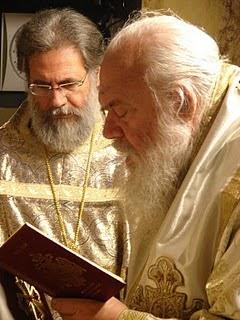
Σελίδα 58
Πρωτότυπο ↗Ένας τέτοιος είναι ο Αρχιμανδρίτης Αθηναγόρας Δικαιάκος, προστατευόμενος του Αρχιεπισκόπου, ο οποίος τον προορίζει για ποιμενάρχη της Νέας Μητροπόλεως Ιλίου. Αυτός ο ιερωμένος, αρέσκεται τους θερινούς μήνες να επισκέπτεται θέρετρα ακολασίας, έχοντας αποβάλλει το ράσο. Ο φωτογραφικός φακός τον συνέλαβε, όπως τον βλέπετε στη φωτογραφία, στην Μύκονο. Εδώ προκύπτουν και μερικά ακόμη ερωτήματα για τον Αρχιμανδρίτη: Υπάρχει η τακτική παρουσία του στην Αράχωβα; Για ποιους λόγους έφυγε από το μοναστήρι του Σαγματά στη Λιβαδειά; Χειρίζεται τα θέματα Τύπου για τον κ. Ιερώνυμο από την εποχή της Βοιωτίας;
Σελίδα 59
Πρωτότυπο ↗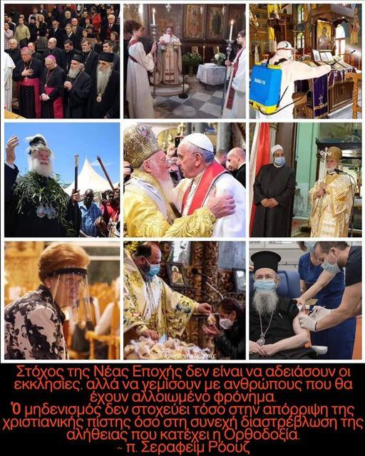